Версия документа: 3.00 (последний раз отредактировано: 2015-08-17) Включает в себя информацию об Tomb Raider Также включает в себя информацию о |
|
1. Введение
До сих пор сообщество Tomb Raider, главным образом программисты и энтузиасты моддеры, ссылались на документ под названием TRosettaStone, который не обновлялся с 1999 года, и его пересмотренный вариант (мы назвали его TRosettaStone 2), который был выполнен E. Поповым (E. Popov) в 2000 или 2001 году. Оба этих документа, помогавших в свое время, страдали от многих ошибок и неточностей.
Многие люди нашли эти ошибки и неточности, но никто из них не переделал существующей документации, сохраняя все свои знания только в своей голове. Общеизвестно, что оригиналу не хватает некоторой информации то здесь, то там, и что-то неправильно описано — но это нигде не упоминается (за исключением некоторых потерянных сообщений на форумах). Так что, когда новичок начинает программировать, он должен наступить на те же грабли, что и все остальные.
Цель TRosettaStone 3 заключается в замене оригинального документа и служить в качестве всеобъемлющего источника информации для тех, кто готов участвовать в разработке программного обеспечения для Tomb Raider. Мы будем использовать оригинальную TRosettaStone в качестве основы, в значительной степени заимствования из переиздания Е. Попова. Кроме того, этот документ будет широко заимствовать информацию из руководства пользователей TREP, инструкции, NGLE и информацию с кучи тем форумов и сообщений, касающихся внутренней структуры движка игры.
Тем не менее, в то время как оригинальный TRosettaStone и обновление Попова были направлены в первую очередь на изучение уже существующих игровых активов, такие как уровни, звуковые файлы, скрипты и т.д., этот документ создается в общем и в качестве эталона для программистов, создающих повторно игровые движки с открытым исходным кодом. Из-за этого мы иногда будем исследовать не только форматы файлов игры, но и внутреннюю логику игры, процедуры и другие связанные аспекты. Этот документ будет обновляться синхронно с развитием OpenTomb, одним из таких повторных проектов, который получил много отзывов от сообщества.
1.1. Описание
Этот документ содержит подробные описания форматов файлов данных оригинальной Tomb Raider. Предполагается, что читатель имеет знания и опыт программирования на C или C++ и имеет, по меньшей мере, общее знакомство с графическим программированием. Этот документ является автономным; все гиперссылки ссылаются только на документ.
Вся информация в этом документе, была получена самостоятельно, без помощи или оказания поддержки любого из Core Design или Eidos. Таким образом, в этом документе информация может содержать ошибки или упущения, а многие структуры и имена переменных были выведены из интерпретации данных (и, следовательно, может ввести в заблуждение или совершенно неправильно быть истолковано). Тем не менее, мы вновь используем определенные имена переменных и функций отличных от оригинальной отладочной сборки Tomb Raider и таблицы символов из просочившейся Tomb Raider Chronicles PSX SDK.
Вся информация в этом документе была проверена и, следовательно, правдоподобна, но также может быть неверно истолкована. Вся информация в настоящем документе, предоставляется как есть — вы получаете ровно столько, сколько платите, получаете свободно. Это свободный проект, который намерен документировать форматы файлов Tomb Raider.
1.2. Условности
Вообще, версии игры используют сокращения:
-
TR1 сокращение для Tomb Raider и Tomb Raider: Unfinished Business
-
TR2 сокращение для Tomb Raider II и Tomb Raider: The Golden Mask
-
TR3 сокращение для Tomb Raider III и Tomb Raider: The Lost Artifact
-
TR4 сокращение для Tomb Raider: The Last Revelation
-
TR5 сокращение для Tomb Raider: Chronicles
|
|
Форматы уровня TR4 относятся не только к оригинальной игре, но и к пользовательским уровням собранными фанатами с помощью Tomb Raider Level Editor ( |
Когда мы приводим некоторую зависимую от версий информацию о некоторых структурах или методах, эта информация будет помечена специальными изображениями, обозначающими версию игры этими картинками: для TR1, для TR2, для TR3, для TR4, и для TR5. Версия-зависимая информация будет продолжена до следующего параграфа или списка записи, пока не указано иное.
Кроме того, если внешние программы и утилиты участвуют, вот сокращения для них:
-
TRLE сокращение для Tomb Raider Level Editor — официальная утилита Core Design для изменения уровней.
-
NGLE сокращение для TRLE версии, которая была неофициально исправлена и в настоящее время широко используется для редактирования уровней сообществом.
-
Dxtre3d сокращение для так называемого неофициального редактора уровней созданного Felix aka Turbo Pascal.
-
TREP сокращение для бинарного патчера который используется для изменения движка TR4 в редактор уровней (в связке с TR5) для включения некоторых улучшений от сообщества.
-
TRNG еще один патчер для тех же целей, что и TREP, впрочем, несовместимый с ним. TRNG предоставляет более дополнительные возможности и улучшения для движка TR4.
-
FLEP сокращение для аналогичного патчера из TREP, который используется для того же движка TR4, предварительно модифицированного до TRNG.
1.3. Пока не известно
-
Структура освещения комнат из TR4 требует дополнительного пояснения.
-
То же самое для структуры освещения комнаты в TR5.
-
Точное значение понятия "слой комнаты" в TR5.
-
Уточнить значение для 4-го бита в структуре [tr2_room_vertex].
-
Уточнить назначение поля
Normalв структуре [tr5_room_vertex], и действительно ли полеAttributesбыло удалено. -
Вся структура
tr5_roomнуждается в детальном анализе из за всех лишних Unknown полей. -
Уточнить значения теней, влияющих на их радиус.
-
Определить назначение поля “flag/zone” в структуре
tr_camera.
1.4. Авторские права
Tomb Raider, Tomb Raider Gold, Unfinished Business, Tomb Raider II, Tomb Raider III, Tomb Raider: The Last Revelation, Tomb Raider Chronicles, Лара Крофт, и все изображения и данные внутри файлов игры и игрового движка являются Авторским правом © Square Enix.
2. The Fundamentals
2.1. File Types
Tomb Raider is driven by various sets of files — level files, script files, FMVs, audio tracks and sound files. In TR4 and TR5, there is also specific file type which contains cutscene data — cutseq pack.
2.1.1. The Script Files
The script file structure differs from version to version.
In TR1, all script info was embedded into executable file (TOMB.EXE), and thus is hardcoded. TR2 and TR3 had unified TOMBPC.DAT file, which contains all the
text strings describing the various elements in the game (e.g. the game engine knows about “Key 1”; it looks in TOMBPC.DAT to determine the name to be
displayed in Lara’s inventory, such as “Rusty Key” or “Taste rostige” or “Cle Rouillee”), the level and cut-scene filenames (e.g. WALL.TR2,
CUT3.TR2), the order in which they are to be played, and various per-level and per-game configuration options (e.g. what weapons and objects Lara starts the
level with, whether or not the “cheat” codes work, etc.).
TR4 and TR5 introduced a new script format, where the actual script defining the gameflow was separated from text strings used in game — hence, both TR4 and
TR5 have two .DAT files — SCRIPT.DAT and LANGUAGE.DAT, where LANGUAGE differs depending on regional origin of the game — US.DAT, FRENCH.DAT,
JAPANESE.DAT, and so on.
2.1.2. The Level Files
The level files, {level-name}.PHD/TUB/TR2/TR4/TRC, contain everything about the level, including the geographical geometry, the geometry (meshes) of all
animate and inanimate objects in the level, all the textures and colour data, all animation data, index information (and, in TR1, TR4 and TR5 — also the
actual sound sample data) for all sounds, accessibility maps — everything necessary to run the game. For whatever reason, Core has included everything in one
file instead of breaking it up into logical groupings; this means that every level contains all the meshes, textures, sound information, and animation data for
Lara and all of her weapons. There are a fair number of other redundancies, too.
Since TR4, the level file is divided into several chunks, each of them being compressed with zlib. Usually, each chunk of compressed data is preceded by two 32-bit unsigned integers defining the uncompressed size of the chunk and the compressed size of the chunk. Therefore, the engine allocates an empty buffer equal to the uncompressed size of a specific chunk, and another buffer equal to the compressed size. The compressed data is loaded directly within it based on the compressed size. The compressed data is then decompressed into the result buffer and the buffer containing the compressed data is destroyed.
It’s good to note the origins of level file extension. While it is obvious that TR2/TR4/TRC extensions specify abbreviations of the game name. .PHD is
actually the initials of the Lead Programmer for Tomb Raider 1: Paul Howard Douglas. Looks like this programmer contributed a lot of the code during early
development stages of Tomb Raider. This is suggested because the phd initials also became a prefix for several helper functions in the original source code,
for instance: phd_sin, phd_cos etc. Most likely, he was also responsible for developing the level file structure for Tomb Raider.
2.1.3. FMVs (Full Motion Videos)
TR1-3 shared the same proprietary Eidos codec for videos, called Escape. The extension for such files is .RPL, that’s why they occasionally (and
mistakingly) called Replay codec. Signature feature of RPL videos is that they are always interlaced with black stripes; most likely, this was used to conserve
disk space (however, PlayStation videos were in .STR format, which is basic MPEG compression, and they had no interlacing — but suffered from blocking
issues). In TR1 and TR2, framerate was limited to 15 FPS, while in TR3 it was doubled to 30 FPS.
For a long time, Escape codec was largely unexplored and barely reverse-engineered; there was only an abandoned open source Mplayer implementation for some Escape codec versions, but recent ffmpeg revisions feature fully functional decoder for Escape videos.
Since TR4, all FMVs are in Bink Video format, which is much more common and easy to rip, convert and explore.
2.1.4. Sound Files — Audio Tracks
These are long sound files which occasionally play either on some in-game events (e.g. approaching certain important checkpoint in game, like big hall with
ladder and two wolves in “Caves” — it triggers danger music theme) or in looped manner as background ambience. Audio tracks are stored differently across TR
game versions — CD-Audio in TR1-TR2, single merged file CDAUDIO.WAD in TR3, and separate audio files in TR4 and TR5.
2.1.5. Sound Files — Samples
TR2 and TR3 also featured external sound sample files, which allowed to share samples between all level files. This sound file is called MAIN.SFX, and usually
placed in DATA subfolder. Hence, engine loads sound samples not from level files (as it’s done in TR1, TR4 and TR5 — see above), but rather from this
MAIN.SFX file.
2.1.6. Cut Sequence Packs
TR4 and TR5 featured special data type containing all the necessary information to play in-game cutscenes. While in earlier games such info was embedded into
the level file itself, and generally, cutscenes themselves were separate level files (easily distinguished by their filenames, e.g. CUT1.TR2 etc.), TR4
changed this approach, and cutscenes could be loaded and played right inside level files at runtime.
The data for such cutscene setup was packed into single file titled CUTSEQ.PAK in TR4 or CUTSEQ.BIN in TR5. There will be a special section describing whole
cutseq file format.
2.2. Basic Data Types
For the purposes of further discussion, the following are assumed:
|
specifies an 8-bit signed integer (range -128..127) |
|
specifies an 8-bit unsigned integer (range 0..255) |
|
specifies a 16-bit signed integer (range -32768..32767) |
|
specifies a 16-bit unsigned integer (range 0..65535) |
|
specifies a 32-bit signed integer (range -2147483648..2147483647) |
|
specifies a 32-bit unsigned integer (range 0..4294967295) |
|
specifies a 32-bit IEEE-754 floating-point number |
|
specifies a 32-bit non-trivial 16.16 fixed point value — see further |
All multi-byte integers ({u}int16_t, {u}int32_t) are stored in little-endian (Intel-x86, etc.) format, with the least significant byte stored first and the
most significant byte stored last. When using this data in platforms with big-endian (PowerPC, etc.) number format, be sure to reverse the order of bytes.
2.2.1. 16.16 Fixed Point Data Type
This very specific 32-bit data type mimics floating-point behaviour, while remaining integer. It is done by splitting floating-point value into whole and
fractional parts, and keeping each part as int16_t and uint16_t correspondingly. Whole part is kept as it is, while fractional part is multiplied by 65536,
and then kept as unsigned integer. So, the formula to calculate floating-point from mixed float is:
$F_{real} = P_{whole} + ( P_{frac} \div 65536 )$ |
…where $P_{whole}$ is whole part of mixed float (signed), and $P_{frac}$ is fractional part of mixed float (unsigned).
|
|
The reason why such complicated setup was invented is to avoid using floating-point numbers. In 90% of all cases, Tomb Raider engines use integer numbers, even for geometry calculations and animation interpolations. The root of this setup lies in multi-platform nature of the code, which was simultaneously written for PC and PlayStation. While PCs had enough computational power to deal with floats at that time, PlayStation relied only on integers. However, some internal variables and constants (like drawing distance, fog distance constants and some light properties) are PC-specific and stored in floating point numbers. Also, last game in series, TR5, extensively used floating-point numbers for certain data types — like colours, vertices and coordinates. |
2.2.2. Data Alignment
Data alignment is something one has to be careful about. When some entity gets an address that is a multiple of $n$, it is said to be $n$-byte aligned. The reason it is important here is that some systems prefer multibyte alignment for multibyte quantities, and compilers for such systems may pad the data to get the “correct” alignments, thus making the in-memory structures out of sync with their file counterparts. However, a compiler may be commanded to use a lower level of alignment, one that will not cause padding. And for TR’s data structures, 2-byte alignment should be successful in nearly all cases, with exceptions noted below.
To set single-byte alignment in any recent compiler, use the following compiler directive:
#pragma pack(push, 1)
To return to the project’s default alignment, use the following directive:
#pragma pack(pop)
2.3. Basic Terms
2.3.1. Coordinates
The world coordinate system is oriented with the $X-Z$ plane horizontal and $Y$ vertical, with $-Y$ being “up” (e.g.
decreasing $Y$ values indicate increasing altitude). The world coordinate system is specified using int32_t values; however, the geography is
limited to the $+X$/$+Z$ quadrant for reasons that are explained below. Mesh coordinates are relative and are specified using int16_t.
There are some additional coordinate values used, such as “the number of 1024-unit blocks between points A and B”; these are simply scaled versions of more conventional coordinates.
2.3.2. Colours
All colours in TR are specified either explicitly (using either the [tr_colour] structure, described below, 16-bit structures or 32-bit structures) or implicitly, by indexing one of the palettes. However, it is only applicable to TR1-3 — there is no palette in TR4 and TR5.
In TR1-3, mesh surfaces could be either coloured or textured. Coloured surfaces are “painted” with a single colour that is either specified explicitly or using an index into the palette.
Beginning from TR4, coloured faces feature was removed, so each face must have a texture attached to it.
2.3.3. Textures
Textured surfaces map textures (bitmapped images) from the texture tiles (textiles) to each point on the mesh surface. This is done using conventional UV mapping, which is specified in “Object Textures” below; each object texture specifies a mapping from a set of vertices to locations in the textile, and these texture vertices are associated with position vertices specified here. Each textile is a 256x256 pixels wide area.
The 16-bit textile array, which contains [tr_textile16] structures, specifies colours using 16-bit ARGB, where the highest bit (0x8000) is a crude alpha
channel (really just simple transparency — 0 = transparent, 1 = opaque). The next 5 bits (0x7C00) specify the red channel, the next 5 bits (0x03E0)
specify the green channel, and the last 5 bits (0x001F) specify the blue channel, each on a scale from 0..31.
If, for some reason, 16-bit textures are turned off, all colours and textures use an 8-bit palette that is stored in the level file. This
palette consists of a 256-element array of [tr_colour] structures, each designating some colour; textures and other elements that need to reference a colour
specify an index (0..255) into the Palette[] array. There is also a 16-bit palette, which is used for identifying colours of solid polygons. The 16-bit
palette contains up to 256 four-byte entries; the first three bytes are a [tr_colour], while the last byte is ignored (set to 0).
The 32-bit textile array, which contains [tr4_textile32] structures, specifies colours using 32-bit ARGB, where the highest byte (A) is unused. The next bytes specify (in this order) the red / green / blue channels. The 16-bit and 32-bit textile arrays depict the same graphics data, but of course the 32-bit array has a better colour resolution. It’s the one used if you select a 32-bit A8R8G8B8 texture format in the setup menu from TR4 and TR5.
2.3.4. Meshes and Sprites
There are two basic types of “visible objects” in TR2 — meshes and sprites.
Meshes are collections of textured or coloured polygons that are assembled to form a three-dimensional object (such as a tree, a tiger, or Lara herself). The “rooms” themselves are also composed of meshes. Mesh objects may contain more than one mesh; though these meshes are moved relative to each other, each mesh is rigid.
Sprites are two-dimensional images that are inserted into three-dimensional space, such as the “secret” dragons, ammunition, medi-packs, etc. There are also animated sprite sequences, such as the fire at the end of “The Great Wall.” Core had presumably used this method to reduce CPU utilization on the PlayStation and/or the earlier PCs. Sprites become less and less abundant; TR2 has very few scenery sprites, and TR3’s pickups are models instead of sprites.
2.3.5. Entities
Each Tomb Raider game has an internal hardcoded set of entity types, each of them linked to specific model (hence, entity type and model can be considered equal). Entity is an individual object with its own specific function and purpose. Almost every “moving” or “acting” thing you see is an entity — like enemies, doors, pick-up items, and even Lara herself.
A level can contain numerous instances of the same entity type, e.g. ten crocodiles, five similar doors and switches, and so on.
Entities are referenced in one of two ways — as an offset into an array (e.g. Entities[i]) or internally, using an unique index . In the latter case, the related array (Entities[]) is searched until a matching index is found. Each entity also refers to its entity type by TypeID to select behaviour and model to draw. In this case, Models[] array is searched for matching TypeID until one found.
2.3.6. Animations
There are three basic types of animations in TR, two corresponding with textures — sprite animations and animated textures — and one corresponding directly with meshes.
Sprite Animations
Sprite animation (sprite sequences) consists simply of a series of sprites that are to be displayed one after another, e.g. grenade explosions. Sprite animations were quite common in earlier games (TR1 and TR2), while in TR3 onwards there are almost no sprite animations — only notable example is fire particle sprites and water splash effect.
Animated Textures
These are either a list of textures cycled through in endless loop, or (in TR4-5) a single texture with shifting coordinates, creating an illusion of “rolling” image.
Mesh Animations
Mesh animations are much more complex than sprite and texture animations, and done by what is essentially a skeletal-modeling scheme. These involve some arrays (Frames[] and MeshTree[]) of offsets and rotations for each element of a composite mesh. Frames are then grouped into an array (Animations[]) that describes discrete “movements”, e.g. Lara taking a step or a tiger striking with its paw. The animations are “sewn together” by a state change array and an animation dispatch array, which, together with state information about the character, ensure that the animation is fluid (e.g. if Lara is running and the player releases the RUN key, she will stop; depending upon which of her feet was down at the time, either her left or right foot will strike the floor as part of the “stop” animation. The correct animation (left foot stop vs. right foot stop) is selected using these structures and the state information).
2.3.7. Lighting
There are two main types of lighting in Tomb Raider, constant and vertex. Constant lighting means that all parts of an object have the same illumination, while in vertex lighting, each polygon vertex has its own light value, and the illumination of the polygon interiors is interpolated from the vertex values.
Furthermore, lighting can be either internal or external. Internal lighting is specified in an object’s data, external lighting is calculated using the room’s light sources (ambient light, point light sources, spotlights (TR4-5), dynamic lights).
When available, external lighting also uses the vertex normals to calculate the incoming light at each vertex. Light intensities are described either with a single value or with a 16 bits color value (you can see it more like a “color filter”), depending mainly on the TR version.
Light intensities are described with a single value in TR1 and a pair of values in TR2 and TR3; the paired values are almost always equal, and the pairing may reflect some feature that was only imperfectly implemented, such as off/on or minimum/maximum values. In TR1 and TR2, the light values go from 0 (maximum light) to 8192 (minimum light), while in TR3, the light values go from 0 (minimum light) to 32767 (maximum light).
2.3.8. Sound Samples
There are two ways for sound samples to play.
First one is basically sound emitter sitting at a static global position in level, and continuously emitting specified sound (such as waterfalls — these are in
SoundSources[]). Second one is triggered sounds — these are sounds played when some event happens, such as at certain animation frames (footsteps and other
Lara sounds), when doors open and close, and when weapons are fired.
Either way, each played sound is referred to using a three-layer indexing scheme, to provide a maximum amount of abstraction. An internal sound index references
SoundMap[], which points to a SoundDetails[] record, which in turn points to a SampleIndices[] entry, which in turn points to a sound sample.
SoundDetails[], contains such features as sound intensity, how many sound samples to choose from, among others. The sound samples themselves are in Microsoft
WAVE format, and, as already mentioned, they are embedded either in the data files (TR1, TR4 and TR5) or in a separate file (MAIN.SFX) in TR2 and TR3.
2.4. Basic Data Structures
Much of the .TR2 file is comprised of structures based on a few fundamental data structures, described below.
2.4.1. Colour Structures
This is how most colours are specified.
struct tr_colour // 3 bytes
{
uint8_t Red; // Red component (0 -- darkest, 255 -- brightest)
uint8_t Green; // Green component (0 -- darkest, 255 -- brightest)
uint8_t Blue; // Blue component (0 -- darkest, 255 -- brightest)
};
(Some compilers will pad this structure to make 4 bytes; one must either read and write 3 bytes explicitly, or else use a simple array of bytes instead of this structure.)
And as mentioned earlier, the 16-bit palette uses a similar structure:
In TR5, there is new additional colour type composed of floating-point numbers. This type is primarily used in light structures.
2.4.2. Vertex Structures
This is how vertices are specified, using relative coordinates. They are generally formed into lists, such that other entities (such as quads or triangles) can refer to them by simply using their index in the list.
As with colours, TR5 introduced additional vertex type comprised of floating-point numbers:
2.4.3. Rectangular (Quad) Face Definition
Four vertices (the values are indices into the appropriate vertex list) and a texture (an index into the object-texture list) or colour (index into 8-bit
palette or 16-bit palette). If the rectangle is a coloured polygon (not textured), the .Texture element contains two indices: the low byte (Texture & 0xFF)
is an index into the 256-colour palette, while the high byte (Texture >> 8) is in index into the 16-bit palette, when present. A textured rectangle will have
its vertices mapped onto all 4 vertices of an object texture, in appropriate correspondence.
Texture field can have the bit 15 set: when it is, the face is double-sided (i.e. visible from both sides).
If the rectangle is a coloured polygon (not textured), the .Texture element contains two indices: the low byte (Texture & 0xFF) is an index
into the 256-colour palette, while the high byte (Texture >> 8) is in index into the 16-bit palette, when present.
TR4 and later introduced an extended version only used for meshes, not for triangles and quads making rooms:
The only difference is the extra field Effects. It has this layout:
-
Bit 0: if set, face has additive alpha blending (same meaning that when the
Attributefield of [tr_object_texture] is 2, but this flag overrides it).
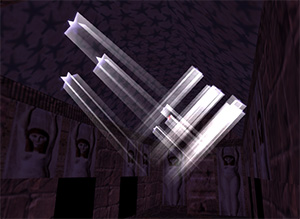 |
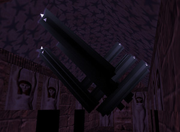 |
Bit 0 set, blending enabled |
Bit 0 not set, blending disabled |
-
Bits 1..7: strength of environment mapping effect (so-called “shiny effect” in TRLE community). Environment map is derived from special pre-rendered texture. The bigger the value is, the more visible the effect is.
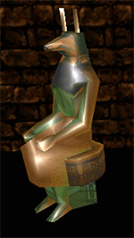 |
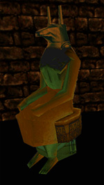 |
Shiny effect at max |
No shiny effect |
-
Note that only externally lit meshes can use environment mapping in original engines. If you use it with internally lit meshes, you will crash the game.
-
TR4 engine doesn’t support environmental map for Lara’s joints. It simply wasn’t implemented, so if you apply effect to Lara joints, game will crash. For TR5, a special object called Lara’s catsuit was developed to support environmental map on transformed meshes.
2.4.4. Triangular Face Definition
These structures has the same layout than the quad face definitions, except a textured triangle will have its vertices mapped onto the first 3 vertices of an object texture, in appropriate correspondence. Moreover, a triangle has only 3 vertices, not 4.
struct tr_face3 // 8 bytes
{
uint16_t Vertices[3];
uint16_t Texture;
};
[[tr4_mesh_face3]]
struct tr4_mesh_face3 // 10 bytes
{
uint16_t Vertices[3];
uint16_t Texture;
uint16_t Effects; // TR4-5 ONLY: alpha blending and environment mapping strength
};
All the info about Texture and Effects fields is also similar to same info from [tr_face4] and [tr4_mesh_face4] respectively.
2.4.5. 8-bit Texture Tile
Each uint8_t represents a pixel whose colour is in the 8-bit palette.
2.4.6. 16-bit Texture Tile
Each uint16_t represents a pixel whose colour is of the form ARGB, MSB-to-LSB:
1-bit transparency (0 = transparent, 1 = opaque) (0x8000)
5-bit red channel (0x7C00)
5-bit green channel (0x03E0)
5-bit blue channel (0x001F)
3. Room Geometry
3.1. Overview
A room in TR2 is simply a rectangular three-dimensional area. A room may be “indoors” or “outdoors,” may or may not be enclosed, may be accessible or inaccessible to Lara, may or may not contain doors or objects.
All rooms have “portals,” called “doors” in some documentation, which are pathways to adjacent rooms. There are two kinds of portals — visibility portals and collisional portals. Visibility portals are for determining how much of a room (if any) is visible from another room, while collisional portals are for enabling an object to travel from one room to another.
The visibility portals are most likely for doing “portal rendering”, which is a visibility-calculation scheme that goes as follows: the viewpoint is a member of some room, which is then listed as visible from it. This room’s portals are checked for visibility from that viewpoint, and visible portals have their opposite-side rooms marked as visible. These rooms are then checked for portals that are visible from the viewpoint through the viewpoint’s room’s portals, and visible ones have their opposite-side rooms marked as visible. This operation is repeated, with viewing through intermediate portals, until all visible portals have been found. The result is a tree of rooms, starting from the viewpoint’s room; only those rooms and their contents need to be rendered.
It is clear that both visibility and collision calculations require that objects have room memberships given for them, and indeed we shall find that most map objects have room memberships.
Rooms may overlap; as we shall see, this is involved in how horizontal collisional portals are implemented. However, different rooms may overlap without either being directly accessible from the other; there are several inadvertent examples of such “5D space” in the Tomb Raider series. The only possibly deliberate example I know of is the flying saucer in “Area 51” in TR3, whose interior is bigger than its exterior.
A room can have an “alternate room” specified for it; that means that that room can be replaced by that alternate as the game is running. This trick is used to produce such tricks as empty rooms vs. rooms full of water, scenery rearrangements (for example, the dynamited house in “Bartoli’s Hideout” in TR2), and so forth. An empty room is first created, and then a full room is created at its location from a copy of it. The empty room then has that full room set as its alternate, and when that room is made to alternate, one sees a full room rather than an empty one.
The rooms are stored sequentially in an array, and “Room Numbers” are simply indices into this array (e.g. “Room Number 5” is simply Rooms[5]; the first
room is Rooms[0]).
Rooms are divided into sectors (or squares), which are 1024x1024 unit squares that form a grid on the $X-Z$ plane. Sectors are the defining area for floor/ceiling heights and triggers (e.g. a tiger appears and attacks when Lara steps on a given square); the various attributes of each sector are stored in the Sector Data (described in this section) and the [FloorData]. As an aside, Sectors correspond to the “squares,” easily visible in all of the Tomb Raider games, that experienced players count when gauging jumps; they also account for some of the game’s less-appealing graphic artifacts. Careful tiling and texture construction can make these “squares” almost invisible.
|
|
Each room has two types of surface geometry — rendered and collisional. The former are what is seen, while the latter control how objects collide and interact with the world. Furthermore, these two types are specified separately in the room data — each type is completely independent of other, i. e. collisional geometry shouldn’t exactly match visible room geometry. While this distinctive feature was never used in originals (collisional room “meshes” fully resembled visible room “meshes”), it is now extensively used by level editing community with the help of a program called meta2tr. This utility allows level builder to replace visible geometry generated by TRLE with any custom geometry, usually modelled in Metasequoia 3D editor (hence the name of meta2tr utility). |
Rooms are defined with a complex structure, which is described below “inside-out,” meaning that the smaller component structures are described first, followed by the larger structures that are built using the smaller structures.
3.2. Room Structures
3.2.1. Room header
$X / Z$ indicate the base position of the room mesh in world coordinates ($Y$ is always zero-relative)
struct tr_room_info // 16 bytes
{
int32_t x; // X-offset of room (world coordinates)
int32_t z; // Z-offset of room (world coordinates)
int32_t yBottom;
int32_t yTop;
};
yBottom is actually largest value, but indicates lowest point in the room.
yTop is actually smallest value, but indicates highest point in the room.
TR5 uses an extended version of this structure:
struct tr5_room_info // 20 bytes
{
int32_t x; // X-offset of room (world coordinates)
int32_t y; // Y-offset of room (world coordinates) - only in TR5
int32_t z; // Z-offset of room (world coordinates)
int32_t yBottom;
int32_t yTop;
};
The additional y value is usually 0.
3.2.2. Portal Structure
These portals, sometimes called “doors”, define the view from a room into another room. This can be through a “real” door, a window, or even some open area that makes the rooms look like one big room. Note that “rooms” here are really just areas; they aren’t necessarily enclosed. The portal structure below defines only visibility portals, not an actual door model, texture, or action (if any). And if the portal is not properly oriented, the camera cannot “see” through it.
struct tr_room_portal // 32 bytes
{
uint16_t AdjoiningRoom; // Which room this portal leads to
tr_vertex Normal;
tr_vertex Vertices[4];
};
Normal field tells which way the portal faces (the normal points away from the adjacent room; to be seen through, it must point toward the viewpoint).
Vertices are the corners of this portal (the right-hand rule applies with respect to the normal). If the right-hand-rule is not followed, the portal will
contain visual artifacts instead of a viewport to AdjoiningRoom.
3.2.3. Room Sector Structure
All the geometry specified here is collisional geometry.
struct tr_room_sector // 8 bytes
{
uint16_t FDindex; // Index into FloorData[]
uint16_t BoxIndex; // Index into Boxes[] (-1 if none)
uint8_t RoomBelow; // 255 is none
int8_t Floor; // Absolute height of floor
uint8_t RoomAbove; // 255 if none
int8_t Ceiling; // Absolute height of ceiling
};
Floor and Ceiling are signed numbers of 256 units of height (relative to 0) — e.g. Floor 0x04 corresponds to $Y = 1024$ in world coordinates.
Therefore, 256 units is a minimum vertical stride of collisional geometry. However, this rule could be broken by specific entities, which Lara can stand on.
But horizontal sector dimensions, which, as mentioned earlier, are 1024 x 1024 (in world coordinates), could not. Therefore, minimal horizontal platform
dimensions, on which Lara can stand and grab, are 1024 x 1024 as well.
|
|
This implies that, while $X$ and $Z$ can be quite large, $Y$ is constrained to -32768..32512. |
Floor and Ceiling value of 0x81 is a magic number used to indicate impenetrable walls around the sector. Floor values are used by the game engine to
determine what objects Lara can traverse and how. Relative steps of 1 (-256) can be walked up; steps of 2..7 (-512..-1792) can/must be jumped up; steps larger
than 7 (-2048..-32768) cannot be jumped up (too tall).
RoomAbove and RoomBelow values indicate what neighboring rooms are in these directions — the number of the room below this one and the number of the room
above this one. If RoomAbove is not none, then the ceiling is a collisional portal to that room, while if RoomBelow is not none, then the floor is a
collisional portal to that room.
Also, RoomBelow value is extensively used by engine to determine actual sector data and triggers in so-called stacked room setups, when one room is placed
above another through collisional portal. The thing is, engine uses sector data and triggers only for the lowest sector of the stacked room setup, so it
recursively scans for a lowest room to determine which sector to use.
FDindex is a pointer to specific entry in [FloorData] array, which keeps all the information about sector flags, triggers and other parameters. While it is
implied that one FDindex entry may be shared between several sectors, it is usually not the case with original Tomb Raider levels built with TRLE. However,
Dxtre3d takes advantage of this feature and may optimize similar sectors to share same FDindex pointer.
BoxIndex is a pointer to special [Boxes] array entry, which is basically a subset of sectors with same height configuration. It is primarily used for AI
pathfinding (see the Non-player character behaviour chapter for more details).
In these games, BoxIndex field is more complicated, and actually contains two packed values. Bits 4..14 contain the actual box index, and
bits 0..3 contain material index, which is used to produce specific footstep sound, when Lara is walking or running in this sector. On PlayStation game
versions, this index was also used to determine if footprint textures should be applied to this particular place.
Majority of material index values are the same across game versions, but some of them exist only in particular game. Here is the description:
-
0 — Mud
-
1 — Snow (TR3 and TR5 only)
-
2 — Sand
-
3 — Gravel
-
4 — Ice (TR3 and TR5 only)
-
5 — Water (unused, as water footstep is only activated in water rooms)
-
6 — Stone (unused, as it is default footstep sound)
-
7 — Wood
-
8 — Metal
-
9 — Marble (TR4 only)
-
10 — Grass (same sound effect as sand)
-
11 — Concrete (same sound effect as stone, hence unused)
-
12 — Old wood (same sound effect as wood)
-
13 — Old metal (same sound effect as metal)
Mud, snow, sand, grass and maybe some other materials produce footprints in PlayStation version.
Furthermore, in TR3-5, actual box index may contain special value 2047, which is most likely indicates that this sector is a slope on which Lara can slide (and, therefore, possibly impassable by most NPCs).
3.2.4. Room Light Structure
|
|
TR engines always used static room lights only for processing lighting on entities (such as Lara, enemies, doors, and others). This is called external lighting. For room meshes, they used so-called internal, or pre-baked lighting, which is done on level building stage: lights are calculated and applied to room faces via vertex colours. There is no way to change room lighting when the level is compiled — meaning, any changes in light positions, intensities and colour won’t affect room faces. |
There are four different types of room light structures. First one is used in TR1-2, second is used in TR3, third is used in TR4, and fourth is used in TR5. Here is the description of each:
TR1 Room Lighting
struct tr_room_light // 18 bytes
{
int32_t x, y, z; // Position of light, in world coordinates
uint16_t Intensity1; // Light intensity
uint32_t Fade1; // Falloff value
};
X/Y/Z are in world coordinates. Intensity1/Intensity2 are almost always equal. This lighting only affects externally-lit objects. Tomb Raider 1 has only
the first of the paired Intensity and Fade values.
Intensity1 ranges from 0 (dark) to 0x1FFF (bright). However, some rooms occasionally have some lights with intensity greater than 0x1FFF (for example, look at
room #9, 2nd light in level1.phd). Fade1 is the maximum distance the light shines on, and ranges from 0 to 0x7FFF.
TR2 Room Lighting
TR2 uses an extended version of TR1 light structure:
struct tr2_room_light // 24 bytes
{
int32_t x, y, z; // Position of light, in world coordinates
uint16_t Intensity1; // Light intensity
uint16_t Intensity2; // Only in TR2
uint32_t Fade1; // Falloff value
uint32_t Fade2; // Only in TR2
};
Intensity2 and Fade2 values are seemingly not used. Intensity1 can go very well beyond 0x1FFF, right to 0x7FFF (ultra bright light). Above 0x7FFF, it is
always black, so the number is pseudo-signed (negative values are always treated as zero).
TR3 Room Lighting
struct tr3_room_light // 24 bytes
{
int32_t x, y, z; // Position of light, in world coordinates
tr_colour4 Colour; // Colour of the light
uint32_t Intensity;
uint32_t Fade; // Falloff value
};
Intensity is the power of the light and ranges mainly from 0 (low power) to 0x1FFF (high power). Though, values greater than 0x1FFF do exist and their
meanings are unknown. Fade is the distance max the light can shine on. Range is mainly from 0 to 0x7FFF, but negative values do exist and their meanings are
unknown.
TR4 Room Lighting
struct tr4_room_light // 46 bytes
{
int32_t x, y, z; // Position of light, in world coordinates
tr_colour Colour; // Colour of the light
uint8_t LightType;
uint8_t Unknown; // Always 0xFF?
uint8_t Intensity;
float In; // Also called hotspot in TRLE manual
float Out; // Also called falloff in TRLE manual
float Length;
float CutOff;
float dx, dy, dz; // Direction - used only by sun and spot lights
};
LightType is somewhat similar to D3D light type, but there are some differences.
-
0 — Sun
-
1 — Light
-
2 — Spot
-
3 — Shadow
-
4 — Fog bulb
|
|
Fog bulb is a special case of room light, which actually don’t work as usual light. It serves as a point in space, where a kind of volumetric fog effect is generated. It works only if user has enabled corresponding option in game setup. Fog bulbs don’t use |
|
|
|
|
|
|
|
|
|
|
|
|
|
|
|
|
|
|
|
|
|
|
|
|
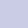 |
|
|
|
|
|
|
|
|
|
|
|
|
|
|
|
|
|
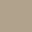 |
|
|
|
|
|
|
|
|
|
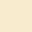 |
|
|
|
TR5 Room Lighting
struct tr5_room_light // 88 bytes
{
float x, y, z; // Position of light, in world coordinates
float r, g, b; // Colour of the light
uint32_t Separator // Dummy value = 0xCDCDCDCD
float In; // Cosine of the IN value for light / size of IN value
float Out; // Cosine of the OUT value for light / size of OUT value
float RadIn; // (IN radians) * 2
float RadOut; // (OUT radians) * 2
float Range; // Range of light
float dx, dy, dz; // Direction - used only by sun and spot lights
int32_t x2, y2, z2; // Same as position, only in integer.
int32_t dx2, dy2, dz2; // Same as direction, only in integer.
uint8_t LightType;
uint8_t Filler[3]; // Dummy values = 3 x 0xCD
};
x,y,z values shouldn’t be used by sun type light, but sun seems to have a large x value (9 million, give or take), a zero y value, and a small z value
(4..20) in the original TR5 levels.
In and Out values aren’t used by sun type. For the spot type, these are the hotspot and falloff angle cosines. For the light and shadow types,
these are the TR units for the hotspot / falloff (1024 = 1 sector).
RadIn, RadOut and Range are only used by the spot light type.
dx, dy and dz values are used only by the sun and spot type lights. They describe the directional vector of the light. This can be obtained by:
-
if both
xandy$\mathnormal{LightDirectionVectorX} = \cos(X) * \sin(Y)$ -
$\mathnormal{LightDirectionVectorY} = \sin(X)$
-
$\mathnormal{LightDirectionVectorZ} = \cos(X) * \cos(Y)$
x2, y2, z2, dx2, dy2 and dz2 values repeat previous corresponding information in long data types instead of floats.
3.2.5. Room Vertex Structure
This defines the vertices within a room. As mentioned above, room lighting is internal vertex lighting, except for necessarily external sources like flares, flame emitters and gunflashes. Room ambient lights and point sources are ignored.
As TR3 introduced colored lighting, room vertex structure drastically changed. It changed once again in TR5, when floating-point numbers were introduced. So we’ll define vertex structure for TR1-2, TR3-4 and TR5 independently.
TR1-2 Room Vertex Structure
Vertex is the coordinates of the vertex, relative to [tr_room_info] x and z values.
Lighting ranges from 0 (bright) to 0x1FFF (dark). This value is ignored by TR2, and Lighting2 is used instead with the same brightness range.
TR2 uses an extended version of the structure:
struct tr2_room_vertex // 12 bytes
{
tr_vertex Vertex;
int16_t Lighting;
uint16_t Attributes; // A set of flags for special rendering effects
int16_t Lighting2; // Almost always equal to Lighting1
};
Attributes field is a set of flags, and their meaning is:
-
Bits 0..4 are only used together in combination with the
LightModefield of the [tr_room] structure. See below. -
Bit 15: When used in room filled with water, don’t move the vertices of the room when viewed from above (normally, when viewed from above, the vertices of a room filled with water moves to simulate the refraction of lights in water). Note that when viewed from inside the room filled with water, the vertices of the other rooms outside still moves.
Lighting field is ignored by TR2, and Lighting2 is used instead with the same brightness range — from 0 (bright) to 0x1FFF (dark).
TR3-4 Room Vertex Structure
struct tr3_room_vertex // 12 bytes
{
tr_vertex Vertex;
int16_t Lighting; // Value is ignored!
uint16_t Attributes; // A set of flags for special rendering effects
uint16_t Colour; // 15-bit colour
};
Lighting value is ignored by the engine, as now each vertex has its own defined 15-bit colour (see below).
Attributes bit flags were extended. Here is the list:
-
Bit 13: Water / quicksand surface “wave” movement. Brightness is also shifting, if this flag is set (but it’s not the same type as with Bit 14, it’s much less noticeable).
-
Bit 14: Simulates caustics by constantly shifting vertex colour brightness. Used mainly in underwater rooms, but can be used in rooms without water. In TR2, there was a similar effect, but it was assigned for all vertices in any water room.
-
Bit 15: Same “wave” effect as with Bit 13, but without light effect (?).
|
|
The amplitude of the “wave” effect depends on WaterScheme value specified in room structure. |
Colour value specifies vertex colour in 15-bit format (each colour occupies 5 bits). Therefore, each colour value’s maximum is 31. You can use this code to
get each colour:
-
Red:
((Colour & 0x7C00) >> 10) -
Green:
((Colour & 0x03E0) >> 5) -
Blue:
(Colour & 0x001F)
TR5 Room Vertex Structure
In TR5, room vertex structure was almost completely changed. Coordinates were converted to floats, and normal was added:
struct tr5_room_vertex // 28 bytes
{
tr5_vertex Vertex; // Vertex is now floating-point
tr5_vertex Normal;
uint32_t Colour; // 32-bit colour
};
There is no more Attributes field in room vertex structure for TR5.
3.2.6. Room Sprite Structure
struct tr_room_sprite // 4 bytes
{
int16_t Vertex; // Offset into vertex list
int16_t Texture; // Offset into sprite texture list
};
Vertex indicates an index into room vertex list (Room.Vertices[room_sprite.Vertex]), which acts as a point in space where to display a sprite.
Texture is an index into the sprite texture list.
3.2.7. Room Data Structure
This is the whole geometry of the “room,” including walls, floors, ceilings, and other embedded landscape. It does not include objects that Lara can interact with (keyholes, moveable blocks, moveable doors, etc.), neither does it include static meshes (mentioned below in the next section).
The surfaces specified here are rendered surfaces.
|
|
This is not a “real” C/C++ structure, in that the arrays are sized by the NumXXX elements that precede them. Also [tr_room_vertex] could be
replaced by any other version-specific room vertex type (tr3_room_vertex, etc.). |
virtual struct tr_room_data // (variable length)
{
int16_t NumVertices; // Number of vertices in the following list
tr2_room_vertex Vertices[NumVertices]; // List of vertices (relative coordinates)
int16_t NumRectangles; // Number of textured rectangles
tr_face4 Rectangles[NumRectangles]; // List of textured rectangles
int16_t NumTriangles; // Number of textured triangles
tr_face3 Triangles[NumTriangles]; // List of textured triangles
int16_t NumSprites; // Number of sprites
tr2_room_sprite Sprites[NumSprites]; // List of sprites
};
3.2.8. Room Static Mesh Structure
Positions and IDs of static meshes (e.g. skeletons, spiderwebs, furniture, trees). This is comparable to the [tr2_item] structure, except that static meshes have no animations and are confined to a single room.
TR1 Room Static Mesh Structure
struct tr_room_staticmesh // 18 bytes
{
uint32_t x, y, z; // Absolute position in world coordinates
uint16_t Rotation;
uint16_t Intensity1;
uint16_t MeshID; // Which StaticMesh item to draw
};
Intensity1 ranges from 0 (bright) to 0x1FFF (dark).
In Rotation field, high two bits (0xC000) indicate steps of 90 degrees (e.g. (Rotation >> 14) * 90). However, when parsing this value, no extra bitshifting
is needed, as you can simply interpret it using this formula:
float Real_Rotation = (float)Rotation / 16384.0f * -90;
TR2 Room Static Mesh Structure
TR2 again uses an extended version:
struct tr2_room_staticmesh // 20 bytes
{
uint32_t x, y, z; // Absolute position in world coordinates
uint16_t Rotation;
uint16_t Intensity1;
uint16_t Intensity2; // Absent in TR1
uint16_t MeshID; // Which StaticMesh item to draw
};
Intensity2 is seemingly not used, as changing this value does nothing.
TR3-5 Room Static Mesh Structure
virtual struct tr3_room_staticmesh // 20 bytes
{
uint32_t x, y, z; // Absolute position in world coordinates
uint16_t Rotation;
uint16_t Colour; // 15-bit colour
uint16_t Unused; // Not used!
uint16_t MeshID; // Which StaticMesh item to draw
};
Colour value specifies vertex colour in 15-bit format (each colour occupies 5 bits): 0x0[red]RRRRR[green]GGGGG[blue]BBBBB. Therefore, each colour value’s
maximum is 31. You can use this code to get each colour:
-
Red:
((Colour & 0x7C00) >> 10) -
Green:
((Colour & 0x03E0) >> 5) -
Blue:
(Colour & 0x001F)
3.3. TR5 Room Structure Changes
In TR5 the room format was drastically changed. The room itself is made up of sections. These sections encompass a 3x3 sector grid (actually 3069x3069 pixels). Historically, these sections are referred as layers, however, more proper name for them is volumes. Layers are organized in a quadtree-like structure, and their purpose was presumably optimizing rendering by some kind of space partitioning and culling invisible volumes.
Another thing to note is that some rooms in TR5 do not actually contain visible mesh data. If concerned, we will refer to these rooms as null rooms.
3.3.1. TR5 Room Layer Structure
struct tr5_room_layer // 56 bytes
{
uint32_t NumLayerVertices; // Number of vertices in this layer (4 bytes)
uint16_t UnknownL1;
uint16_t NumLayerRectangles; // Number of rectangles in this layer (2 bytes)
uint16_t NumLayerTriangles; // Number of triangles in this layer (2 bytes)
uint16_t UnknownL2;
uint16_t Filler; // Always 0
uint16_t Filler2; // Always 0
// The following 6 floats define the bounding box for the layer
float LayerBoundingBoxX1;
float LayerBoundingBoxY1;
float LayerBoundingBoxZ1;
float LayerBoundingBoxX2;
float LayerBoundingBoxY2;
float LayerBoundingBoxZ2;
uint32_t Filler3; // Always 0 (4 bytes)
uint32_t UnknownL6; // Unknown
uint32_t UnknownL7; // Unknown
uint32_t UnknownL8; // Always the same throughout the level.
}
UnknownL2 appears to be the number of double sided textures in this layer, however is sometimes 1 off (2 bytes).
3.4. The Whole Room Structure
Here’s where all the room data come together.
Room structure differs drastically across different game versions (especially in TR5). For this reason, we will define each version of Room structure
independently, to avoid confusion. Also, version-specific fields will be described in each version’s section in a “backwards-compatible” manner, while common
fields with version-specific variations, such as Flags, will be described afterwards in separate section.
These are not “real” C/C++ structures, in that the arrays are sized by the NumXXX elements that precede them.
3.4.1. TR1 Room Structure
As it’s stored in the file, the [tr_room_info] structure comes first, followed by a uint32_t NumDataWords, which specifies the number of 16-bit words to
follow. Those data words must be parsed in order to interpret and construct the variable-length arrays of vertices, meshes, doors, and sectors. Such setup is
also applicable to all variations of room structures, except tr5_room, which will be described independently.
virtual struct tr_room // (variable length)
{
tr_room_info info; // Where the room exists, in world coordinates
uint32_t NumDataWords; // Number of data words (uint16_t's)
uint16_t Data[NumDataWords]; // The raw data from which the rest of this is derived
tr_room_data RoomData; // The room mesh
uint16_t NumPortals; // Number of visibility portals to other rooms
tr_room_portal Portals[NumPortals]; // List of visibility portals
uint16_t NumZsectors; // ``Width'' of sector list
uint16_t NumXsectors; // ``Height'' of sector list
tr_room_sector SectorList[NumXsectors * NumZsectors]; // List of sectors in this room
int16_t AmbientIntensity;
uint16_t NumLights; // Number of lights in this room
tr_room_light Lights[NumLights]; // List of lights
uint16_t NumStaticMeshes; // Number of static meshes
tr2_room_staticmesh StaticMeshes[NumStaticMeshes]; // List of static meshes
int16_t AlternateRoom;
int16_t Flags;
};
AmbientIntensity is a brightness value which affects only externally-lit objects. It ranges from 0 (bright) to 0x1FFF (dark).
AlternateRoom (or, as it is called in TRLE terms, flipped room) is the number of the room that this room can flip with. In the terms of the gameplay,
flipped room is a state change of the same room — for example, empty or flooded with water, filled with sand or debris. Alternate room usually has the same
boundaries as original room, but altered geometry and/or texturing. Detailed description of alternate rooms will be provided in a separate section.
3.4.2. TR2 Room Structure
virtual struct tr2_room // (variable length)
{
tr_room_info info; // Where the room exists, in world coordinates
uint32_t NumDataWords; // Number of data words (uint16_t's)
uint16_t Data[NumDataWords]; // The raw data from which the rest of this is derived
tr_room_data RoomData; // The room mesh
uint16_t NumPortals; // Number of visibility portals to other rooms
tr_room_portal Portals[NumPortals]; // List of visibility portals
uint16_t NumZsectors; // ``Width'' of sector list
uint16_t NumXsectors; // ``Height'' of sector list
tr_room_sector SectorList[NumXsectors * NumZsectors]; // List of sectors in this room
int16_t AmbientIntensity;
int16_t AmbientIntensity2; // Usually the same as AmbientIntensity
int16_t LightMode;
uint16_t NumLights; // Number of point lights in this room
tr_room_light Lights[NumLights]; // List of point lights
uint16_t NumStaticMeshes; // Number of static meshes
tr_room_staticmesh StaticMeshes[NumStaticMeshes]; // List of static meshes
int16_t AlternateRoom;
int16_t Flags;
};
AmbientIntensity2 value is usually equal to AmbientIntensity value. Seems it’s not used.
LightMode specifies lighting mode special effect, which is applied to all room vertices in conjunction with 5 lowest bits of Attributes field belonging to
[tr_room_vertex] structure. Here we will refer these 5 bits value to as effect_value:
-
0 — Normal lighting mode, no special effects.
-
2 — If
effect_valueis in 1-15 range, then vertex lighting is cyclically fading to more bright value. The lower the value is, the deeper the fade to full vertex lighting is. Ifeffect_valueis in 17-30 range (not 31!), then vertex lighting is cyclically fading to more dark value. The higher the value is, the deeper the fade to black is. Ifeffect_valueis 16 or 0, no effect is produced. So practically,effect_valueserves as a multiplier to overall effect brightness. -
1 — Produces flickering effect, with
effect_valueacting the same way — as intensity multiplier.
3.4.3. TR3 Room Structure
virtual struct tr3_room // (variable length)
{
tr_room_info info; // Where the room exists, in world coordinates
uint32_t NumDataWords; // Number of data words (uint16_t's)
uint16_t Data[NumDataWords]; // The raw data from which the rest of this is derived
tr_room_data RoomData; // The room mesh
uint16_t NumPortals; // Number of visibility portals to other rooms
tr_room_portal Portals[NumPortals]; // List of visibility portals
uint16_t NumZsectors; // ``Width'' of sector list
uint16_t NumXsectors; // ``Height'' of sector list
tr_room_sector SectorList[NumXsectors * NumZsectors]; // List of sectors in this room
int16_t AmbientIntensity1; // This and the next one only affect externally-lit objects
int16_t AmbientIntensity2; // Usually the same as AmbientIntensity1
uint16_t NumLights; // Number of point lights in this room
tr3_room_light Lights[NumLights]; // List of point lights
uint16_t NumStaticMeshes; // Number of static meshes
tr_room_staticmesh StaticMeshes[NumStaticMeshes]; // List of static meshes
int16_t AlternateRoom;
int16_t Flags;
uint8_t WaterScheme;
uint8_t ReverbInfo;
uint8_t Filler; // Unused.
};
3.4.4. TR4 Room Structure
virtual struct tr4_room // (variable length)
{
tr_room_info info; // Where the room exists, in world coordinates
uint32_t NumDataWords; // Number of data words (uint16_t's)
uint16_t Data[NumDataWords]; // The raw data from which the rest of this is derived
tr_room_data RoomData; // The room mesh
uint16_t NumPortals; // Number of visibility portals to other rooms
tr_room_portal Portals[NumPortals]; // List of visibility portals
uint16_t NumZsectors; // ``Width'' of sector list
uint16_t NumXsectors; // ``Height'' of sector list
tr2_room_sector SectorList[NumXsectors * NumZsectors]; // List of sectors in this room
uint32_t RoomColour; // In ARGB format!
int16_t AmbientIntensity1; // This and the next one only affect externally-lit objects
int16_t AmbientIntensity2; // Usually the same as AmbientIntensity1
uint16_t NumLights; // Number of point lights in this room
tr4_room_light Lights[NumLights]; // List of point lights
uint16_t NumStaticMeshes; // Number of static meshes
tr_room_staticmesh StaticMeshes[NumStaticMeshes]; // List of static meshes
int16_t AlternateRoom;
int16_t Flags;
uint8_t WaterScheme;
uint8_t ReverbInfo;
uint8_t AlternateGroup; // Replaces Filler from TR3
};
RoomColour replaces AmbientIntensity and AmbientIntensity2 values from tr2_room structure. Note it’s not in tr_colour4 format, because colour order
is reversed. It should be treated as ARGB, where A is unused.
AlternateGroup was introduced in TR4 to solve long-existing engine limitation, which flipped all alternate rooms at once (see flipmap trigger function
description in Trigger Functions section). Since TR4, engine only flips rooms which have similar index in room’s AlternateGroup field
and trigger operand.
3.4.5. TR5 Room Structure
As it was mentioned before, TR5 room structure was almost completely changed, when compared to previous versions. For example, TR5 completely throws out a
concept of tr_room_data structure, shuffles numerous values and structures in almost chaotic manner, and introduces a bunch of completely new parameters
(mostly to deal with layers). Also, there is vast amount of fillers and separators, which contain no specific data.
|
|
The one possible reason for such ridiculous structure change is an attempt to crypt file format, so it won’t be accessed by unofficial level editing tools, which received major development by that time. Another possible reason is whole TR5 development process was rushed, as the team developed Tomb Raider: Angel of Darkness at the very same time. |
virtual struct tr5_room // (variable length)
{
char XELA[4]; // So-called "XELA landmark"
uint32_t RoomDataSize;
uint32_t Seperator; // 0xCDCDCDCD (4 bytes)
uint32_t EndSDOffset;
uint32_t StartSDOffset;
uint32_t Separator; // Either 0 or 0xCDCDCDCD
uint32_t EndPortalOffset;
tr_room_info info;
uint16_t NumZSectors;
uint16_t NumXSectors;
uint32_t RoomColour; // In ARGB format!
uint16_t NumLights;
uint16_t NumStaticMeshes;
uint8_t ReverbInfo;
uint8_t AlternateGroup;
uint16_t WaterScheme;
uint32_t Filler[2]; // Both always 0x00007FFF
uint32_t Separator[2]; // Both always 0xCDCDCDCD
uint32_t Filler; // Always 0xFFFFFFFF
uint16_t AlternateRoom;
uint16_t Flags;
uint32_t Unknown1;
uint32_t Unknown2; // Always 0
uint32_t Unknown3; // Always 0
uint32_t Separator; // 0xCDCDCDCD
uint16_t Unknown4;
uint16_t Unknown5;
float RoomX;
float RoomY;
float RoomZ;
uint32_t Separator[4]; // Always 0xCDCDCDCD
uint32_t Separator; // 0 for normal rooms and 0xCDCDCDCD for null rooms
uint32_t Separator; // Always 0xCDCDCDCD
uint32_t NumRoomTriangles;
uint32_t NumRoomRectangles;
uint32_t Separator; // Always 0
uint32_t LightDataSize;
uint32_t NumLights2; // Always same as NumLights
uint32_t Unknown6;
int32_t RoomYTop;
int32_t RoomYBottom;
uint32_t NumLayers;
uint32_t LayerOffset;
uint32_t VerticesOffset;
uint32_t PolyOffset;
uint32_t PolyOffset2; // Same as PolyOffset
uint32_t NumVertices;
uint32_t Separator[4]; // Always 0xCDCDCDCD
tr5_room_light Lights[NumLights]; // Data for the lights (88 bytes * NumRoomLights)
tr2_room_sector SectorList[NumXSectors * NumZSectors]; // List of sectors in this room
uint16_t NumPortals; // Number of visibility portals to other rooms
tr_room_portal Portals[NumPortals]; // List of visibility portals
uint16_t Separator; // Always 0xCDCD
tr3_room_staticmesh StaticMeshes[NumStaticMeshes]; // List of static meshes
tr5_room_layer[NumLayers]; // Data for the room layers (volumes) (56 bytes * NumLayers)
uint8_t Faces[(NumRoomRectangles * sizeof(tr_face4) + NumRoomTriangles * (tr_face3)];
tr5_room_vertex Vertices[NumVertices];
}
XELA landmark seemingly serves as a header for room structure. It is clear that XELA is a reversed ALEX, which is most likely the name of TR5 programmer,
Alex Davis. It probably indicates that Alex Davis is responsible for changes in room structures.
RoomDataSize is a handy value determining the size of the following data. You can use this value to quickly parse thru to the next room.
EndSDOffset: usually this number +216 will give you the offset from the start of the room data to the end of the SectorData section. However, it is known
that this uint32_t could be equal to 0xFFFFFFFF, so to calculate the end of SectorData, it is better to use the following value StartSDOffset + 216 +
((NumXSectors * NumZSectors)*8), if you need to obtain this information.
StartSDOffset: This number +216 will give you the offset from the start of the room to the start of the SectorData section.
EndPortalOffset: this number +216 will give you the offset from the start of the room to the end of the portal data.
RoomX, RoomY and RoomZ values are positions of room in world coordinates. NOTE: If room is null room, then each of these values will be 0xCDCDCDCD.
NumRoomTriangles and NumRoomRectangles are respectively the numbers of triangular and rectangular faces in a given room. NOTE: If room is null room,
each of these values will be 0xCDCDCDCD.
LightDataSize is the size of the light data in bytes (not in tr5_room_light units).
Unknown6 could probably be a copy of ReverbInfo (see further), as its value usually ranges from 0 to 3.
RoomYTop and RoomYBottom are equal to yTop and yBottom values in [tr_room_info] structure. If room is a null room, both of these values are
0xCDCDCDCD.
NumLayers is a number of layers (volumes) in this room.
LayerOffset: this number +216 will give you an offset from the start of the room data to the start of the layer data.
VerticesOffset: this number +216 will give you an offset from the start of the room data to the start of the verex data.
PolyOffset: this number +216 will give you an offset from the start of the room data to the start of the rectangle/triangle data.
VerticesSize is the size of vertex data block in bytes. Therefore, it must be a multiple of tr5_room_vertex size, else it means the block size is wrong.
Faces is a sequential data array for the room polygons (both tr_face4 and tr_face3),
|
|
Faces array is strictly linked with NumLayers value. The data is sequentially structured for each layer — at first it lists first layer’s rectangles
then triangles, followed by the second layer’s rectangles and triangles, and so on, until all layers are done. |
3.4.6. Common Fields of a Room Structure
Flags is an array of various flag bits, which meaning is as follows:
-
Bit 0 — Room is filled with water.
-
Bit 3 — Set if the skybox can be seen from this room. Used to speed things up: if no rendered room has this bit set, then the sky can never been seen, so it is not rendered. Else, if at least one visible room has this bit set, then the sky must be drawn because it is (could be) visible.
-
Bit 5 — Lara’s ponytail gets blown by the wind. Beginning with TR3, some particle types are also be blown, if they end up in such room (particle type is specified by certain particle flag).
-
Bit 6 — Unknown. A lot of rooms have this bit set but it seems it does nothing…
-
Bit 7 — Different meaning in TR3 and TR4/5. In TR3, it means that room is filled with quicksand, while in TR4/5 it presumably blocks global lens flare from appearing in that room (in TRLE, checkbox which sets this flag is named NL).
-
Bit 8 — Creates caustics effect similar to that used in water rooms. TRLE sets this bit when the M option is used (in the same time, the degree of fading intensity typed by the user is put in the
water_schemebyte). -
Bit 9 — The room has some water reflectivity. TRLE sets this bit when the R (reflectivity) option is used (in the same time, the amount of reflectivity typed by the user + 5 is put in the
water_schemebyte). When the flag is set for normal room and there is water room below it, game engine creates “reflection effect” above the water surface — effectively it means that all the vertices at the bottom of the room receive caustics effect described well above. -
Bit 11 — Not found in any original TR levels, but when the D flag is set in the TRLE, this bit is set. Was re-used in NGLE as a flag specifying Damage room.
-
Bit 12 — Not found in any original TR levels, but when the P flag is set in the TRLE, this bit is set. Was also re-used in NGLE as a flag specifying Poisonous room.
WaterScheme is used for different purposes. If room is a water room, then it specifies underwater caustics patterns. If it is set for normal
room placed above the water room, then it controls wave strength effect applied to the faces adjoining water room. Maximum value in both cases is 15.
ReverbInfo defines room reverberation type. It affects sound postprocessing, if listener position belongs to that room. This feature was
present only in PlayStation versions of the game, but not on PC. Nevertheless, the info is preserved in PC level files. Here are the types of reverberation:
-
0 — Outside. No (or barely heard) reverberation.
-
1 — Small room. Little reverberation.
-
2 — Medium room.
-
3 — Large room.
-
4 — Pipe. Highest reverberation level. Almost never used.
4. FloorData
4.1. Overview
The FloorData is the key part of the level structure, which defines almost everything related to “physical” world — geometry, interaction and response of a level. While room geometry (see above) may be considered as a “face” of the level, FloorData is its “heart” and “brain”.
Distinctive feature of the FloorData is its serialized nature. While in room geometry you can easily jump through structures using data sizes and pointers to get the needed part, FloorData require sequential parsing, one unit by one.
4.2. The Concept
The FloorData defines special sector attributes such as individual floor and ceiling corner heights (slopes), collisional portals to other rooms,
climbability of walls, and, most important of all, the various types of triggering. Each room sector (see [tr_room_sector] structure) points to the
FloorData using FDIndex variable. It is referenced as an array of 16-bit unsigned integers (uint16s).
Therefore, the current tr_room_sector offset (not yet the FloorData pointer itself!) is calculated using this formula:
$S_{Offset} = (((X_{current} - X_{room}) / 1024) \times n_{Zsectors}) + ((Z_{current} - Z_{room}) / 1024)$ |
…where $X_{current}$ and $Z_{current}$ are current player positions, $X_{room}$ and $Z_{room}$ are
corresponding tr_room_info.x and tr_room_info.z fields, and $n_{Zsectors}$ is tr_room.NumZsectors value.
Then, the current FloorData pointer is derived from calculated tr_room_sector structure’s FDIndex field. In other words, FDindex is an offset into the
FloorData[] array.
As mentioned above, The FloorData consists of solely uint16_t entries without general structure — the way engine treats specific entry depends on the
sequence order and type of previously parsed entries. While it’s a bit difficult to understand it at first, you should get used to it. Main thing to remember is
the FloorData should be read sequentially.
4.3. Understanding The Setup
First order of FloorData entries has a common “bitwise” structure, which we will call FDSetup. The structure could be divided into three fields:
|
bits 0..4 ( |
|
bits 8..14 ( |
|
bit 15 ( |
Function defines the type of action that must be done with current FloorData entry, and SubFunction is usually used in that action’s conditions and case
switches (if there are any). If there are no any special conditions for a given Function, then SubFunction is not used.
|
|
When parsing FDSetup for TR3, use only the lower 5 bits (0..4) to find the Function value, because some of TR3 triangulation functions use the upper
3 bits of the lower byte for other purpose. However, this will also work correctly in TR1 and TR2. |
If EndData is set, there should be no more similar FloorData entries (after the current one) in the FloorData[] array — so further parsing must be
stopped. Otherwise, the following uint16_t should be interpreted after the current one in the same manner.
|
|
Even if EndData is set, it doesn’t specifically mean that there are no more uint16_t following the current one at all. As we will see, some FloorData
functions and subfunctions require to parse additional entries with their own rules. In programming terms, EndData just indicates that parsing loop must be
broken — however, there may be following code which reads additional entries. |
|
|
While FloorData index 0 means the sector does not use floordata, there is still a “dummy” entry for index 0. This dummy entry doesn’t contain any
useful information. |
|
|
Several of the functions indicate adjustments to the sector’s corner heights. The corners will be denoted as 00, 01, 10, and 11, where the first
digit is the corner’s X coordinate and the second digit is the corner’s Z coordinate, with both given as multiples of 1024. |
4.4. FloorData Functions
4.4.1. Function 0x01 — Portal Sector
SubFunction is not used
The next FloorData entry is the number of the room that this sector is a collisional portal to. An entity that arrives in a sector with this function
present will gets its room membership changed to provided room number, without any change in position.
To understand what exactly happens when room membership is changed, you must understand how collisional portals work in Tomb Raider’s 4D space. When two rooms are connected with portal, it means that they also overlap within a distance of two sectors (because these sectors contain portal in each of the connected rooms). This way, when room is changed, it remains unnoticed by the player, cause portal sectors are interconnected:
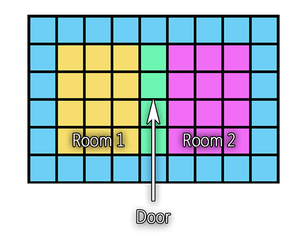 |
Collisional portal layout. Blue sectors are walls around each room. Green sector is Room 2’s collisional portal to Room 1, and dark blue sector is Room 1’s collisional portal to Room 2 |
4.4.2. Function 0x02 — Floor Slant
SubFunction is not used
The next FloorData entry contains two uint8_t slant values for the floor of this sector. Slant values are specified in increments of 256 units
(so-called clicks in TRLE terms). The high byte is the Z slope, while the low byte is the X slope. If the X slope is greater than zero, then its value is
added to the floor heights of corners 00 and 01. If it is less than zero, then its value is subtracted from the floor heights of corners 10 and 11. If
the Z slope is greater than zero, then its value is added to the floor heights of corners 00 and 10. If it is less than zero, then its value is subtracted
from the floor heights of corners 01 and 11.
|
|
This function is never combined with triangulation functions present in TR3 onwards (see further). |
4.4.3. Function 0x03 — Ceiling Slant
SubFunction is not used
The next FloorData entry contains two uint8_t slant values for the ceiling of this sector. Slant values are specified in increments of 256 units. The
high byte is the Z slope, while the low byte is the X slope. If the X slope is greater than zero, then its value is subtracted from the ceiling heights of
corners 10 and 11. If it is less than zero, then its value is added to the ceiling heights of corners 00 and 01. If the Z slope is greater than zero,
then its value is subtracted from the ceiling heights of corners 00 and 10. If it is less than zero, then its value is added to the ceiling heights of
corners 01 and 11.
|
|
This function is never combined with triangulation functions present in TR3 onwards (see further). |
4.4.4. Function 0x04 — Trigger
The uint16_t immediately following current entry is called TriggerSetup, and contains general trigger properties stored in a “bitwise” manner:
|
bits 0..7 ( |
|
bit 8 ( |
|
bits 9..13 ( |
Timer is a value generally used for making timed triggers of certain entities — for example, the door which opens only for a few seconds and then closes,
or a fire which extinguishes and then burns again. In such case, engine copies timer value in corresponding field of each triggered entity. Then each entity’s
timer begins to count time back, and when it reaches zero, entity deactivates.
However, it’s not the only purpose of Timer field. As trigger may not specifically activate entities but do some other actions, Timer field may be re-used
as a general-purpose numerical field to specify particular trigger behaviour. We will mention it separately for such trigger actions.
|
|
Since TR4, Timer field became signed, i.e. it may contain negative values. Effectively, it means that entities activated with such trigger won’t be
immediately activated and then deactivated after given amount of time, but wait for a given time before being activated. Most prominent example is timed spike
pit in the beginning of “Burial Chambers”. |
Mask: The five bits at 0x3E00 are the so-called Trigger Mask. The purpose of trigger mask is to create puzzle set-ups which require a combination of
activated triggers to achieve certain result. A good example of trigger mask use is the multiple-switch room of “Palace Midas” in TR1.
|
|
Each entity in Tomb Raider has a similar field in its structure called activation mask. Activation of entity happens only when all bits of activation mask
are set. Trigger action which activates an entity makes either bitwise Whenever entity’s activation mask is changed to anything but 0x1F (all bits set), entity is automatically deactivated, excluding the cases when |
OneShot flag is used only for activation of entities (it is also copied to entity’s own flag field with same name), and indicates that after activation,
entity state is locked. It means that even if entity’s own activation mask is unset (as with switch trigger type — see further), entity will remain
activated. However, it doesn’t mean that entity couldn’t be deactivated at all — because antitrigger trigger type ignores and resets this flag.
|
|
All other trigger actions, except activation of entities, are performed continuously. It’s not obvious, because engine uses various workarounds for specific trigger actions to prevent “repeated” execution, like playing same soundtracks over and over again. Such workarounds will be specifically mentioned. |
Trigger types and trigger actions will be described separately right after listing all FloorData functions.
4.4.5. Function 0x05 — Kill Lara
SubFunction not used
Instantly kills Lara. Usually she is simply set on fire, however, there is one special case in TR3. If current level index is 7 (“Madubu Gorge”), then instead of catching fire, Lara will play drowning animation.
4.4.6. Function 0x06 — Climbable Walls
The SubFunction indicates climbability of walls; its value is the bitwise OR of the values associated with all the climbable-wall
directions (0x01 = +Z, 0x02 = +X, 0x04 = -Z, 0x08 = -X), e.g. SubFunction 0x09 indicates that the walls on both the +Z and -X sides of this sector are
climbable.
4.4.7. Functions 0x07 to 0x12 — Triangulation
Beginning with TR3, geometry layout of each sector was significantly changed. Engine introduced triangles as a minimal collisional unit, compared with rectangles only in TR1 and TR2. This advantage allowed to create much more organic and natural terrain (albeit still limited by minimal sector width and depth of 1024 units), but also complicated things a lot, introducing the whole new set of different FloorData collisional functions.
|
|
Triangulation functions are never combined with slant functions present in TR1 and TR2. Each sector has either slant or triangulation function assigned to it, and never both of them. If there ever will be a paradoxical case of combination, most likely, only older function (i.e. slant) will be considered for collision calculation. |
Similarly to slant functions, triangulation functions define the floor and ceiling corner heights, but besides, they also specify dividing up the floors and ceilings into triangles along either of the two diagonals. Also, one of the triangles may be a collisional portal to the room above (if in the ceiling) or to the room below (if in the floor).
Each triangulation function uint16_t must be parsed differently, not like ordinary FDSetup entry:
Function |
Bits 0..4 ( |
$H_{\triangle1}$ |
Bits 5..9 ( |
$H_{\triangle2}$ |
Bits 10..14 ( |
EndData |
Bit 15 ( |
$H_{\triangle1}$ and $H_{\triangle2}$ are signed values, and replace FDSetup's SubFunction field.
Own triangulation function’s uint16_t is followed by one extra uint16_t to be parsed as follows:
$\DeltaC_{10}$ |
Bits 0..3 ( |
$\DeltaC_{00}$ |
Bits 4..7 ( |
$\DeltaC_{01}$ |
Bits 8..11 ( |
$\DeltaC_{11}$ |
Bits 12..15 ( |
All four values here are unsigned.
The Triangulation Formula
The idea behind this set up is dividing each sector rectangle into two independent triangles, and adjust each triangle height by combination of corner and triangle heights. To get each triangle’s individual corner height, you should use this formula:
$H_{\angle} = H_{floor} + (\max(\DeltaC_{10}, \DeltaC_{00}, \DeltaC_{01}, \DeltaC_{11}) - \DeltaC_{n} \times 1024 )$ |
…where $H_{\angle}$ is absolute floor height specified in tr_room_sector's Floor field, and $\DeltaC_{n}$ is triangle’s
individual corner height.
While four corner height values are shared by both triangles, triangle height values specify additional overall height of individual triangle. Therefore, sector corner heights may or may not be shared between two triangles:
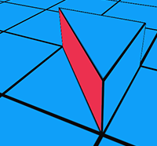 |
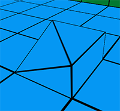 |
Corner heights are not shared |
Corner heights are shared |
The way engine interprets triangle height values $H_{\triangle1}$ and $H_{\triangle2}$ is not exactly known — however, meta2tr understands them and uses them to create so-called diagonal steps, example of which is pictured on the left side. There is no case of diagonal steps in original games, but they may exist in levels edited with meta2tr.
Overall, there are 12 different triangulation functions, which can be divided into two pairs of groups — one pair of groups is for floor, and another pair is
for ceiling. Each pair is categorized by split direction, and each group is categorized if it’s floor or ceiling. In each group, there are three functions — first function denotes that both triangles in sector are solid, second and third functions denote that one of triangles is a collisional vertical portal.
When function denotes a vertical portal, target room of a portal is taken from tr_room_sector structure — RoomBelow for floor functions, and RoomAbove
for ceiling functions.
Here is an example illustration depicting sectors with all possible floor triangulation functions. Ceiling triangulation happens in similar manner.
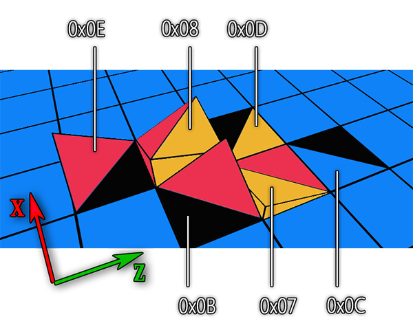 |
Floor sector triangulation types. Black triangles depict vertical collisional portal to different room. |
X axis in world coordinates also may be considered north for more simple reference (because you can always check compass direction in actual game engines,
at least in TR1 and TR4).
Functions 0x07, 0x0B, 0x0C
These functions define floor triangles split in the northwest-southeast direction.
-
0x07— Both triangles are solid. -
0x0B— Triangle pointing its right angle to the southwest is a collisional portal. -
0x0C— Triangle pointing its right angle to the northeast is a collisional portal.
Functions 0x08, 0x0D, 0x0E
These functions define floor triangles split in the northeast-southwest direction.
-
0x08— Both triangles are solid. -
0x0D— Triangle pointing its right angle to the southwest is a collisional portal. -
0x0E— Triangle pointing its right angle to the northwest is a collisional portal.
Functions 0x09, 0x0F, 0x10
These functions define ceiling triangles split in the northwest direction.
-
0x09— Both triangles are solid. -
0x0F— Triangle pointing its right angle to the southwest is a collisional portal. -
0x10— Triangle pointing its right angle to the northeast is a collisional portal.
Functions 0x0A, 0x11, 0x12
These functions define ceiling triangles split in the northeast direction.
-
0x0A— Both triangles are solid. -
0x11— Triangle pointing its right angle to the northwest is a collisional portal. -
0x12— Triangle pointing its right angle to the southeast is a collisional portal.
4.4.8. Function 0x13 — Monkeyswing (only in TR3-5)
SubFunction is not used
Sets monkey-swingability of the ceiling in specified sector.
4.4.9. Function 0x14
This function has a different meaning in TR3 and TR4/5.
-
In TR3, if Lara approaches sector with this FloorData function inside minecart vehicle, it will turn left 90 degrees, with a circle radius around 4 sectors (4096 units in world coordinates).
-
In TR4 and TR5, this function is used together with special entity called Trigger Triggerer. The purpose of this entity is to perform deferred triggering. That is, if trigger FloorData function is placed in the same sector with function
0x14, trigger won’t be activated until there’s an activated Trigger Triggerer object in the same sector. This allows to create setups where player can cross trigger sector without activating it, until some other event occurs later in level.
4.4.10. Function 0x15
This function has a different meaning in TR3 and TR4.
-
In TR3, if Lara approaches sector with this FloorData function inside minecart vehicle, it will turn right 90 degrees, with a circle radius around 4 sectors (4096 units in world coordinates).
-
In TR4, this function is used together with special entity called Mapper. If Mechanical Beetle is placed in sector with function
0x15and inactive Mapper entity, it rotates in the same direction Mapper is pointing to, activates it, and then rolls forward, until next sector with function 0x14 is reached. Then it waits until Lara picks it up.
|
|
If Lara places beetle at the very same sector where beetle was already used, it will shake and explode. It happens because beetle checks if Mapper entity is active or not, and if it was already activated, it explodes instead of rolling. |
4.5. Trigger types
A trigger type specifies the condition of a given trigger function to be activated. Condition may be a type of activator (Lara or some other entity), a specific state of activator, specific trigger action (activate or deactivate), and so on.
Trigger type is placed in SubFunction field of FDSetup structure, so we will refer to trigger types as SubFunctions.
|
|
Trigger type names are directly borrowed from TRLE. |
4.5.1. SubFunction 0x00 — Trigger
Activated by Lara whenever she enters a given sector — either steps, climbs, jumps over it, and so on.
4.5.2. SubFunction 0x01 — Pad
Activated by Lara only if she steps or lands on a given sector.
4.5.3. SubFunction 0x02 — Switch
This particular type of trigger takes first ActionList entry’s Parameter field as a reference to specific switch entity in level. It activates every time
the switch state is changed. For Object trigger actions, activation means performing XOR operation on these object’s (entities) activation masks. (See
next section for description of Object trigger action and Parameter field.)
Please note that this trigger type (as well as any other trigger types) always perform all trigger actions except Object in the same manner! Meaning, if there is a Camera or Effect trigger action, it will be performed every time the switch is flipped on or off.
4.5.4. SubFunction 0x03 — Key
Similar to previous trigger type, it works only if there is a keyhole entity listed in the first ActionList entry’s Parameter field. It activates only if
a key was inserted into that particular keyhole.
4.5.5. SubFunction 0x04 — Pickup
As above, this type of trigger works only if there is a pick-up entity listed in the first ActionList entry’s Parameter field. It activates only if this
item was picked up by Lara.
4.5.6. SubFunction 0x05 — Heavytrigger
Activated by specific entity type (activator) wherever it enters a specified sector. Entity types which are able to activate heavytriggers are hardcoded, and usually include NPCs (enemies), rolling balls and pushable objects. Since TR4, heavytriggers may also be activated by destroying shatter static mesh which is placed in a given sector.
Note that heavytrigger does not perform deactivation action, if activator leaves trigger sector.
4.5.7. SubFunction 0x06 — Antipad
Same as Pad — activates only if Lara has landed or stepped onto a given sector. The difference is, Antipad performs deactivation for each case of Object trigger action. What deactivation specifically means is it resets entity activation mask to zero (trigger mask is ignored), thus flipping entity activation procedure.
As it was mentioned for Switch trigger type, any other trigger actions beside Object will perform exactly in the same manner as with normal trigger types. So you shouldn’t expect soundtrack to stop, if you have placed PlayTrack trigger action for antipad.
4.5.8. SubFunction 0x07 — Combat
Activated by Lara whenever she enters a given sector with her weapons drawn. This trigger type was (presumably) never used in original games.
4.5.9. SubFunction 0x08 — Dummy
This type doesn’t perform any trigger action listed for it except Object type — for these trigger actions, it applies standable collision for Lara on a given entities, if such entities are in this trigger sector. For particular entity types, it works even if entity is deactivated (e.g. collapsing floor), but for other types it works only if entity was activated (e.g. trapdoors). Selected behaviour is most likely hardcoded.
It’s worth noting that any trigger type will apply standable collision on such entity types, if they are in the same sector. It’s not a bug, rather a way TR engines process FloorData.
4.5.10. SubFunction 0x09 — Antitrigger
Same as Trigger, but performs deactivation for each case of Object trigger action.
4.5.11. SubFunction 0x0A — Heavy switch
Don’t be fooled by the name of this trigger type. It is not literally a switch, as only similarity between it switch type is XOR operation with activation mask. In fact, this trigger performs action when specific entity type (activator) enters a given trigger sector, but only if trigger mask is equal to activator’s activation mask.
The best example of heavy switch setup is Planetarium in “The Lost Library”. Trigger mask is only applied to raising block if pushable in trigger sector has a similar activation mask.
4.5.12. SubFunction 0x0B — Heavy antitrigger
Same as Antitrigger, but performs deactivation for each case of Object trigger action.
4.5.13. SubFunction 0x0C — Monkey
Activated by Lara whenever she enters a given sector in monkeyswing state. Best example is locust swarm attacking Lara when she monkeyswings across the street in “Trenches”.
4.5.14. SubFunction 0x0D — Skeleton
This trigger type temporarily replaces Lara model with a combination of models #25 (Lara skeleton), #26 (see-through body) and #27 (see-through joints). See-through body and joints are applied on top of the skeleton model with additive blending.
4.5.15. SubFunction 0x0E — Tightrope
Activated by Lara whenever she enters a given sector walking on a tightrope.
4.5.16. SubFunction 0x0F — Crawl
Activated by Lara whenever she enters a given sector crawling or crouching.
4.5.17. SubFunction 0x10 — Climb
Activated by Lara whenever she enters a given sector climbing on a wall.
This concludes the description of Trigger FloorData function trigger types.
4.6. Trigger actions
Trigger function references an additional list of FloorData entries called ActionList, which is a “chain” of entries that immediately follows TriggerSetup
entry. As you maybe already guessed, the ActionList contains the list of actions to be performed for a specified trigger.
ActionList entry format is:
|
bits 0..9 ( |
|
bits 10..14 ( |
|
bit 15 ( |
TrigAction is a type of action to be performed. These will be listed seperately.
Parameter is used with certain trigger actions which need a certain numerical argument provided to them.
ContBit flag meaning is similar to EndData flag described for FDSetup structure. It indicates if there is another ActionList entry after current one. If
ContBit is not set, it means we have reached the end of ActionList, and there’s nothing more to do for a given trigger.
|
|
If ActionList's parent trigger type is either Switch or Key, first entry of ActionList is used to get reference entity (switch or keyhole) index.
Hence, it is ignored here, as by the time engine reaches ActionList offset, its first entry is already parsed by preceding code. |
|
|
ContBit flag is not the same as EndData flag! When writing a parser, do not overwrite one with another. |
4.6.1. TrigAction 0x00 — Object
Activate or deactivate entity (object) with index specified in Parameter.
4.6.2. TrigAction 0x01 — Camera
Switches to camera. Parameter (bits 0..6 used) serves as index into Cameras[] array.
|
|
Camera trigger action uses one extra uint16_t entry after its own entry! Its format is: |
|
bits 0..7 ( |
|
bit 8 ( |
|
bit 12 ( |
|
bit 15 ( |
Timer is a number of seconds to wait before automatically switching back to the normal camera. If 0, it never switches back to normal camera, as long as
trigger is active.
Once: If set, only switch to camera once; otherwise, switch to camera every time trigger is active.
Zoom: Camera smoothly zooms in when activated. Zoom amount is hardcoded.
|
|
ContBit flag overwrites the same flag from the preceding ActionList entry. |
4.6.3. TrigAction 0x02 — Underwater Current
Continuously moves Lara to specifed sink. Parameter serves as index into Cameras[] array. If sink is placed lower than current sector absolute floor
height or upper than current sector absolute ceiling height, $Y$ coordinate will be ignored when dragging Lara to sink. Since TR3, sink also
prevents Lara from surfacing the water.
|
|
While it may look like Cameras[] array was mentioned here by mistake, it is not. TR engines share the same structure for both cameras and sinks. The
way engine treats it in either case will be discussed in corresponding section. |
4.6.4. TrigAction 0x03: Flip Map
FlipMap is an internal engine array of uint8_ts which is used to determine if alternate rooms should be turned on or off (in TRLE terms, flipped). It uses
trigger mask in the same manner as for Object activation and deactivation, but in this case, alternate rooms are activated if given FlipMap entry mask is
set (0x1F), and deactivated, if FlipMap entry is not set (not 0x1F).
This trigger action at first applies trigger mask to a given FlipMap entry using OR bitwise operation and then immediately checks if it’s already set or
not. If FlipMap entry is set, then it immediately switches rooms to alternate mode.
Parameter defines which FlipMap entry engine should refer to decide should it switch alternate rooms on or off. The size of FlipMap array is around 10
(judging by the number of unused FLIP_MAPn effect entries), but in original levels, number usually never tops 2 or 3.
|
|
From TR1 to TR3, FlipMap array was merely used as a “hint table” to tell the engine if it should flip all rooms at once. That is, to check and apply
another FlipMap entry, alternate rooms should have been reverted to previous state before — that’s the purpose of next two listed trigger actions. However, in
TR4 algorithm was changed — each “flippable” room now bears additional parameter called “alternate group”, which strictly tells an engine to flip it only
when room alternate group is equal to FlipMap Parameter value. This change in algorithm made next two trigger actions unnecessary in TR4-5 (however, they are
still available). |
4.6.5. TrigAction 0x04 — Flip On
Tries to turn alternate rooms on, judging on current value of a given FlipMap entry (entry index is specified by Parameter). If corresponding FlipMap is
not set (i.e. the value is not 0x1F), rooms won’t be flipped. Parameter defines a FlipMap entry to work with.
4.6.6. TrigAction 0x05: — Flip Off
Tries to turn alternate rooms off, judging on current value of a given FlipMap entry (entry index is specified by Parameter). If corresponding FlipMap is
not set (i.e. the value is not 0x1F), rooms won’t be flipped. Parameter defines a FlipMap entry to work with.
4.6.7. TrigAction 0x06 — Look at Item
Specifies an entity which current camera should look at. If current camera is “ordinary” one following Lara, then it will also rotate Lara model in a target
direction, creating an illusion of Lara looking at it. If current camera is changed to “triggered” one (by trigger action 0x01 — see above), then this
camera’s orientation will be changed to a given entity. Note that if such camera change is desired, this action should come first, not the Camera one.
Parameter specifies an entity index to look at.
4.6.8. TrigAction 0x07 — End Level
Immediately loads next level. In TR1-3 and TR5, Parameter field is not used, i.e. engine just loads next level specified in script. In TR4, so called “hub
system” was implemented, which allows Lara to jump between levels back and forth. For this reason, End Level trigger action must also explicitly specify
level index to jump.
4.6.9. TrigAction 0x08 — Play Soundtrack
Triggers a playback of a soundtrack specified in Parameter field. Type of soundtrack (looped or one-shot) is hardcoded and assigned automatically.
This trigger action makes use of trigger mask and one-shot trigger flag to mark if this track was already played with a given trigger mask or not in a
special internal soundtrack map. That is, if it is called with trigger mask set to, say, 0x01, then all further calls from triggers with same trigger
mask will be ignored. However, if same track playback is called with trigger mask value of 0x02, it will play again, as it’s another byte in trigger
mask. Effectively, it allows to play specified track six times (five bits of activation mask plus one bit of one-shot flag). Comparison is done via
bitwise AND operation, so if playback is called with trigger mask + one-shot value of (0x1F + 0x20 = 0x3F), then any other playback call to that track
will be blocked.
|
|
In TR1, soundtrack playback is more complicated. For some reason, in PC version programmers completely disabled playback for majority of soundtracks, leaving only five or six most significant ones to play (like title theme or cutscene audio). Looped soundtracks were also completely ignored — instead, background ambience is explicitly specified by script entry, rather than trigger action (that’s the reason why PC version has four different ambience types when compared to PSX version). To overcome this issue and enable complete soundtrack functionality, several patches were created by the community. However, PC version is missing soundtrack map structure, which potentially produces bugs when single track could be played independently by both triggers in the same level, although mostly this bug comes unnoticed, as majority of TR1 soundtracks are engaged only once in a level. |
4.6.10. TrigAction 0x09 — Effect
Effect (or flipeffect in TRLE terms) does not necessarily mean “special effect” or so. By the name of “effect” comes any non-trivial or special trigger action which should be seperately defined. This workaround was implemented because TR engines lack any scripting language to program arbitrary trigger, so you can consider an effect as a call to some “pre-compiled” scripted function.
For example, in TR2 “Lara’s Home”, there is a need to control assault course timer, like restarting it while reaching start point or stopping it when Lara is off the course. This task is accomplished via several different effects.
|
|
The list of effects differs across game versions. These will be listed in a separate section noting changes from version to version. |
4.6.11. TrigAction 0x0A — Secret Found
Plays “secret” soundtrack theme and marks a secret number specified in Parameter field as found. For finding each secret, another Parameter value must be
specified, or else secret won’t be counted as found.
4.6.12. TrigAction 0x0B — Clear bodies
Removes dead bodies of enemies from a level to conserve memory usage. This action has effect only on entities which had clear body flag
specified in their parameters (see further). Parameter field is unused.
|
|
This trigger action caused significant confusion in TRLE community. In level editor, action is called BODYBAG, and makes no visible effect in game, so various speculations were made regarding action’s true purpose. Some people thought it is used to attach a backpack to Lara in “Angkor Wat” cutscene, another people thought it is used for lipsync or dragging SAS troop body in “City of the Dead”. All this speculation was proven wrong. |
4.6.13. TrigAction 0x0C — Flyby
Engages a flyby camera sequence specified in Parameter field. The feature was added in TR4 and enables to play cinematographic interludes with
camera continuously “flying” from one point to another. Such sequences, their points, properties and order are defined in a level editor, and engine moves
camera across them using spline function.
uint16_t immediately following flyby’s own entry contains one-shot flag at 0x0100. If this flag is not set, flyby will infinitely loop. As with Camera TrigAction, flag at 0x8000 is a continuation bit, which overrides previous entry’s continuation bit.
4.6.14. TrigAction 0x0D — Cutscene
Engages a cutscene pre-defined in script file. Parameter is taken as cutscene ID. In turn, script file refers to CUTSEQ.PAK (TR4) or CUTSEQ.BIN
(TR5) file to get all the data for a cutscene, such as actor positions and animations, camera movement, soundtrack and many more. There will be a special
section describing particular CUTSEQ.PAK file format.
This concludes the description of Trigger FloorData function action types.
5. Meshes and Models
5.1. Overview
Nearly all of the non-geographic visual elements in TR (as well as a few parts of the landscape) consist of as meshes. A mesh is simply a list of vertices
and how they’re arranged. The mesh structure includes a list of vertices as relative coordinates (which allows meshes to easily be placed anywhere in the world
geometry), a list of normals (to indicate which side of each face is visible), and lists of Rectangles and Triangles, both textured and coloured. The elements
of each [tr_face4] or [tr_face3] (or same version-specific) structure (Rectangles and Triangles) contain an offset into the Vertices[] array for the mesh.
Other arrays (Entities[], StaticMeshes[]) do not reference the array Meshes[] directly, but instead reference the array MeshPointers[], which points to
locations inside of Meshes[], inside of which the meshes are stored in packed fashion.
|
|
Pointer indexing system allows engine to share same mesh for numerous different models, and also easily implement a feature called meshswap — used when a puzzle is inserted into a hole, when Lara draws pistols, and so on. While it may be not obvious, but every time you see mesh look is changed, it means that meshswap happened. There was never any other way to modify mesh looks in classic TRs. |
5.2. Meshes
The sign of the number of normals specifies which sort of lighting to use. If the sign is positive, then external vertex lighting is used, with the lighting calculated from the room’s ambient and point-source lighting values. The latter appears to use a simple Lambert law for directionality: intensity is proportional to $\max(\langle (\mathrm{normal direction}), (\mathrm{direction to source}) \rangle, 0)$. If the sign is negative, then internal vertex lighting is used, using the data included with the mesh.
|
|
This is not a “real” C/C++ structure, in that the arrays are sized by the NumXXX elements that precede them. |
virtual struct tr_mesh
{
tr_vertex Centre;
int32_t CollRadius;
int16_t NumVertices; // Number of vertices in this mesh
tr_vertex Vertices[NumVertices]; // List of vertices (relative coordinates)
int16_t NumNormals;
if(NumNormals > 0)
tr_vertex Normals[NumNormals];
else
int16_t Lights[abs(NumNormals)];
int16_t NumTexturedRectangles; // number of textured rectangles in this mesh
tr_face4 TexturedRectangles[NumTexturedRectangles]; // list of textured rectangles
int16_t NumTexturedTriangles; // number of textured triangles in this mesh
tr_face3 TexturedTriangles[NumTexturedTriangles]; // list of textured triangles
int16_t NumColouredRectangles; // number of coloured rectangles in this mesh
tr_face4 ColouredRectangles[NumColouredRectangles]; // list of coloured rectangles
int16_t NumColouredTriangles; // number of coloured triangles in this mesh
tr_face3 ColouredTriangles[NumColouredTriangles]; // list of coloured triangles
};
Centre is usually close to the mesh’s centroid, and appears to be the center of a sphere used for certain kinds of collision testing.
CollRadius appears to be the radius of that aforementioned collisional sphere.
NumNormals: If positive, it is a number of normals in this mesh. If negative, it is a number of vertex lighting elements (abs value).
Depending on a value of NumNormals, next data block is interpreted either as Normals[] array (in tr_vertex format) or Lights array (just standard
int16_t values).
NumTexturedTriangles and NumTexturedRectangles are respectively the number of triangular and rectangular faces in this mesh. Corresponding
TexturedTriangles and TexturedRectangles array contain textured triangles and rectangles themselves.
NumColoredTriangles and NumColoredRectangles are respectively the number of triangular and rectangular faces in this mesh. Corresponding ColoredTriangles
and ColoredRectangles array contain colored triangles and rectangles themselves.
As coloured faces feature was removed since TR4, tr_mesh structure was changed, and contain no data for coloured faces anymore:
virtual struct tr4_mesh
{
tr_vertex Centre;
int32_t CollRadius;
int16_t NumVertices; // Number of vertices in this mesh
tr_vertex Vertices[NumVertices]; // List of vertices (relative coordinates)
int16_t NumNormals;
if(NumNormals > 0)
tr_vertex Normals[NumNormals];
else
int16_t Lights[abs(NumNormals)];
int16_t NumTexturedRectangles; // number of textured rectangles in this mesh
tr_face4 TexturedRectangles[NumTexturedRectangles]; // list of textured rectangles
int16_t NumTexturedTriangles; // number of textured triangles in this mesh
tr_face3 TexturedTriangles[NumTexturedTriangles]; // list of textured triangles
};
5.3. Static Meshes
As the name tells, static meshes are meshes that don’t move (e.g. skeletons lying on the floor, spiderwebs, trees, statues, etc.) Usually it implies that static mesh is completely non-interactive, i.e. all it does is sitting there in place serving as an ornament.
|
|
Since TR4, certain static meshes became destroyable (either by shooting or exploding them), and even gained ability to activate heavy triggers. Such static meshes are called shatters. Engine tells shatter statics from ordinary ones judging by their IDs, i.e. shatter static mesh must be in a specific slot. This behaviour is hardcoded. |
StaticMeshes have two bounding boxes. First one serves as visibililty box, and other is the collisional box. The former is being used for visibility testing, and the latter is used for collision testing.
struct tr_staticmesh // 32 bytes
{
uint32_t ID; // Static Mesh Identifier
uint16_t Mesh; // Mesh (offset into MeshPointers[])
tr2_vertex VisibilityBox[2];
tr2_vertex CollisionBox[2];
uint16_t Flags;
};
For VisibilityBox and CollisionBox, dimensions are specified using two vectors, first being the bounding box minimum, and second being the bounding box
maximum.
Flags value is usually 2, and is 3 for static meshes without collision, like plants and lying skeletons. Since TR3, value is ignored, and
no-collision mode is obtained using degenerate collision box (with all-zero or all-one coordinates).
5.4. Models
This defines a list of contiguous meshes that comprise one object, which is called a model. This structure also points to the hierarchy and offsets of the
meshes (MeshTree), and also to the animations used (Animation); these will be described in detail below. If the Animation index is -1, that means that there
are no predefined animations, and entity’s movement is all generated by the engine; an example is Lara’s ponytail or rolling balls from TR4 and TR5.
Some entities are really stationary, such as locks and the skybox, and some are not rendered at all, such as “camera target” points to aim the camera at, flame emitters, AI objects and other service entities. Such invisible models are frequently called nullmeshes, because usually they have no valid mesh index specified for them.
Sometimes, model may refer to sprite or sprite sequence to draw itself (for example, pick-up items and flame emitters). In this case, model is replaced with sprite in run-time. This behaviour is hardcoded for specific model IDs.
Sometimes, model may have two different versions defined in level files — one is normal, and another is low-detailed one, with the latter used when camera position gets too far from them. These are called MIP models, and mostly exist for NPCs (enemies). Usually, their type IDs are one off their normal counterparts (for example, skeleton type ID in TR4 is 35, and its MIP variation is 36).
struct tr_model // 18 bytes
{
uint32_t ID; // Type Identifier (matched in Entities[])
uint16_t NumMeshes; // Number of meshes in this object
uint16_t StartingMesh; // Stating mesh (offset into MeshPointers[])
uint32_t MeshTree; // Offset into MeshTree[]
uint32_t FrameOffset; // Byte offset into Frames[] (divide by 2 for Frames[i])
uint16_t Animation; // Offset into Animations[]
};
There is an extra uint16_t at the end of tr_model structure, which is always 0xFFEF and used for alignment. Consider it while parsing.
5.5. Entities
Entities are the actual instances of entity types, consisting either of models or sprites (with the latter existing in TR1-2 only). For an entity to appear in a level, it must be
referenced in the Models[] array. Multiple instances of the same model are possible (e.g. two identical tigers in different rooms are represented using two
entries in Entities[], one for each).
Entity structure has gone through different variations across game versions, so we’ll list them all.
5.5.1. TR1 Entity Structure
5.5.2. TR2-3 Entity Structure
5.5.3. TR4-5 Entity Structure
struct tr4_entity
{
int16_t TypeID;
int16_t Room;
int32_t x;
int32_t y;
int32_t z;
int16_t Angle;
int16_t Intensity1;
int16_t OCB; // Replaces Intensity2, see further for explanations.
uint16_t Flags;
};
TypeID is used to assign appropriate action for this entity and/or locate the appropriate sprite sequence or model to draw. If TypeID is zero, it means it’s playable character (i.e. Lara).
Room is a room ID to which this particular entity belongs to. If room value was modified incorrectly, entity will glitch and, most likely, won’t appear in
engine. That is, you can’t change entity position without complementary edit or Room field.
Angle is an Euler Yaw angle (i.e. “horizontal” rotation) stored in a special manner. To convert it to ordinary degrees, use this formula:
$\angle^\circ = (Angle \div 16384) \times -90$ |
Intensity2 field is missing in this game version, so the structure size is 2 bytes less.
Intensity1: If not -1, it is a value of constant lighting. -1 means “use mesh lighting”.
Flags value contain packed list of several parameters:
-
Bit 7 (
0x0080) — Clear Body flag. It is used together with Clear Bodies trigger action to remove the body of dead enemy from the level to conserve resources. -
Bit 8 (
0x0100) — Invisible flag. If entity has this flag set, it will be invisible on start-up. However, it only works for specific types of entities. It is primarily used with pick-ups or other entities which should appear at certain point only after activation, but are visible by default. -
Bits 9..13 (
0x3E00) — Activation Mask for this entity. As you already learned in Trigger Actions chapter, entity is only activated when activation mask is all set (i.e. all 5 bits are set, and value is0x1F). However, activation mask doesn’t strictly required to be set by trigger — level editor allows to pre-define activation mask, so entity will bear specific activation mask layout on level start-up.
If activation mask was pre-set to 0x1F (all set), entity will activate immediately after level loading, and engine will also reset activation mask to zero
and mark entity as inactive, effectively swapping “inactive” state with “active”. That is, when player will activate such pre-activated entity with a
trigger, it will actually “deactivate”, et cetera. Most prominent example of this behaviour is pre-opened grated door in Tomb of Qualopec.
5.5.4. Object Code Bit
In TR4 and TR5, Intensity2 field was replaced with completely new one, called Object Code Bit (or OCB). OCB allows to alter entity behaviour based on its value, thus providing very basic “script-like” functionality. For example, flame emitter entities have a case switch for OCB value, and each valid OCB value produces different result — flame emttier acts either as a static flame, as a directional flame, as a lightning, and so on.
More detailed description of OCB is provided in this section.
5.6. Sprites
These are “billboard” objects that are always rendered perpendicular to the view direction. These are used for text and explosion effects and similar things; they are also used for some scenery objects and pickup items, though this use gets less as one goes from TR1 to TR3. The various “Sides” below are the positions of the sprite sides relative to the sprite’s overall position, measured in TR’s world-coordinate units.
struct tr_sprite_texture // 16 bytes
{
uint16_t Tile;
uint8_t x;
uint8_t y;
uint16_t Width; // (ActualWidth * 256) + 255
uint16_t Height; // (ActualHeight * 256) + 255
int16_t LeftSide;
int16_t TopSide;
int16_t RightSide;
int16_t BottomSide;
};
x and y values are not used in this version. Additionally, formula for Width and Height is changed: now it’s (ActualWidth - 1) * 256 and (ActualHeight - 1) * 256 respectively.
5.7. Sprite Sequences
These are collections of sprites that are referred to as a group. The members of this group can be cycled through (animated sprites such as flames, blood splats or explosions) or selected in other ways (text). Some sequences have only one member; this is done so as to access all the sprites in the same way.
6. Mesh Construction and Animation
6.1. Overview
The animated mesh objects in the Tomb Raider series are sets of meshes that are moved relative to each other, as defined by Entities[] entries. Each entry
describes which meshes to be used (a contiguous set of them referred to in MeshPointers[]), what hierarchy and relative offsets they have (contents of
MeshTree[] pointed to), and what animations are to be used (contents of Animations[] pointed to).
The hierarchy used is a branching one, with the meshes being at the nodes, and with the first mesh being the root node. The MeshTree[] values are applied to each of the child meshes in sequence; they are sets of four int32_ts, the first being a hierarchy operator,
and the remaining three being the coordinates in the parent mesh’s system. A hierarchy example is that for the Lara meshes:
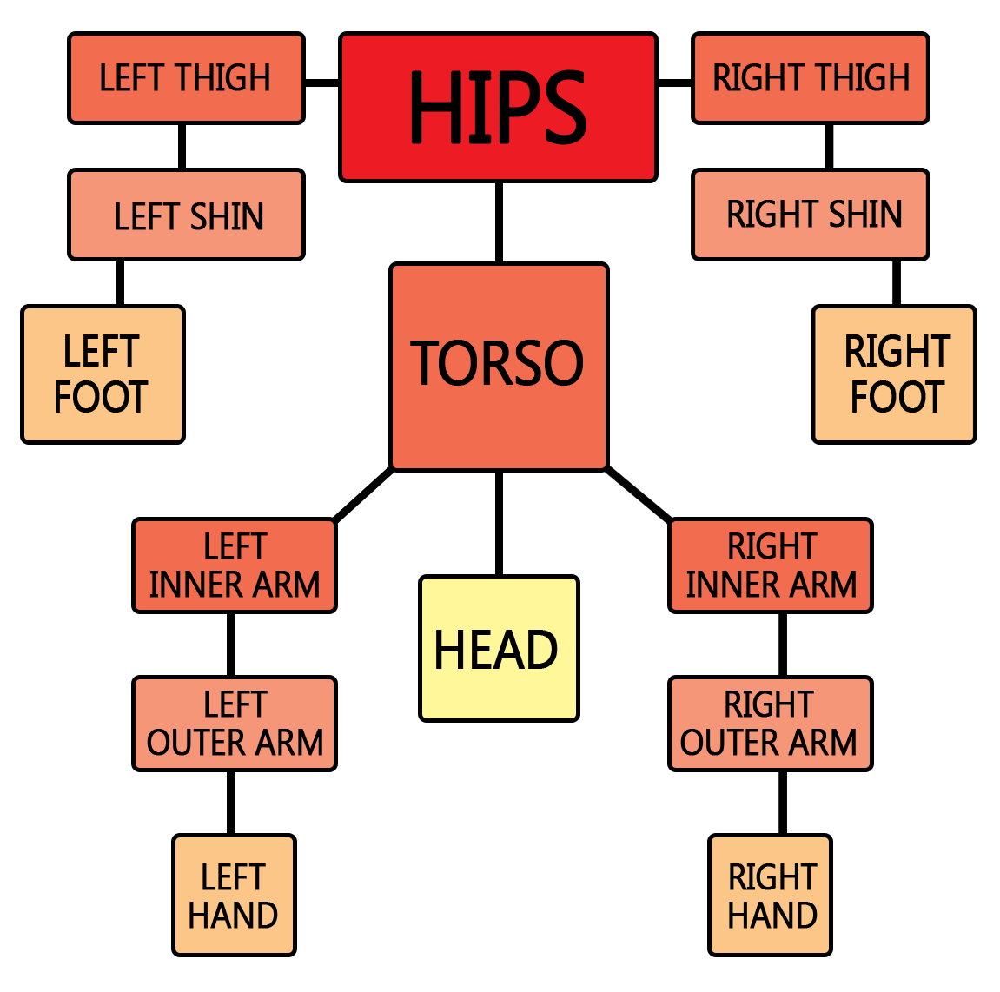 |
Top-down hierarchy of Lara’s MeshTree. Hips is a root mesh. Ponytail is not listed, as it is a separate object. |
This is implemented by using a stack of meshes and “push” and “pop” operations in MeshTree[]. Normally, each mesh’s parent is the previous mesh in series.
But such meshes can be “remembered” by adding them to a stack of meshes with a “push” operation. This remembered mesh can then be used as the parent mesh
with a “pop” operation. It is not clear what the maximum stack depth is; most TR mesh stacks do not extend beyond 2 or 3 meshes.
The animations for each mesh object are selected with some ingenious techniques. Which animations to use are not hardcoded; instead, each entity has some states it can be in, and these states are used to select which animation. For example, locks have only one state (they just sit there), doors have two states (open and closed), and Lara has numerous states, such as standing, walking, running, jumping, falling, being hurt, dying, etc. Each animation has a state ID, which can be used to select it; however, state transitions might seem to require a large number of intermediate states (opening, closing, starting to jump, landing, etc.). The alternative used in the Tomb Raider engine is for each animation to have bridge animations to other states' animations, which are selected using the ID of which state to change to. These bridge animations then lead to the animation with the appropriate state. Thus, a closed door will run a looped closed-door animation as long as its state stays “closed”, but when its state becomes “open”, it will change to an opening-door bridge animation, which will end in a looped open-door animation. Likewise, closing a door will make it use a closing-door bridge animation. Some bridge animations are chosen with a finer grain of selectivity, however, such as using one for left foot forward and one for right foot forward.
Thus, each animation references a set of StateChange structures, each one of which references an AnimDispatch structure (called a “range” in some
documentation). Each StateChange structure contains a new state and which AnimDispatch structures to use. When an entity goes into a new state, the
StateChange structures are scanned for that state’s ID, and if one matches, then that StateChange's AnimDispatch es are then scanned for a range of frames
that contains the ID of the current frame. If such an AnimDispatch is found, the animation and the frame are changed to those listed in it.
The ultimate unit of animation is, of course, the frame, and each frame consists of a bounding box, the offset of the root mesh, and rotation angles for all the meshes with respect to their parent meshes. The root mesh is also rotated, but relative to the object’s overall coordinates. All rotations are performed around the meshes' origins, and are in order Y, X, Z (yaw, pitch, roll). The reason for the root mesh’s displacement is because entities traveling on solid surfaces are likely tracked by having their locations be at ground level, and Lara’s hips, for example, are well above the ground. Finally, some of the angles are not specified explicitly, when they are not, they are zero.
Frames are referenced in two ways, either by an offset into the Frames[] array that contains them, or by frame index. The values of the latter appear to be
unique to each kind of entity, but not between entities; the first frame for each kind is numbered 0. This is likely a convenience when constructing the
animations, since the list of animation frames for each entity can be constructed separately. However, using these indices is fairly simple. Each Animation
structure has a first-frame index; this index is subtracted from the index of the desired frame in order to find out its index relative to the animation’s first
frame.
There are also some special AnimCommands for doing various additional things. Some of them are for moving entities in absolute coordinates, for example to position Lara at climb location, or specifying jump momentum. Some others define actions per frame, like playing sounds, emitting bubbles, and so forth.
Finally, some entities appear to have incomplete set of animations; their complete animations are “borrowed” from similar entities. Such setup is mostly used in TR2’s Venice levels — some of Venice goons them have a full set of animations, while some others have only the standing animation. The ones with only the standing animation borrow their other animations from the fully-animated ones.
6.2. Data Structures
6.2.1. Mesh Tree Structure
struct tr_meshtree_node // 4 bytes
{
uint32_t Flags;
int32_t Offset_X;
int32_t Offset_Y;
int32_t Offset_Z;
};
MeshTree[] array consists of meshtree nodes.
In ‘Flags` field, two bytes are used:
* Bit 0 (0x0001) indicates ``take the top mesh off of the mesh stack and use as the parent mesh’' when set, otherwise ‘use the previous mesh as the parent mesh’'.
* Bit 1 (0x0002`) indicates “put the parent mesh on the mesh stack”.
When both bits are set, the Bit 0 operation is always done before the Bit 1 operation. In effect, read the stack but do not change it.
Offset_X, Offset_Y and Offset_Z are offsets of the mesh’s origin from the parent mesh’s origin.
6.2.2. TR1-3 Animation Structure
This describes each individual animation. These may be looped by specifying the next animation to be itself. In TR2 and TR3, one must be careful when parsing frames using the FrameSize value as the size of each frame, since an animation’s frame range may extend into the next animation’s frame range, and that may have a different FrameSize value.
struct tr_animation // 32 bytes
{
uint32_t FrameOffset; // Byte offset into Frames[] (divide by 2 for Frames[i])
uint8_t FrameRate; // Engine ticks per frame
uint8_t FrameSize; // Number of int16_t's in Frames[] used by this animation
uint16_t State_ID;
fixed Speed;
fixed Accel;
uint16_t FrameStart; // First frame in this animation
uint16_t FrameEnd; // Last frame in this animation
uint16_t NextAnimation;
uint16_t NextFrame;
uint16_t NumStateChanges;
uint16_t StateChangeOffset; // Offset into StateChanges[]
uint16_t NumAnimCommands; // How many of them to use.
uint16_t AnimCommand; // Offset into AnimCommand[]
};
FrameOffset is a byte offset into Frames[] (divide by 2 for Frames[i]).
FrameRate is a multiplier value which defines how many game frames will be spent for each actual animation frame. For example, if value is 1, then each
animation frame belongs to single game frame. If value is 2, then each animation frame belongs to two game frames, and so on. In latter case, animation frames
will be interpolated between game frames using slerp function.
|
|
Actual game frame rate is always locked to 30 FPS. All engine internal counters, including animation frame counters, are also using 30 FPS timebase. |
State_ID identifies current state type to be used with this animation. Engine uses current State_ID not only to solve state changes, but also to define
current Lara behaviour — like collisional routines to be used, controls to be checked, health/air/sprint points to be drained, and so on.
Speed and Accel values are used to set a specific momentum to a given entity. That is, entity will be accelerated with Accel value, until Speed value is
reached. If Accel is negative, speed will be decreased to fit Speed value. The direction in which entity is moved using speed value is hardcoded, and mostly
is forward.
NextAnimation defines which animation should be played after current one is finished. When current animation ends, engine will switch it to NextAnimation,
not regarding current State_ID value. If NextAnimation value is the same as animation number itself, it means animation will be looped until loop is broken
by state change.
NextFrame specifies the frame number to be used when switching to next animation. That is, if NextFrame is 5 and NextAnimation is 20, it basically means
that at the end of current animation engine will switch right to frame 5 of animation 20. If animation is looped, NextFrame defines to which frame animation
should be rewound. It allows to “eat up” certain start-up frames of some animations and re-use them as looped.
|
|
To get number of frames for current animation, use this formula: NumFrames = (FrameEnd - FrameStart) + 1. |
6.2.3. TR4-5 Animation Structure
For TR4 and TR5, extended version of tr_animation is used:
struct tr4_animation // 40 bytes
{
uint32_t FrameOffset;
uint8_t FrameRate;
uint8_t FrameSize;
uint16_t State_ID;
fixed Speed;
fixed Accel;
fixed SpeedLateral; // New field
fixed AccelLateral; // New field
uint16_t FrameStart;
uint16_t FrameEnd;
uint16_t NextAnimation;
uint16_t NextFrame;
uint16_t NumStateChanges;
uint16_t StateChangeOffset;
uint16_t NumAnimCommands;
uint16_t AnimCommand;
};
In addition to Speed and Accel values, TR4 introduced LateralSpeed and LateralAccel values, which are used to move entity to the sides,
rather than forward or backward. However, these values are only used for any entity but Lara — engine ignores them in such case.
Lateral speed and acceleration primarily used for “start-up” animations of NPCs — for example, armed baddies in TR4 can roll or jump aside.
6.2.4. State Change Structure
Each state change entry contains the state to change to and which animation dispatches to use; there may be more than one, with each separate one covering a different range of frames.
6.2.5. Animation Dispatch Structure
This specifies the next animation and frame to use; these are associated with some range of frames. This makes possible such specificity as one animation for left foot forward and another animation for right foot forward.
6.2.6. AnimCommand Structure
These are various commands associated with each animation. They are varying numbers of int16_ts packed into an array. As the FloorData, AnimCommands must be
parsed sequentially, one by one.
The first AnimCommand entry is the type, which also determines how many int16_t arguments (operands) follow it (i.e. how many int16_t values must be
parsed after current one without switching to next AnimCommand). For a given animation, AnimCommands are parsed until NumAnimCommands value is reached.
Some of commands refer to the whole animation (jump speed, position change and empty hands commands), while others of them are associated with specific frames (sound, bubbles, etc.).
Here are all the AnimCommand types and their arguments.
-
Set Position (3 arguments). Sets relative entity position (x, y, z); found in grab and block-move animations.
-
Jump Distance (2 arguments). Vertical and horizontal speed for jumping.
-
Empty Hands (No arguments). This command is performed in the end of animation of Lara pulling a switch, inserting a key, grabbing a pushable block, and so on. It is needed because engine “locks” Lara’s ability to draw weapons or ignite a flare when such action is performed, and only way to unlock it is to call this command.
-
Kill (No arguments). Kill entity. This effectively disables entity and removes it from the world.
-
Play Sound (2 arguments). The first argument is a frame number, and the second one is the ID of the sound to play at that frame (internal sound index).
Besides Sound ID, second argument may contain two “packed” bit flags. Their meanings are:
-
0x4000— play this sound when on dry land (example: footsteps) -
0x8000— play this sound when in water (example: running through shallow water)
-
-
Effect (2 operands). The first one is a frame number, and the second one is effect number. Note that effect here is the very same kind of effect used in trigger action with the same name. Effect meaning will be listed separately.
6.2.7. Frame Structure
Frames indicate how composite meshes are positioned and rotated. They work in conjunction with Animations[] and MeshTree[]. A given frame has the following format:
struct tr_anim_frame // Variable size
{
int16_t BB1x, BB1y, BB1z; // Bounding box (low)
int16_t BB2x, BB2y, BB2z; // Bounding box (high)
int16_t OffsetX, OffsetY, OffsetZ; // Starting offset for this model
int16_t NumValues;
uint16_t AngleSets[]; // Variable size
}
NumValues:
Number of angle sets to follow; these start with the first mesh, and meshes without angles get zero angles.
NumValues is implicitly NumMeshes (from model).
AngleSets are sets of rotation angles for all the meshes with respect to their parent meshes. In TR2/3, an angle set can specify either one or three axes of
rotation.
If either of the high two bits (0xC000) of the first angle uint16_t are set, it’s one axis: only one uint16_t, low 10 bits (0x03FF), scale is 0x0100 — 90 degrees; the high two bits are interpreted as follows: 0x4000 — X only, 0x8000 — Y only, 0xC000 — Z only.
If neither of the high bits are set, it’s a three-axis rotation. The next 10 bits (0x3FF0) are the X rotation, the next 10 (including the following
uint16_t) (0x000F, 0xFC00) are the Y rotation, the next 10 (0x03FF) are the Z rotation, same scale as before (0x0100 — 90 degrees).
Rotations are performed in Y, X, Z order.
All angle sets are two words and interpreted like the two-word sets in TR2/3, except that the word order is reversed.
7. Non-Player Character Behaviour
7.1. Overview
All the Tomb Raider game physics and entity behaviour is hardcoded, with each type ID being associated with some specific sort of behaviour (as Lara, as a boat, as a tiger, as a door, as a boulder, as a lock, etc.). That is, each model refer two internal engine routines — collisional one and control one. For static entities (like flame emitters), collisional routine may contain no functional code, while control routine is present. On contrary, “decorative” entities (usually called animatings in TRLE) may lack control code, while retaining collisional code.
Several entity types may share the same collisional and/or control routines — for example, there is one generic collisional routine for almost all enemies, another generic routine for doors, and another one for standable entities, like bridge or platform objects.
Lara is unique player character, so she has a large set of both control and collisional routines, which are switched depending on her current state.
|
|
In original Tomb Raider source code, notation for collisional and state routines follows two different schemes. For Lara, collisional and control routines are called For other entity types, there is more generic scheme: collisional routines are called |
7.2. Entity Scripting
Despite the existence of script files, here is no any scripting for entity behaviour, like in most contemporary games. This hardcoding makes it difficult to port the earlier Tomb Raider scenarios to the engines of the later games, which could be desirable with their improved hardware support. While textures, models, and animations can be ported, behaviour cannot be.
However, there is a small change in TR4 and TR5 which indicates that specific entity behaviour can be altered — it’s called OCB. It was briefly described in this section. OCB is a special value defined for each entity instance, based on which entity can switch the way it acts (most prominent examples are flame emitters, which change their size and emit direction based on OCB, and teeth spikes, which change their orientation in space).
Sometimes OCB is interpreted as a “packed” field with several values incorporated — like teeth spike OCB contain information about their horizontal and vertical orientation, and also about their “physical” behaviour (stick out constantly, pop-retract in looped manner, or pop-retract just once).
|
|
For list of valid entity OCBs in TR4, you may refer to TRLE User’s Manual, although it was written in a big rush, and thus it lacks many existing OCBs for many entities. There are also fan-made OCB lists which are much more comprehensive. As for TR5, no proper OCB list exists for its entity types, so it may be considered a big unknown. |
However, OCB can’t be seriously called “scripting”, as it also operates with pre-defined hardcoded behaviour.
|
|
Recent patches for TR4 game engine (used to play custom levels), like TREP and TRNG, feature some kind of basic scripting functionality. However, there’s still no sign of real scripting language in them, and such scripting is basically specifying pre-defined variables to alter entity behaviour, just like OCB does. |
7.3. Pathfinding
Despite the lack of scripting, the Tomb Raider series does have navigation hints for the Non-Player Characters; those entities that move freely across the maps under the command of the game AI. NPCs find their way in a level by checking “FloorData” collisional functions in the same way Lara does, and also with the help of special data structures which are used for proper pathfinding.
7.3.1. Data Structures
TR engines use three different structures to assist pathfinding. These are boxes, overlaps, and zones. Most sectors point to some box, the main exceptions being horizontal-portal sectors. Several neighbour sectors may point to the same box. A box is a horizontal rectangle, with corners and height specified; each box also has a pointer into the list of overlaps. Each segment in that list is the list of accessible neighbouring boxes for some box; the NPCs apparently select from this list to decide where to go next.
This selection is done with the help of the zones. These structures of 6 (TR1) or 10 (TR2-TR5) int16_ts that act as zone IDs;
their overall indexing is the same as the boxes, meaning that each box will have an associated set of zone IDs. An NPC will select one of this set to use, and
will prefer to go only into the overlaps-list boxes that have the same zone value as the box it is currently in. For example, one can create guard paths by making
chains of zone-ID-sharing boxes, with their overlaps pointing to the next boxes in those chains.
Boxes
There are two variations of box structure — one for TR1 and another for TR2 and any other game version.
struct tr_box // 20 bytes
{
uint32_t Zmin; // Horizontal dimensions in global units
uint32_t Zmax;
uint32_t Xmin;
uint32_t Xmax;
int16_t TrueFloor; // Height value in global units
int16_t OverlapIndex; // Index into Overlaps[].
};
struct tr2_box // 8 bytes
{
uint8_t Zmin; // Horizontal dimensions in sectors
uint8_t Zmax;
uint8_t Xmin;
uint8_t Xmax;
int16_t TrueFloor; // Height value in global units
int16_t OverlapIndex; // Index into Overlaps[].
};
In OverlapIndex, the high bit is sometimes set; this occurs in front of swinging doors and the like.
Overlaps
This is a set of lists of neighbouring boxes for each box, each member being a uint16_t. NPCs apparently
use this list to decide where to go next.
Overlaps must be parsed in serial manner, as with FloorData functions: the highest bit (0x8000) being set marks the end of each list.
Zones
This is a set of int16_ts, 6 for TR1 and 10 for TR2-5. NPCs prefer to travel to a box with the same zone ID as the one they are currently at.
Which of these zone IDs it uses depends on the kind of the NPC and its current state. The first half of the Zones structure is for the normal room state,
and the second half is for the alternate (flipped) room state. TR1 has 2 sets of ground zones and 1 set of fly zones:
struct tr_zone // 12 bytes
{
uint16_t GroundZone1_Normal;
uint16_t GroundZone2_Normal;
uint16_t FlyZone_Normal;
uint16_t GroundZone1_Alternate;
uint16_t GroundZone2_Alternate;
uint16_t FlyZone_Alternate;
};
TR2-5 have similar breakdowns, though they have 4 ground zones:
struct tr2_zone // 20 bytes
{
uint16_t GroundZone1_Normal;
uint16_t GroundZone2_Normal;
uint16_t GroundZone3_Normal;
uint16_t GroundZone4_Normal;
uint16_t FlyZone_Normal;
uint16_t GroundZone1_Alternate;
uint16_t GroundZone2_Alternate;
uint16_t GroundZone3_Alternate;
uint16_t GroundZone4_Alternate;
uint16_t FlyZone_Alternate;
};
The ground zones are for NPCs that travel on the ground, while the fly zones are for flying or swimming NPCs.
7.4. AI Objects
Since TR3, in addition to pathfinding data structures, there are now special AI objects, which are used in a waypoint-like manner, defining specific action, like wandering between two points, guarding specific point or running to specific place in case Lara is around. For example, MP Guards in TR3’s “Area 51” may patrol specific area when they are limited by special AI_PATROL object.
|
|
Not every NPC is “taught” to work with AI objects — usually, only “smart” human enemies or friends can take advantage of them. Analyzing level files with utilities like FexInspect may help understanding particular AI object setup and learn which NPCs can actually work with them. |
Specific set of AI objects and their respective entity type IDs are different across game versions, but types themselves largely remained unchanged from TR3 to TR5. Here are they:
-
AI_GUARD — Makes the enemy stay on his current position and turn his head, looking left and right, with a 180 degree field of view — so his “viewing cone” is continuously changed, based on current look direction. When Lara gets into his “viewing cone”, default entity behaviour is engaged — for example, MP guards will chase Lara and try to beat her.
-
AI_AMBUSH — Makes the enemy run to a designated square by dropping an AI_AMBUSH object on the same sector with him, and another AI_AMBUSH on the sector where he should run to. He will do that only if he spots Lara (hence the name). After reaching second AI_AMBUSH point, enemy will switch to default behaviour. Best example is MP Guard in “Area 51” who locks out first secret, if you won’t manage to kill him in time after he noticed you.
-
AI_PATROL1 and AI_PATROL2 — Makes the enemy patrol specific path between AI_PATROL1 and AI_PATROL2 locations. To make it work, AI_PATROL1 object must be in the same sector with enemy, and AI_PATROL2 must be in the point to which enemy must go. After reaching AI_PATROL2 point, enemy will return to AI_PATROL1 point, and vice versa. It’s also possible to specify another “starting point” for enemy by dropping extra AI_PATROL1 object — then enemy will go to this secondary AI_PATROL1 object just after activation. If enemy spots Lara, he will switch to default behaviour.
-
AI_MODIFY — When placed in the same sector with AI_GUARD, it makes the enemy look straight ahead, instead of turning his head left and right.
-
AI_FOLLOW — Used primarily with friendly NPCs, and makes them wait for Lara and then “lead” her to specific point. For such behaviour, one AI_FOLLOW object must be placed in the same sector as NPC, and second AI_FOLLOW object must be placed on target point. If Lara shoots NPC affected with AI_FOLLOW behaviour, he will abandon it and become hostile.
|
|
If there is a HEAVYTRIGGER under an AI_AMBUSH or AI_PATROL object, the enemy will activate it only when he gets there. |
TR4 introduced two additional AI objects, AI_X1 and AI_X2. For example, these are used with SAS Guards in Cairo story arc. When AI_X1 object is placed in the same sector with SAS Guard, he will prefer to shoot grenades instead of bullets. If another SAS Guard with AI_X2 is activated nearby, then first one will stop shooting grenades, and second one will shoot them instead.
7.4.1. AI Object IDs
Here are all AI Object type IDs in each TR version which has them:
| TR3 | TR4 | TR5 | |
|---|---|---|---|
AI_GUARD |
|
|
|
AI_AMBUSH |
|
|
|
AI_PATROL1 |
|
|
|
AI_PATROL2 |
|
|
|
AI_MODIFY |
|
|
|
AI_FOLLOW |
|
|
|
AI_X1 |
|
|
|
AI_X2 |
|
|
7.4.2. AI Data Block in TR4-5
Beginning with TR4, AI objects are not kept along with other entities. Instead, they have their own structure, which is basically simplified [tr4_entity] structure, and moved to separate data block. This seems reasonable, as the only purpose of AI objects is to serve as “waypoints”, and they have neither collisional nor control code attached to them.
The format of AI object structure as follows:
struct tr4_ai_object // 24 bytes
{
uint16_t TypeID // Object type ID (same meaning as with tr4_entity)
uint16_t Room; // Room where AI object is placed
int32_t x, y, z; // Coordinates
int16_t OCB; // Same meaning as with tr4_entity
uint16_t Flags; // Activation mask, bitwise-shifted left by 1
int32_t Angle;
};
8. Music and Sound
As it was described in the beginning, all sound in TR engines can be separated into two distinctive sections — audio tracks and sounds.
Audio tracks are long separate files which are loaded by streaming, and usually they contain background ambience, music or voiceovers for cutscenes.
Sounds are short audio samples, which are frequently played on eventual basis. While engine can usually play one audio track at a time, it can play lots of sounds in the same time, and also play numerous copies of the same sound (for example, when two similar enemies are roaming around).
8.1. Audio Tracks
Audio tracks can be looped or one-shot. Looped tracks are usually contain background ambience (these creepy sounds heard in the beginning of “Caves” and so on), but occasionally they can use music (e. g., “Jeep theme” from TR4). One-shot tracks are used for musical pieces which are usually triggered on certain event, and also for “voice chatting” (e. g. approaching the monk from “Diving Area” in TR2).
As both looped and one-shot tracks use the same audio playing routine, there’s no chance both looped and one-shot tracks could be played simultaneously. This is the reason why background ambience stops and restarts every time another (one-shot) track is triggered. However, this limitation was lifted in TREP and TRNG.
The audio tracks are stored in different fashions in the various versions of the TR series:
8.1.1. TR 1 and TR2
TR1 and TR2 used CD-Audio tracks for in-game music, and therefore, they needed auxilary CD-audio fed into the soundcard. That’s the reason why most contemporary PCs have issues with audiotrack playback in these games — such setup is no longer supported in modern CD/DVD/BD drives, and digital pipeline is not always giving the same result. Currently, various modernized game repacks (such as Steam or GOG releases) officially features no-CD cracks with embedded MP3 player, which takes place of deprecated CD-Audio player.
|
|
In the Macintosh versions, the CD audio tracks are separate files in AIFF format. |
8.1.2. TR3
In TR3, we have somewhat special audiotrack setup. Audio format was changed to simple WAV (MS-ADPCM codec), but all tracks were embedded into
CDAUDIO.WAD file, which also contained a header with a list of all tracks and their durations. So, when game requests an audiotrack to play, it takes info on
needed track from CDAUDIO.WAD header, and then goes straight to an offset for this track into it. The format of CDAUDIO.WAD header entry is:
struct tr3_cdaudio_entry // 0x10C bytes
{
char Name[260]; // C string with track name
uint32_t WavLength; // Wave file size
uint32_t WavOffset; // Absolute offset in CDAUDIO.WAD
};
The number of header entries is always 130 (meaning the whole size of header should be 0x10C * 130). Header is immediately followed by embedded audio files in WAV format.
|
|
In the Macintosh version of TR3, these tracks are separate files in WAV format. The Macintosh version of TR3 contains an additional file, CDAudio.db, which
contains the names of all the track files as 32-byte zero-padded C strings with no extra contents. |
8.1.3. TR4 and TR5
In TR4-5, track format remained the same (MS-ADPCM), but tracks were no longer embedded into CDAUDIO.WAD. Instead, each track was saved as simple .WAV file,
and file names themselves were embedded into executable. Hence, when TR4-5 plays an audiotracks, it refers to internal filename table, and then loads an
audiotrack with corresponding name.
8.2. Sounds
In TR engines, sounds appear in a variety of contexts.
They can be either continuous or triggered. Continuous ones are usually produced by sound source object, which make sound in a range around some specific point (range appears to be hardcoded, and is equal to around 8 sectors). Likewise, triggered ones can be triggered by a variety of events. The triggering can be hardcoded in the engine (for example, gunshots) or by reaching some animation frame (footsteps, Lara’s somewhat unladylike sounds). Flipeffects can also be used to play certain sound sample in specific circumstances, and either called by triggers or from animations.
Sounds may be looped or one shot, with looped ones playing until specifically untriggered by some in-game event. For example, Uzi and M16 sounds are looped and will be played until Lara stops firing these weapons — in such case, engine sends a command to stop this particular sound.
Sounds are referred to by an internal sound index; this is translated into which sound sample with the help of three layers of indexing, to allow for a
suitable degree of abstraction. Internal sound indices for various sounds are consistent across all the level files in a game; a gunshot or a passport opening
in one level file will have the same internal sound index as in all the others. The highest level of these is the SoundMap[] array, which translates the
internal sound index into an index into SoundDetails[]. Each SoundDetails record contains such details as the sound volume, pitch and volume randomization,
looping configuration, how many samples to select from, and an index into SampleIndices[]. This allows for selecting among multiple samples to produce
variety; that index is the index to the SampleIndices[] value of first of these, with the rest of them being having the next indices in series of that array.
Thus, if the number of samples is 4, then the TR engine looks in SampleIndices[] locations Index, Index+1, Index+2, and Index+3. Finally, the
SampleIndices[] array references some arrays of sound samples.
|
|
Wave format used in TR1/TR2 and TR3/TR4/TR5 is different. While TR1 and TR2 used 8-bit 11 kHz data, TR3 onwards switched to 16-bit 22 kHz data. However, PlayStation versions of TR1 and TR2 used 16-bit samples as well, which generally made PlayStation version sound quality better, without dithering artifacts. Additionally, TR4 and TR5 introduced usage of MS-ADPCM codec to store sample data, which was compressed and loaded into buffers on level loading. However, TR4 engine version bundled with TRLE used uncompressed wave data, as in TR1-TR3. |
In TR1, TR4 and TR5 samples themselves are embedded in the level files. In TR1, SampleIndices[] array contains the displacements of each sample in bytes from
the beginning of that embedded block. In TR4 and TR5, way to access sample data was changed — each sample data is preceded by uncompressed size and
compressed size uint32_t values, which are used to extract given sample and load it into DirectSound buffer.
|
|
While compressed size defines the whole size of embedded |
In TR2 and TR3, these samples are concatenated in the file MAIN.SFX with no additional information; SampleIndices[] contains sequence numbers (0, 1, 2, 3, …)
in MAIN.SFX. Finally, the samples themselves are all in Microsoft WAVE format.
8.3. Sound Data Structures
8.3.1. Sound Sources
This structure contains the details of continuous-sound sources. Although a SoundSource object has a position, it has no room membership; the sound seems to propagate omnidirectionally for about 8 horizontal-grid sizes without regard for the presence of walls.
struct tr_sound_source
{
int32_t x; // absolute X position of sound source (world coordinates)
int32_t y; // absolute Y position of sound source (world coordinates)
int32_t z; // absolute Z position of sound source (world coordinates)
uint16_t SoundID; // internal sound index
uint16_t Flags; // 0x40, 0x80, or 0xC0
};
8.3.2. Sound Map
SoundMap is used for mapping from internal-sound index to SoundDetails index; it is 370 int16_t in TR2 and TR3 and 256 int16_t in TR1. A value of -1
(0xFFFF) indicates “none”, meaning the sample is not used in current level.
Each SoundDetails entry can be described as such:
struct tr_sound_details // 8 bytes
{
uint16_t Sample; // (index into SampleIndices)
uint16_t Volume;
uint16_t Chance; // If !=0 and ((rand()&0x7fff) > Chance), this sound is not played
uint16_t Characteristics;
};
Characteristics is a packed field containing various options for this particular sound detail:
-
Bits 0-1: Looping behaviour: either normal playback (value
00), one-shot rewound (01in TR1/TR2,10in other games), meaning the sound will be rewound if triggered again, or looped (value10in TR1,11in other games), meaning the sound will be looped until strictly stopped by an engine event. Since TR3, one-shot wait mode is introduced (value10), meaning the same sound will be ignored until current one stops. -
Bits 2-7: Number of sound samples in this group. If there are more than one samples, then engine will select one to play based on randomizer (for example, listen to Lara footstep sounds).
-
Bit 12: Meaning unknown. Set when N value is defined in sound script used with TRLE.
-
Bit 13: Randomize pitch. When this flag is set, sound pitch will be slightly varied with each playback event.
-
Bit 14: Randomize gain. When this flag is set, sound volume (gain) will be slightly varied with each playback event.
In TR3 onwards, tr_sound_details structure was rearranged:
struct tr3_sound_details // 8 bytes
{
uint16_t Sample; // (index into SampleIndices)
uint8_t Volume;
uint8_t Range;
uint8_t Chance;
uint8_t Pitch;
int16_t Characteristics;
};
Range now defines radius (in sectors), on which this sound can be heard. Previously (in TR1 and TR2), each sound had a predefined range about 8 sectors.
Pitch specifies absolute pitch volume for this sound (may be also varied by bit 13 of Characteristics). Mainly, this value was used to “speed-up”
certain samples, thus allowing to keep high-quality samples with lower sample rate, or on contrary, “slow down” sample, making it sound longer than its native
sample rate, thus conserving some memory.
8.4. Sample Indices
In TR1, this is an offset value array, each offset of which points into the embedded sound-samples block, which follows this array in the level file. In TR2 and TR3, this is a list of indices into the file ‘MAIN.SFX` file; the indices are the index numbers of that file’s embedded sound samples, rather than the samples’ starting locations. That file itself is a set of concatenated sound files with no catalogue info present.
|
|
Sample indices are not used in TR4 and TR5, and this data block is missing from level file, replaced by six zero bytes, which finalize zlib compressed level block followed by embedded sound sample data. |
9. Miscellany
These are various odds and ends that do not fit into the earlier categories.
9.1. Version
Every level file begins with a uint32_t version number. This seems to be used by the engine to guarantee compatibility between various level editor versions
and the game engine version. More generally, it can be used to determine what sort of level is being read.
Here are the known (observed) values for the version header:
-
0x00000020— Tomb Raider 1, Gold, Unfinished Business -
0x0000002D— Tomb Raider 2 -
0xFF080038— Tomb Raider 3 -
0xFF180038— Tomb Raider 3 -
0x00345254— Tomb Raider 4 and Tomb Raider 5 -
0x63345254— Tomb Raider 4 (demo versions)
|
|
Early TR4 demos (e.g. September 15 demo) have whole level file packed into a single zlib chunk. Therefore, there is no header. |
|
|
TR5 version header is equal to TR4 version header. So there is no way to tell TR4 level from TR5 level judging only by this header — you need to check filename extension as well. |
|
|
As it was noted, retail version of TR4 expects to load sound samples compressed in MS-ADPCM format, while TRLE version of TR4 loads uncompressed samples only. There is no way to tell retail version from TRLE version, as their version numbers are equal. |
9.2. Palette
This consists of 256 [tr_colour] structs, one for each palette entry. However, the individual colour values range from 0 to 63; they must be multiplied by 4 to get the correct values.
This used for all 8-bit colour, such as 8-bit textures.
9.3. Object Textures
Object texture (or texture details in TRLE terms) keeps detailed information about each texture independently used in game. While it’s not texture image itself (these are kept inside texture tiles), it’s rather a reference to particular texture tile zone kept with all other necessary information to display this texture.
9.3.1. Object Texture Vertex Structure
This sub-structure used by object textures specifies a vertex location in textile coordinates. The Xpixel and Ypixel are the actual coordinates of the vertex’s pixel. The Xcoordinate and Ycoordinate values depend on where the other vertices are in the object texture. And if the object texture is used to specify a triangle, then the fourth vertex’s values will all be zero.
9.3.2. Object Texture Structure (TR1-3)
It’s object texture structure itself. These, thee contents of ObjectTextures[], are used for specifying texture mapping for the world geometry and for mesh objects.
struct tr_object_texture // 20 bytes
{
uint16_t Attribute;
uint16_t TileAndFlag;
tr_object_texture_vert Vertices[4]; // The four corners of the texture
};
TileAndFlag is a combined field:
-
Bits 0..14 specify texture tile to use.
-
Bit 15: if set, it indicates that texture is used on a triangle face.
Attribute specifies transparency mode (i.e. blending mode) used for face with this texture applied. There are several ones available:
-
0 — Texture is all-opaque, and that transparency information is ignored.
-
1 — Texture uses alpha testing, i.e. it may contain opaque and completely transparent regions. In 8-bit colour, index 0 is the transparent colour, while in 16-bit colour, the top bit (0x8000) is the alpha channel (1 = opaque, 0 = transparent). In 32-bit textures, transparency is specified by full magenta colour value (RGB = 255,0,255) — i.e. pixel has to be magenta to be transparent.
-
2 — Texture uses alpha blending with additive operation. No depth sorting is done on alpha-blended textures.
|
|
While blending modes 0, 1 and 2 were the only ones directly available for implementation in original level and animation editors, and therefore, only ones which can be encountered in object textures, there are actually several internal blending modes, which were primarily used for different sprite and particle types. These will be listed below: |
-
3 — Not implemented properly in PC version, but on PlayStation this type produces alpha blending with inversion operation, thus converting all the bright zones to dark, and dark zones to bright. This blending mode was used for smooth textured shadows, footprints and black smoke sprites. There is a remnant of this blending mode in the form of entity type named smoke emitter black.
-
4 — Alpha-tested face without Z testing, i.e. depth information is ignored. Used for GUI elements (such as fonts) and skyboxes.
-
5 — Unused. Possibly was used in PlayStation versions.
-
6 — Wireframe mode. Used for “line particles”, such as gun sparks, water drops and laser beams. Possibly was also used for debug purposes.
-
7 — Forced alpha value. It’s ordinary alpha-tested face, but alpha value for this face is overridden with global variable. Used to “fade out” specific meshes, like vanishing enemy bodies or Semerkhet ghost in “Tomb of Semerkhet” level.
9.3.3. Object Texture Structure (TR4-5)
The structure introduced many new fields in TR4, partly related to new bump mapping feature.
For bump mapping, TR4 used fairly simple approach, which was actually not a true bump mapping, but multitexturing with additive operation. Therefore, bump maps were not normal maps mainly used for bump-mapping nowadays, but simple monochrome heightmaps automatically generated by level editor. This is a test screenshot comparison demonstrating same scene with and without bump mapping:
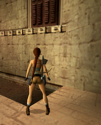 |
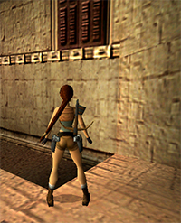 |
Bump mapping turned off |
Bump mapping turned on |
Assignation of bump maps happened inside level editor, where each texture piece could be marked as either level 1 or level 2 degree of bump map effect. When level was converted, all texture pieces with bumpmaps were placed into separate texture tiles after all other texture tiles, following by the same amount of texture tiles with auto-generated bump maps arranged in the same manner as original texture tiles. Number of bumped texture tiles was kept in separate variable as well (see [TR4 Level Format] section).
So, when engine rendered a face with texture marked as bumped, it rendered original texture at first, then it jumped to the texture tile plus number of bumped texture tiles, and rendered one more texture pass on this face using texture from resulting texture tile and the same UV coordinates.
struct tr4_object_texture // 38 bytes
{
uint16_t Attribute;
uint16_t TileAndFlag;
uint16_t NewFlags;
tr_object_texture_vert Vertices[4]; // The four corners of the texture
uint32_t OriginalU;
uint32_t OriginalV;
uint32_t Width; // Actually width-1
uint32_t Height; // Actually height-1
};
NewFlags is a bit field with flags:
-
Bits 0..2 — Mapping correction. It seems that these bits change the way the texture is applied.
-
Bits 11..12 — Specifies bump mapping level (see above), so can be either
00 = 0(no bump mapping),01 = 1(level 1) or10 = 2(level 2). -
Bit 15 — If set, the texture is for a triangle/quad from a room geometry. If not set, the texture is for a static mesh or model.
Width and Height are helper values which specify width and height for a given object texture.
OriginalU and OriginalV are unused values, which seem to identify original UV coordinates of object texture in TRLE texture page listings. These
coordinates are getting messed up when level is compiled, so one shouldn’t bother about parsing them correctly.
There is also null uint16_t filler in the end of each tr4_object_texture.
9.4. Animated Textures
Animated textures describe sets of object textures that are cycled through to produce texture animations; they are a set of int16_t’s with the following format (not a “real” C/C++ structure):
int16_t NumAnimatedTextures
virtual struct
{
int16_t NumTextureIDs; // Actually, this is the number of texture ID's - 1.
int16_t TextureIDs[NumTextureIDs + 1]; // offsets into ObjectTextures[], in animation order.
} AnimatedTextures[NumAnimatedTextures];
If a texture belongs to an animated-texture group, it will automatically be animated by the engine.
There are two types of animated textures — classic frames and UVRotate:
-
Classic frames: These are ordinary animated textures, and the only type displayed prior to TR4. It is simply a list of textures that are cycled through in an endless loop; they are normally used as geographic elements of the levels (e.g. water surface, bubbling lava, Atlantean flesh walls), but practically, Tomb Raider engines are capable of applying animated textures to mesh geometry (this feature is primarily used in custom levels). The speed (interval) of animation is hardcoded, and varies from version to version. While in TR1-2 textures were animated relatively slowly, in TR3 onwards they were sped up.
-
UV Rotate: Beginning from TR4, there is a new scheme for animated textures, called UVRotate. According to its name, it continuously shifts vertical texture coordinate while preserving texture size, which creates an effect of moving texture. For example, you can see it in action in TR4’s
angkor1.tr4, room #76:
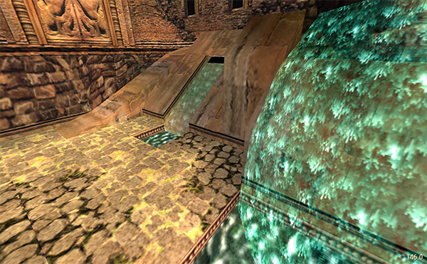 |
In foreground, you can see alpha-blended waterfall object animated with UVRotate. In background, UVRotate animation is also applied to room mesh. |
UVRotate mode is engaged by specifying UVRotate command in level script entry, which takes rotation speed as an argument. If such command is found (and
argument is not zero — for example, UVRotate = 4), engine uses special variable value kept in level file, NumUVRotates, to determine if
animation range belongs to UVRotate mode or classic frames mode. Then, if it belongs to UVRotate mode, each frame of this range is treated as individual
rotating texture.
|
|
There is also special case when UVRotate texture mode is engaged. When a texture is applied to a model with specific ID (so-called waterfall objects), then it is also considered UVRotate animated texture, even if it doesn’t belong to animated texture range, but only if it is a texture applied to a first face in the first mesh of the model. If there are other textures applied to other faces of a waterfall object, they won’t be considered as UVRotate. The speed of animation for waterfall objects is not affected by |
9.5. Cameras and Sinks
This data block serves for two different purposes, albeit keeping the same structure for both. First purpose is to provide positions to switch the camera to using Camera trigger action, and the second purpose is to move Lara to specified position when she is underwater, and Underwater Current trigger action was used.
X, Y and Z values are coordinates of a given camera or sink. When used with camera, it is an origin point of a camera. When used with sink, it is a point,
towards which Lara is pushed.
Room value specifies the room where camera is placed. For sink cases, this value is used to define strength of the current which moves Lara underwater.
Flag value is unknown for both cameras and sinks. However, there is some info that Flag is re-used for sinks as a Zone[] reference.
9.6. Flyby Cameras
Flyby cameras are cinematic interludes, in which camera flies from one point to another using spline trajectory. Each point in such sequence is a single flyby camera, and current camera properties (position, direction, roll, FOV, speed, and some more) are calculated by interpolating corresponding values from such flyby camera points — for example, if camera 0 has speed value of 10, and camera 1 has speed value of 5, then speed will gradually change from 10 to 5 when moving from one to another.
struct tr4_flyby_camera // 40 bytes
{
int32_t x; // Camera position
int32_t y;
int32_t z;
int32_t dx; // Camera angles
int32_t dy;
int32_t dz;
uint8_t Sequence;
uint8_t Index;
uint16_t FOV;
int16_t Roll;
uint16_t Timer;
uint16_t Speed;
uint16_t Flags;
uint32_t Room_ID;
};
Sequence is a number of flyby camera “chain” this particular camera belongs to. Maximum amount of flyby sequences in single level is 8 (however, this limit
was raised to 64 in TREP).
Index specifies order of the cameras in this particular sequence. Camera with index 0 will be first one in sequence, index 1 means camera will be second
in sequence, and so on.
Room_ID should be valid for a given flyby camera, so it will display properly, as well as have the ability to activate heavy triggers.
FOV changes this particular camera’s field of view.
Roll changes roll factor of a particular camera. When this parameter is not zero, camera will rotate either left or right along roll axis, creating so-called
“dutch angle”.
Timer field mainly used to stop camera movement for a given time (in game frames). As this parameter is temporal, it won’t be interpolated between two cameras.
Speed specifies movement speed for this particular camera.
Flags is an array of bit flags specifying different camera options:
-
Bit 0 — Make a cut to flyby from Lara camera position. Without it, it’ll pan smoothly.
-
Bit 1 — Tracks specified entity position (from
Entities[]array). Creates a vignette around the picture, giving impression of "subjective" camera. -
Bit 2 — Infinitely loop sequence.
-
Bit 3 — Used only with first camera in a sequence: whole sequence is treated merely as a camera “rails”, and camera itself focuses on Lara, thus creating “tracking” camera. Best example is “tracking” view in
ALEXHUB2.TR4, rooms #23 and #31. -
Bit 4 — Camera focuses on Lara’s last head position. For TR5, this flag is now used to hide Lara for this camera.
-
Bit 5 — Camera continuously focuses on Lara’s head, overriding own angle.
-
Bit 6 — Used only with last camera in a sequence: camera smoothly pans back to Lara camera position.
-
Bit 7 — When flyby arrives to this position, cuts to specific camera in same sequence. Next camera number is specified in Timer field of this camera.
-
Bit 8 — Stops camera movement for a given time (see Timer field).
-
Bit 9 — Disables look keypress breakout.
-
Bit 10 — Disables all Lara controls for all next camera points. Also engages widescreen bars to create cinematic feel.
-
Bit 11 — Overrides Bit 10 controls lock, enabling them back. Widescreen bars remain unaffected.
-
Bit 12 — Make screen fade-in.
-
Bit 13 — Make screen fade-out.
-
Bit 14 — Camera can activate heavy triggers, just like particular kinds of entities (boulders, pushables, etc.). When camera is moving right above heavy trigger sector, it will be activated.
-
Bit 15 — TRLE for TR5 says this flag is used to make camera one-shot, but it’s not true. Actual one-shot flag is placed in extra
uint16_tfield at0x0100for flyby camera TrigAction.
9.7. Cinematic Frames
These are camera positionings for cutscenes. All the entity animations are specified separately, and they are not synced with actual camera positions.
struct tr_cinematic_frame
{
int16_t rotY; // rotation about Y axis, +/- 32767 == +/- 180 degrees
int16_t rotZ; // rotation about Z axis, +/- 32767 == +/- 180 degrees
int16_t rotZ2; // seems to work a lot like rotZ; I haven't yet been able to
// differentiate them
int16_t posZ; // camera position relative to something (target? Lara? room
// origin?). pos* are _not_ in world coordinates.
int16_t posY; // camera position relative to something (see posZ)
int16_t posX; // camera position relative to something (see posZ)
int16_t unknown; // changing this can cause a runtime error
int16_t rotX; // rotation about X axis, +/- 32767 == +/- 180 degrees
};
9.8. LightMap
A 32*256 array of uint8_t which is apparently for applying light to 8-bit colour, in some documentation called ColourMap. The current palette index and
lighting value are used to calcuate an index to this table, which is a table of palette indices.
The Tomb Raider series' software rendering, like that of most real-time-3D games, uses 8-bit colour for speed and low bulk; however, there is the serious problem of how to do lighting with 8-bit colour, because doing it directly is computationally expensive. The usual solution is to arrange the palettes' colours in ramps, which the engine then follows in the appropriate directions. However, the TR series' palettes generally lack such neat ramps.
But the TR series has a more general solution, one that does not require palettes to have colour ramps. It uses precalculated lighting tables, the ColourMap
objects. These contain translations of a colour value and a lighting value, listed by palette index. The translation goes as follows:
n = ColourMap[256 * k + i];
where i is the original palette index, k is determined from the lighting value, and n is the new palette index. The lighting index k varies from 0 to
31, and the corresponding lighting value is, for TR1,
2 - k / 16
and for TR2 and TR3,
2 - (k + 1) / 16
This may be associated with the curious fact of the lighting values in the data files increasing in the “wrong” direction in TR1 and TR2, with 0 being full brightness and greater values being darker.
10. Level File Formats
10.1. The Entire TR1 Level Format
What follows is the physical .PHD file layout, byte for byte.
|
|
This is not a “real” C/C++ structure, in that some arrays are variable-length, with the length being defined by another element of the structure. |
uint32_t Version; // version (4 bytes)
uint32_t NumTextiles; // number of texture tiles (4 bytes)
tr2_textile8 Textile8[NumTextiles]; // 8-bit (palettized) textiles (NumTextiles * 65536 bytes)
uint32_t Unused; // 32-bit unused value (4 bytes)
uint16_t NumRooms; // number of rooms (2 bytes)
virtual struct
{
tr2_room_info RoomInfo; // room header (16 bytes)
uint32_t NumData; // number of data uint16_t's to follow (=RoomData) (4 bytes)
virtual struct
{
uint16_t NumVertices; // number of vertices to follow (2 bytes)
tr2_vertex_room Vertices[NumVertices]; // vertex list (NumVertices * 8 bytes [TR1 version])
uint16_t NumRectangles; // number of rectangles to follow (2 bytes)
tr_face4 Rectangles[NumRectangles]; // rectangle list (NumRectangles * 10 bytes)
uint16_t NumTriangles; // number of triangles to follow (2 bytes)
tr_face3 Triangles[NumTriangles]; // triangle list (NumTriangles * 8 bytes)
uint16_t NumSprites; // number of sprites to follow (2 bytes)
tr2_room_sprite Sprites[NumSprites]; // room sprite list (NumSprites * 4 bytes)
uint16_t NumDoors; // number of doors to follow (2 bytes)
tr2_room_door Doors[NumDoors]; // door list (NumDoors * 32 bytes)
uint16_t NumZsector; // sector table width (2 bytes)
uint16_t NumXsector; // sector table height (2 bytes)
tr2_room_sector SectorData[NumZsector * NumXsector]; // sector table (NumZsector * NumXsector * 8 bytes)
int16_t Intensity1;
uint16_t NumLights; // number of lights to follow (2 bytes)
tr2_room_light Lights[NumLights]; // light list (NumLights * 18 bytes [TR1 version])
uint16_t NumStaticMeshes; // number of static mesh records to follow (2 bytes)
tr2_room_staticmesh StaticMeshes[NumStaticMeshes]; // static mesh data (NumStaticMeshes * 18 bytes [TR1 version])
int16_t AlternateRoom; // (2 bytes)
uint16_t Flags; // (2 bytes)
} RoomData;
} Rooms[NumRooms];
uint32_t NumFloorData; // number of floor data uint16_t's to follow (4 bytes)
uint16_t FloorData[NumFloorData]; // floor data (NumFloorData * 2 bytes)
uint32_t NumMeshData; // number of uint16_t's of mesh data to follow (=Meshes[]) (4 bytes)
virtual struct
{
tr2_vertex Centre; // relative coordinates of mesh centre (6 bytes)
uint8_t Unknown1[4]; // unknown (4 bytes)
int16_t NumVertices; // number of vertices to follow (2 bytes)
tr2_vertex Vertices[NumVertices]; // list of vertices (NumVertices * 6 bytes)
int16_t NumNormals; // number of normals to follow (2 bytes)
tr2_vertex Normals[NumNormals]; // list of normals (NumNormals * 6 bytes) (becomes Lights if NumNormals < 0; 2 bytes)
int16_t NumTexturedRectangles; // number of textured rectangles to follow (2 bytes)
tr_face4 TexturedRectangles[NumTexturedRectangles]; // list of textured rectangles (NumTexturedRectangles * 10 bytes)
int16_t NumTexturedTriangles; // number of textured triangles to follow (2 bytes)
tr_face3 TexturedTriangles[NumTexturedTriangles]; // list of textured triangles (NumTexturedTriangles * 8 bytes)
int16_t NumColouredRectangles; // number of coloured rectangles to follow (2 bytes)
tr_face4 ColouredRectangles[NumColouredRectangles]; // list of coloured rectangles (NumColouredRectangles * 10 bytes)
int16_t NumColouredTriangles; // number of coloured triangles to follow (2 bytes)
tr_face3 ColouredTriangles[NumColouredTriangles]; // list of coloured triangles (NumColouredTriangles * 8 bytes)
} Meshes[NumMeshPointers]; // note that NumMeshPointers comes AFTER Meshes[]
uint32_t NumMeshPointers; // number of mesh pointers to follow (4 bytes)
uint32_t MeshPointers[NumMeshPointers]; // mesh pointer list (NumMeshPointers * 4 bytes)
uint32_t NumAnimations; // number of animations to follow (4 bytes)
tr2_animation Animations[NumAnimations]; // animation list (NumAnimations * 32 bytes)
uint32_t NumStateChanges; // number of state changes to follow (4 bytes)
tr2_state_change StateChanges[NumStateChanges]; // state-change list (NumStructures * 6 bytes)
uint32_t NumAnimDispatches; // number of animation dispatches to follow (4 bytes)
tr2_anim_dispatch AnimDispatches[NumAnimDispatches]; // animation-dispatch list list (NumAnimDispatches * 8 bytes)
uint32_t NumAnimCommands; // number of animation commands to follow (4 bytes)
tr2_anim_command AnimCommands[NumAnimCommands]; // animation-command list (NumAnimCommands * 2 bytes)
uint32_t NumMeshTrees; // number of MeshTrees to follow (4 bytes)
tr2_meshtree MeshTrees[NumMeshTrees]; // MeshTree list (NumMeshTrees * 4 bytes)
uint32_t NumFrames; // number of words of frame data to follow (4 bytes)
uint16_t Frames[NumFrames]; // frame data (NumFrames * 2 bytes)
uint32_t NumMoveables; // number of moveables to follow (4 bytes)
tr2_moveable Moveables[NumMoveables]; // moveable list (NumMoveables * 18 bytes)
uint32_t NumStaticMeshes; // number of StaticMesh data records to follow (4 bytes)
tr2_staticmesh StaticMeshes[NumStaticMeshes]; // StaticMesh data (NumStaticMesh * 32 bytes)
uint32_t NumObjectTextures; // number of object textures to follow (4 bytes) (after AnimatedTextures in TR3)
tr2_object_texture ObjectTextures[NumObjectTextures]; // object texture list (NumObjectTextures * 20 bytes) (after AnimatedTextures in TR3)
uint32_t NumSpriteTextures; // number of sprite textures to follow (4 bytes)
tr2_sprite_texture SpriteTextures[NumSpriteTextures]; // sprite texture list (NumSpriteTextures * 16 bytes)
uint32_t NumSpriteSequences; // number of sprite sequences records to follow (4 bytes)
tr2_sprite_sequence SpriteSequences[NumSpriteSequences]; // sprite sequence data (NumSpriteSequences * 8 bytes)
uint32_t NumCameras; // number of camera data records to follow (4 bytes)
tr2_camera Cameras[NumCameras]; // camera data (NumCameras * 16 bytes)
uint32_t NumSoundSources; // number of sound source data records to follow (4 bytes)
tr2_sound_source SoundSources[NumSoundSources]; // sound source data (NumSoundSources * 16 bytes)
uint32_t NumBoxes; // number of box data records to follow (4 bytes)
tr2_box Boxes[NumBoxes]; // box data (NumBoxes * 20 bytes [TR1 version])
uint32_t NumOverlaps; // number of overlap records to follow (4 bytes)
uint16_t Overlaps[NumOverlaps]; // overlap data (NumOverlaps * 2 bytes)
uint16_t GroundZone[2*NumBoxes]; // ground zone data
uint16_t GroundZone2[2*NumBoxes]; // ground zone 2 data
uint16_t FlyZone[2*NumBoxes]; // fly zone data
uint16_t GroundZoneAlt[2*NumBoxes]; // ground zone data (alternate rooms?)
uint16_t GroundZoneAlt2[2*NumBoxes]; // ground zone 2 data (alternate rooms?)
uint16_t FlyZoneAlt[2*NumBoxes]; // fly zone data (alternate rooms?)
uint32_t NumAnimatedTextures; // number of animated texture records to follow (4 bytes)
uint16_t AnimatedTextures[NumAnimatedTextures]; // animated texture data (NumAnimatedTextures * 2 bytes)
uint32_t NumItems; // number of items to follow (4 bytes)
tr2_item Items[NumItems]; // item list (NumItems * 22 bytes [TR1 version])
uint8_t LightMap[32 * 256]; // light map (8192 bytes)
tr_colour Palette[256]; // 8-bit palette (768 bytes)
uint16_t NumCinematicFrames; // number of cinematic frame records to follow (2 bytes)
tr2_cinematic_frame CinematicFrames[NumCinematicFrames]; // (NumCinematicFrames * 16 bytes)
uint16_t NumDemoData; // number of demo data records to follow (2 bytes)
uint8_t DemoData[NumDemoData]; // demo data (NumDemoData bytes)
int16_t SoundMap[256]; // sound map (512 bytes)
uint32_t NumSoundDetails; // number of sound-detail records to follow (4 bytes)
tr2_sample_info SoundDetails[NumSoundDetails]; // sound-detail list (NumSoundDetails * 8 bytes)
uint32_t NumSamples (number of uint8_t's in Samples)
uint8_t Samples (array of uint8_t's -- embedded sound samples in Microsoft WAVE format)
uint32_t NumSampleIndices; // number of sample indices to follow (4 bytes)
uint32_t SampleIndices[NumSampleIndices]; // sample indices (NumSampleIndices * 4 bytes)
10.2. The Entire TR2 Level Format
What follows is the physical .TR2 file layout, byte for byte.
|
|
This is not a “real” C/C++ structure, in that some arrays are variable-length, with the length being defined by another element of the structure. |
uint32_t Version; // version (4 bytes)
tr_colour Palette[256]; // 8-bit palette (768 bytes)
tr_colour4 Palette16[256]; // (1024 bytes)
uint32_t NumTextiles; // number of texture tiles (4 bytes)
tr2_textile8 Textile8[NumTextiles]; // 8-bit (palettized) textiles (NumTextiles * 65536 bytes)
tr2_textile16 Textile16[NumTextiles]; // 16-bit (ARGB) textiles (NumTextiles * 131072 bytes)
uint32_t Unused; // 32-bit unused value (4 bytes)
uint16_t NumRooms; // number of rooms (2 bytes)
virtual struct
{
tr2_room_info RoomInfo; // room header (16 bytes)
uint32_t NumData; // number of data uint16_t's to follow (=RoomData) (4 bytes)
virtual struct
{
uint16_t NumVertices; // number of vertices to follow (2 bytes)
tr2_vertex_room Vertices[NumVertices]; // vertex list (NumVertices * 12 bytes)
uint16_t NumRectangles; // number of rectangles to follow (2 bytes)
tr_face4 Rectangles[NumRectangles]; // rectangle list (NumRectangles * 10 bytes)
uint16_t NumTriangles; // number of triangles to follow (2 bytes)
tr_face3 Triangles[NumTriangles]; // triangle list (NumTriangles * 8 bytes)
uint16_t NumSprites; // number of sprites to follow (2 bytes)
tr2_room_sprite Sprites[NumSprites]; // room sprite list (NumSprites * 4 bytes)
uint16_t NumDoors; // number of doors to follow (2 bytes)
tr2_room_door Doors[NumDoors]; // door list (NumDoors * 32 bytes)
uint16_t NumZsector; // sector table width (2 bytes)
uint16_t NumXsector; // sector table height (2 bytes)
tr2_room_sector SectorData[NumZsector * NumXsector]; // sector table (NumZsector * NumXsector * 8 bytes)
int16_t Intensity1;
int16_t Intensity2;
int16_t LightMode;
uint16_t NumLights; // number of lights to follow (2 bytes)
tr2_room_light Lights[NumLights]; // light list (NumLights * 24 bytes)
uint16_t NumStaticMeshes; // number of static mesh records to follow (2 bytes)
tr2_room_staticmesh StaticMeshes[NumStaticMeshes]; // static mesh data (NumStaticMeshes * 20 bytes)
int16_t AlternateRoom; // (2 bytes)
uint16_t Flags; // (2 bytes)
} RoomData;
} Rooms[NumRooms];
uint32_t NumFloorData; // number of floor data uint16_t's to follow (4 bytes)
uint16_t FloorData[NumFloorData]; // floor data (NumFloorData * 2 bytes)
uint32_t NumMeshData; // number of uint16_t's of mesh data to follow (=Meshes[]) (4 bytes)
virtual struct
{
tr2_vertex Centre; // relative coordinates of mesh centre (6 bytes)
uint8_t Unknown1[4]; // unknown (4 bytes)
int16_t NumVertices; // number of vertices to follow (2 bytes)
tr2_vertex Vertices[NumVertices]; // list of vertices (NumVertices * 6 bytes)
int16_t NumNormals; // number of normals to follow (2 bytes)
tr2_vertex Normals[NumNormals]; // list of normals (NumNormals * 6 bytes) (becomes Lights if NumNormals < 0; 2 bytes)
int16_t NumTexturedRectangles; // number of textured rectangles to follow (2 bytes)
tr_face4 TexturedRectangles[NumTexturedRectangles]; // list of textured rectangles (NumTexturedRectangles * 10 bytes)
int16_t NumTexturedTriangles; // number of textured triangles to follow (2 bytes)
tr_face3 TexturedTriangles[NumTexturedTriangles]; // list of textured triangles (NumTexturedTriangles * 8 bytes)
int16_t NumColouredRectangles; // number of coloured rectangles to follow (2 bytes)
tr_face4 ColouredRectangles[NumColouredRectangles]; // list of coloured rectangles (NumColouredRectangles * 10 bytes)
int16_t NumColouredTriangles; // number of coloured triangles to follow (2 bytes)
tr_face3 ColouredTriangles[NumColouredTriangles]; // list of coloured triangles (NumColouredTriangles * 8 bytes)
} Meshes[NumMeshPointers]; // note that NumMeshPointers comes AFTER Meshes[]
uint32_t NumMeshPointers; // number of mesh pointers to follow (4 bytes)
uint32_t MeshPointers[NumMeshPointers]; // mesh pointer list (NumMeshPointers * 4 bytes)
uint32_t NumAnimations; // number of animations to follow (4 bytes)
tr2_animation Animations[NumAnimations]; // animation list (NumAnimations * 32 bytes)
uint32_t NumStateChanges; // number of state changes to follow (4 bytes)
tr2_state_change StateChanges[NumStateChanges]; // state-change list (NumStructures * 6 bytes)
uint32_t NumAnimDispatches; // number of animation dispatches to follow (4 bytes)
tr2_anim_dispatch AnimDispatches[NumAnimDispatches]; // animation-dispatch list list (NumAnimDispatches * 8 bytes)
uint32_t NumAnimCommands; // number of animation commands to follow (4 bytes)
tr2_anim_command AnimCommands[NumAnimCommands]; // animation-command list (NumAnimCommands * 2 bytes)
uint32_t NumMeshTrees; // number of MeshTrees to follow (4 bytes)
tr2_meshtree MeshTrees[NumMeshTrees]; // MeshTree list (NumMeshTrees * 4 bytes)
uint32_t NumFrames; // number of words of frame data to follow (4 bytes)
uint16_t Frames[NumFrames]; // frame data (NumFrames * 2 bytes)
uint32_t NumMoveables; // number of moveables to follow (4 bytes)
tr2_moveable Moveables[NumMoveables]; // moveable list (NumMoveables * 18 bytes)
uint32_t NumStaticMeshes; // number of StaticMesh data records to follow (4 bytes)
tr2_staticmesh StaticMeshes[NumStaticMeshes]; // StaticMesh data (NumStaticMesh * 32 bytes)
uint32_t NumObjectTextures; // number of object textures to follow (4 bytes)
tr2_object_texture ObjectTextures[NumObjectTextures]; // object texture list (NumObjectTextures * 20 bytes) (after AnimatedTextures in TR3)
uint32_t NumSpriteTextures; // number of sprite textures to follow (4 bytes)
tr2_sprite_texture SpriteTextures[NumSpriteTextures]; // sprite texture list (NumSpriteTextures * 16 bytes)
uint32_t NumSpriteSequences; // number of sprite sequences records to follow (4 bytes)
tr2_sprite_sequence SpriteSequences[NumSpriteSequences]; // sprite sequence data (NumSpriteSequences * 8 bytes)
uint32_t NumCameras; // number of camera data records to follow (4 bytes)
tr2_camera Cameras[NumCameras]; // camera data (NumCameras * 16 bytes)
uint32_t NumSoundSources; // number of sound source data records to follow (4 bytes)
tr2_sound_source SoundSources[NumSoundSources]; // sound source data (NumSoundSources * 16 bytes)
uint32_t NumBoxes; // number of box data records to follow (4 bytes)
tr2_box Boxes[NumBoxes]; // box data (NumBoxes * 8 bytes)
uint32_t NumOverlaps; // number of overlap records to follow (4 bytes)
uint16_t Overlaps[NumOverlaps]; // overlap data (NumOverlaps * 2 bytes)
int16_t Zones[10*NumBoxes]; // zone data (NumBoxes * 20 bytes)
uint32_t NumAnimatedTextures; // number of animated texture records to follow (4 bytes)
uint16_t AnimatedTextures[NumAnimatedTextures]; // animated texture data (NumAnimatedTextures * 2 bytes)
uint32_t NumItems; // number of items to follow (4 bytes)
tr2_item Items[NumItems]; // item list (NumItems * 24 bytes)
uint8_t LightMap[32 * 256]; // light map (8192 bytes)
uint16_t NumCinematicFrames; // number of cinematic frame records to follow (2 bytes)
tr2_cinematic_frame CinematicFrames[NumCinematicFrames]; // (NumCinematicFrames * 16 bytes)
uint16_t NumDemoData; // number of demo data records to follow (2 bytes)
uint8_t DemoData[NumDemoData]; // demo data (NumDemoData bytes)
int16_t SoundMap[370]; // sound map (740 bytes)
uint32_t NumSoundDetails; // number of sound-detail records to follow (4 bytes)
tr2_sample_info SoundDetails[NumSoundDetails]; // sound-detail list (NumSoundDetails * 8 bytes)
uint32_t NumSampleIndices; // number of sample indices to follow (4 bytes)
uint32_t SampleIndices[NumSampleIndices]; // sample indices (NumSampleIndices * 4 bytes)
10.3. The Entire TR3 Level Format
What follows is the physical Tomb Raider III .TR2 file layout, byte for byte.
|
|
This is not a “real” C/C++ structure, in that some arrays are variable-length, with the length being defined by another element of the structure. |
uint32_t Version; // version (4 bytes)
tr_colour Palette[256]; // 8-bit palette (768 bytes)
tr_colour4 Palette16[256]; // (1024 bytes)
uint32_t NumTextiles; // number of texture tiles (4 bytes)
tr2_textile8 Textile8[NumTextiles]; // 8-bit (palettized) textiles (NumTextiles * 65536 bytes)
tr2_textile16 Textile16[NumTextiles]; // 16-bit (ARGB) textiles (NumTextiles * 131072 bytes) (absent from TR1)
uint32_t Unused; // 32-bit unused value (4 bytes)
uint16_t NumRooms; // number of rooms (2 bytes)
virtual struct
{
tr2_room_info RoomInfo; // room header (16 bytes)
uint32_t NumData; // number of data uint16_t's to follow (=RoomData) (4 bytes)
virtual struct
{
uint16_t NumVertices; // number of vertices to follow (2 bytes)
tr2_vertex_room Vertices[NumVertices]; // vertex list (NumVertices * 12 bytes)
uint16_t NumRectangles; // number of rectangles to follow (2 bytes)
tr_face4 Rectangles[NumRectangles]; // rectangle list (NumRectangles * 10 bytes)
uint16_t NumTriangles; // number of triangles to follow (2 bytes)
tr_face3 Triangles[NumTriangles]; // triangle list (NumTriangles * 8 bytes)
uint16_t NumSprites; // number of sprites to follow (2 bytes)
tr2_room_sprite Sprites[NumSprites]; // room sprite list (NumSprites * 4 bytes)
uint16_t NumDoors; // number of doors to follow (2 bytes)
tr2_room_door Doors[NumDoors]; // door list (NumDoors * 32 bytes)
uint16_t NumZsector; // sector table width (2 bytes)
uint16_t NumXsector; // sector table height (2 bytes)
tr2_room_sector SectorData[NumZsector * NumXsector]; // sector table (NumZsector * NumXsector * 8 bytes)
int16_t Intensity1;
int16_t Intensity2;
uint16_t NumLights; // number of lights to follow (2 bytes)
tr2_room_light Lights[NumLights]; // light list (NumLights * 24 bytes)
uint16_t NumStaticMeshes; // number of static mesh records to follow (2 bytes)
tr2_room_staticmesh StaticMeshes[NumStaticMeshes]; // static mesh data (NumStaticMeshes * 20 bytes)
int16_t AlternateRoom; // (2 bytes)
uint16_t Flags; // (2 bytes)
tr_colour RoomLightColour // 3 bytes
} RoomData;
} Rooms[NumRooms];
uint32_t NumFloorData; // number of floor data uint16_t's to follow (4 bytes)
uint16_t FloorData[NumFloorData]; // floor data (NumFloorData * 2 bytes)
uint32_t NumMeshData; // number of uint16_t's of mesh data to follow (=Meshes[]) (4 bytes)
virtual struct
{
tr2_vertex Centre; // relative coordinates of mesh centre (6 bytes)
uint8_t Unknown1[4]; // unknown (4 bytes)
int16_t NumVertices; // number of vertices to follow (2 bytes)
tr2_vertex Vertices[NumVertices]; // list of vertices (NumVertices * 6 bytes)
int16_t NumNormals; // number of normals to follow (2 bytes)
tr2_vertex Normals[NumNormals]; // list of normals (NumNormals * 6 bytes) (becomes Lights if NumNormals < 0; 2 bytes)
int16_t NumTexturedRectangles; // number of textured rectangles to follow (2 bytes)
tr_face4 TexturedRectangles[NumTexturedRectangles]; // list of textured rectangles (NumTexturedRectangles * 10 bytes)
int16_t NumTexturedTriangles; // number of textured triangles to follow (2 bytes)
tr_face3 TexturedTriangles[NumTexturedTriangles]; // list of textured triangles (NumTexturedTriangles * 8 bytes)
int16_t NumColouredRectangles; // number of coloured rectangles to follow (2 bytes)
tr_face4 ColouredRectangles[NumColouredRectangles]; // list of coloured rectangles (NumColouredRectangles * 10 bytes)
int16_t NumColouredTriangles; // number of coloured triangles to follow (2 bytes)
tr_face3 ColouredTriangles[NumColouredTriangles]; // list of coloured triangles (NumColouredTriangles * 8 bytes)
} Meshes[NumMeshPointers]; // note that NumMeshPointers comes AFTER Meshes[]
uint32_t NumMeshPointers; // number of mesh pointers to follow (4 bytes)
uint32_t MeshPointers[NumMeshPointers]; // mesh pointer list (NumMeshPointers * 4 bytes)
uint32_t NumAnimations; // number of animations to follow (4 bytes)
tr2_animation Animations[NumAnimations]; // animation list (NumAnimations * 32 bytes)
uint32_t NumStateChanges; // number of state changes to follow (4 bytes)
tr2_state_change StateChanges[NumStateChanges]; // state-change list (NumStructures * 6 bytes)
uint32_t NumAnimDispatches; // number of animation dispatches to follow (4 bytes)
tr2_anim_dispatch AnimDispatches[NumAnimDispatches]; // animation-dispatch list list (NumAnimDispatches * 8 bytes)
uint32_t NumAnimCommands; // number of animation commands to follow (4 bytes)
tr2_anim_command AnimCommands[NumAnimCommands]; // animation-command list (NumAnimCommands * 2 bytes)
uint32_t NumMeshTrees; // number of MeshTrees to follow (4 bytes)
tr2_meshtree MeshTrees[NumMeshTrees]; // MeshTree list (NumMeshTrees * 4 bytes)
uint32_t NumFrames; // number of words of frame data to follow (4 bytes)
uint16_t Frames[NumFrames]; // frame data (NumFrames * 2 bytes)
uint32_t NumMoveables; // number of moveables to follow (4 bytes)
tr2_moveable Moveables[NumMoveables]; // moveable list (NumMoveables * 18 bytes)
uint32_t NumStaticMeshes; // number of StaticMesh data records to follow (4 bytes)
tr2_staticmesh StaticMeshes[NumStaticMeshes]; // StaticMesh data (NumStaticMesh * 32 bytes)
uint32_t NumSpriteTextures; // number of sprite textures to follow (4 bytes)
tr2_sprite_texture SpriteTextures[NumSpriteTextures]; // sprite texture list (NumSpriteTextures * 16 bytes)
uint32_t NumSpriteSequences; // number of sprite sequences records to follow (4 bytes)
tr2_sprite_sequence SpriteSequences[NumSpriteSequences]; // sprite sequence data (NumSpriteSequences * 8 bytes)
uint32_t NumCameras; // number of camera data records to follow (4 bytes)
tr2_camera Cameras[NumCameras]; // camera data (NumCameras * 16 bytes)
uint32_t NumSoundSources; // number of sound source data records to follow (4 bytes)
tr2_sound_source SoundSources[NumSoundSources]; // sound source data (NumSoundSources * 16 bytes)
uint32_t NumBoxes; // number of box data records to follow (4 bytes)
tr2_box Boxes[NumBoxes]; // box data (NumBoxes * 8 bytes)
uint32_t NumOverlaps; // number of overlap records to follow (4 bytes)
uint16_t Overlaps[NumOverlaps]; // overlap data (NumOverlaps * 2 bytes)
int16_t Zones[10*NumBoxes]; // zone data (NumBoxes * 20 bytes)
uint32_t NumAnimatedTextures; // number of animated texture records to follow (4 bytes)
uint16_t AnimatedTextures[NumAnimatedTextures]; // animated texture data (NumAnimatedTextures * 2 bytes)
uint32_t NumObjectTextures; // number of object textures to follow (4 bytes) (after AnimatedTextures in TR3)
tr2_object_texture ObjectTextures[NumObjectTextures]; // object texture list (NumObjectTextures * 20 bytes)
uint32_t NumItems; // number of items to follow (4 bytes)
tr2_item Items[NumItems]; // item list (NumItems * 24 bytes)
uint8_t LightMap[32 * 256]; // light map (8192 bytes)
uint16_t NumCinematicFrames; // number of cinematic frame records to follow (2 bytes)
tr2_cinematic_frame CinematicFrames[NumCinematicFrames]; // (NumCinematicFrames * 16 bytes)
uint16_t NumDemoData; // number of demo data records to follow (2 bytes)
uint8_t DemoData[NumDemoData]; // demo data (NumDemoData bytes)
int16_t SoundMap[370]; // sound map (740 bytes)
uint32_t NumSoundDetails; // number of sound-detail records to follow (4 bytes)
tr2_sample_info SoundDetails[NumSoundDetails]; // sound-detail list (NumSoundDetails * 8 bytes)
uint32_t NumSampleIndices; // number of sample indices to follow (4 bytes) +
uint32_t SampleIndices[NumSampleIndices]; // sample indices (NumSampleIndices * 4 bytes)
10.4. The Entire TR4 Level Format
|
|
Needs to be written. |
10.5. The Entire TR5 Level Format
|
|
Needs to be written. |
10.6. Itemized Differences between TR1 and TR2
-
TR1 has no colour table or 16-bit palette before the start of the textures; it also lacks 16-bit textures.
-
In TR1,
tr2_room_vertexhas after itstr_vertexstruct only the first light intensity, and not the attributes or the second intensity. -
In TR1, after SectorData, there is only the first light intensity, and not the second one or the lighting mode.
-
In TR1, tr2_room_light_struct has only one of:
-
uint16_t Diffuse1/2
-
uint32_t Unknown1/2
-
-
In TR1, tr2_room_static does not have two light intensities, but only one.
-
“Boxes” objects are rectangles whose four horizontal-coordinate values are
uint8_ts in TR2 andint32_t's in TR1. -
“Zones” objects have 10
int16_ts in TR2, but 6int16_ts in TR1 -
In TR1,
tr2_item_structis like the TR2 version, but with only one light intensity. -
The TR1 colour table has the same format as the TR2 colour table, but it is located between the LightMap and the cinematic frames.
-
SoundMap is 370
int16_ts in TR2, but 256int16_ts in TR1. -
Between SoundDetails and SampleIndices, TR1 has all the level’s sound samples, in the form of embedded Microsoft WAVE files. Just before these samples is the total number of bytes in those sound samples, which is a int32_t.
10.7. Itemized Differences between TR2 and TR3
-
After the two room-light intensities, TR2 has a lighting-mode value, which TR3 lacks.
-
Also in
tr3_room, TR3 has 3 extra bytes at the end, which areWaterScheme,ReverbInfoand null filler. -
Finally, in TR2, the
tr_object_texturedata is before thetr_sprite_texturedata. In TR3, it is before thetr2_itemdata.
10.8. Itemized Differences between TR3 and TR4
-
There are no more 8-bit and 16-bit palettes.
-
There are no more 8-bit textures.
-
There are now 32-bit textures.
-
Texture tiles are now divided into three parts: non-bumped room texture tiles, model texture tiles and bumped room texture tiles.
-
Level file divided in several chunks, with each chunk compressed using zlib:
-
Chunk 1: 32-bit texture tiles.
-
Chunk 2: 16-bit texture tiles.
-
Chunk 3: 32-bit sky and font graphics.
-
Chunk 4: Level data.
-
-
Each compressed chunk is preceded by its uncompressed size and compressed size
uint32_ts. -
After last compressed chunk, there are now all audio samples, sequentially stored in this manner:
struct tr4_sample
{
uint32_t UncompressedSize;
uint32_t CompressedSize;
char WaveFile[]; // Embedded sample in MS-ADPCM or PCM WAV format.
}
-
Room Light structure has completely changed:
-
Colour is no longer stored in [tr_colour4] format, rather [tr_colour].
-
There is new field
LightType, which specifies light mode or fog bulb mode. -
After
LightType, there is auint8_t Fillervalue of0xFF. -
Intensityis nowuint8_t. -
Instead of
Fade, there is a set of 4 float values:In,Out,LengthandCutOff. -
There are also three float values defining light direction.
-
-
There are now two dedicated structures for mesh faces, bearing extra field
Lighting. -
There is now FlybyCameras block before SoundSources block.
-
Cinematic Frames are replaced with AI Data block.
-
Meaning of fields in [tr_sprite_texture] has changed.
-
In addition, the
NumSpriteTexturesfield is preceeded by the 3 ASCII bytesSPR. -
Meshes have no longer colored tris / quads. So,
NumColoredRectangles,ColoredRectangles[],NumColoredTriangles,ColoredTriangles[]no longer exist in the tr4_mesh structure. -
The
NumObjectTexturesfield is now preceeded by 4 ASCII bytes\0TEX -
[tr4_object_texture] struct is used instead of [tr_object_texture].
-
[tr4_animation] struct is used instead of [tr_animation].
-
There is no lightmap.
-
TR4 levels have an additional 6 bytes at the end of the uncompressed Level data that seem to be always 0.
10.9. Itemized Differences between TR4 and TR5
-
There is no more bumped room texture tiles block.
-
There are now two extra
uint16_tvalues after last texture block specifying Lara type and weather type. Weather type may be either 0 (no weather), 1 (raining) or 2 (snowing). -
Also, it is followed by 28 bytes zero padding.
-
uncompressed size and compressed size
uint32_tvalues for Level data block are equal (reason below). -
Level data block is not compressed.
-
[tr5_room] struct is used instead of [tr4_room].
-
[tr5_room_info] struct is used instead of [tr_room_info].
-
[tr5_room_vertex] struct is used instead of [tr4_room_vertex].
-
[tr5_room_light] struct is used instead of [tr4_room_light].
-
SoundMap is 450
int16_ts in TR5, but 370int16_ts in TR4.
10.10. Itemized Differences between “normal” TRs and Demos
-
Presumably as a form of copy protection, the demo versions of some of the TR games use levels that are slightly different from those in the retail versions. However, those that have been found are all data rearrangements, as explained below.
-
The TR1 and Unfinished Business (
.TUB) demos have their palettes moved to between the SpriteSequences and the Cameras. -
The TR2 “Wall” demo, and maybe also its “Venice” demo, has its LightMap (8K) moved to between the SpriteSequences and the Cameras. It also has its SampleIndices content replaced by the soundfiles, though the associated number of them remains unchanged (the number of indices becomes the number of samples).
-
That demo also has its own version of
TOMBPC.DAT, calledDEMOPC.DAT, which appears to have the exact same format asTOMBPC.DAT.
No rearrangements are known for the TR3 demos.
11. Scripting in TR2/TR3 for PC/PSX
11.1. Overview
The internal gameflow, which levels come in what order, what item(s) Lara has at the beginning of each level, the filenames of the level and cut-scene files,
all the visible text (e.g. “Save Game,” “Rusty Key,” etc.), and various other options are controlled by a script file called TOMBPC.DAT/TOMBPSX.DAT. The
scripts were compiled using a utility known as GAMEFLOW.EXE which was distributed by Eidos in the German release of Tomb Raider II Gold. Both TR2 and TR3 use
these script files. From both games the format remained unchanged. TR1’s gameflow is hardcoded thus there is no external file controlling this resulting in loss
of flexibility.
uint32_t Version; // The Script Version (Always 3 for TR2/3)
uint8_t Description[256]; // Null-terminated string describing the script copyright info etc. Not encrypted.
uint16_t Unknown1; // ?
int32_t FirstOption; // Level to go to when WHAT happens?
int32_t TitleReplace; // Level to go to when WHAT happens?
int32_t OnDeathDemoMode; // Level to go to when Lara dies during demo mode
int32_t OnDeathInGame; // Level to go to when Lara dies during the game
int32_t DemoTime; // Time in game ticks (1/30th of a second?) to wait before starting a demo
int32_t OnDemoInterrupt; // Level to go to when demo mode is interrupted
int32_t OnDemoEnd; // Level to go to when the demo ends
uint8_t Unknown2[36]; // Filler
int16_t NumLevels; // Number of levels in the game.
int16_t NumChapterScreens; // Chapter screens (Present in TR2, first used in TR3)
int16_t NumTitles; // Only one, TITLE.TR2
int16_t NumFMVs; // Number of FMV cutscenes PC - (*.RPL), PSX - (*STR)
int16_t NumCutscenes; // Number of in-game (engine-rendered) cutscenes (CUT*.TR2)
int16_t NumDemoLevels; // Number of demo levels
int16_t TitleSoundID; // ID of title soundtrack
int16_t SingleLevel; // If doing only a single level
uint8_t Unknown3[32]; // Filler
uint16_t Flags; // Various flags see below
uint8_t Unknown4[6]; // Filler
uint8_t XORKey; // Key used to encrypt/decrypt strings
uint8_t LanguageID; // Script Language ID see below
int16_t SecretSoundID; // ID of soundtrack to play when a secret is found
uint8_t Unknown5[4]; // Filler
// 1. Offset to each string is end offset of *StringOffsets' + *StringOffsets[i]
// 2. String length is calculated by (*StringOffsets[i+1]-*StringOffsets[i])
// 3. If Flags & UseXor true each character must be ^ XorKey to decrypt the string.
uint16_t LevelStringOffsets[NumLevels+1]; //Relative offset to level name strings
StringArray LevelStrings[NumLevels]; //Usually Encrypted
uint16_t ChapterScreenStringOffsets[NumChapterScreens+1]; //Relative offset to chapter screen strings
StringArray ChapterScreenStrings[NumChapterScreens]; //Usually Encrypted
uint16_t TitleStringOffsets[NumTitles+1]; //Relative offset to title strings
StringArray TitleStrings[NumTitles]; //Usually Encrypted
uint16_t FMVStringOffsets[NumFMVs+1]; //Relative offset to fmv path strings
StringArray FMVStrings[NumFMVs]; //Usually Encrypted
uint16_t LevelPathStringOffsets[NumLevels+1]; //Relative offset to level path strings
StringArray LevelPathStrings[NumLevels]; //Usually Encrypted
uint16_t CutscenePathStringOffsets[NumCutscenes+1]; //Relative offset to cutscene path strings
StringArray CutscenePathStrings[NumCutscenes]; //Usually Encrypted
uint16_t SequenceOffsets[NumLevels+2]; //Relative offset to sequence info (maybe+2 because title needs sequence +numtitles?)
SequenceInfo Sequences[NumLevels+1]; //Sequence info see explanation below (SIZE is dependant on first opcode)
uint16_t DemoLevelIDs[NumDemoLevels];
#if PSX //PSX Only
PSXFMVInfo[NumFMVs];// Two uint32_t, flag? then length/lba related?
#endif
int16_t NumGameStrings;
uint16_t GameStringOffsets[NumGameStrings+1]; //Relative offset to game strings
StringArray GameStrings[NumGameStrings]; //Usually Encrypted
#if PSX // If PSX
uint16_t PSXStringOffsets[80+1];//Fixed at 80?
StringArray PSXStrings[80+1];//Fixed at 80? Usually Encrypted
#else // PC
uint16_t PCStringOffsets[80+1];//Fixed at 80?
StringArray PCStrings[80+1];//Fixed at 80? Usually Encrypted
#endif
uint16_t Puzzle1StringOffsets[NumLevels+1]; //Relative offset to puzzle1 strings
StringArray Puzzle1Strings[NumLevels]; //Usually Encrypted
uint16_t Puzzle2StringOffsets[NumLevels+1]; //Relative offset to puzzle2 strings
StringArray Puzzle2Strings[NumLevels]; //Usually Encrypted
uint16_t Puzzle3StringOffsets[NumLevels+1]; //Relative offset to puzzle3 strings
StringArray Puzzle3Strings[NumLevels]; //Usually Encrypted
uint16_t Puzzle4StringOffsets[NumLevels+1]; //Relative offset to puzzle4 strings
StringArray Puzzle4Strings[NumLevels]; //Usually Encrypted
uint16_t Pickup1StringOffsets[NumLevels+1]; //Relative offset to pickup1 strings
StringArray Pickup1Strings[NumLevels]; //Usually Encrypted
uint16_t Pickup2StringOffsets[NumLevels+1]; //Relative offset to pickup2 strings
StringArray Pickup2Strings[NumLevels]; //Usually Encrypted
uint16_t Key1StringOffsets[NumLevels+1]; //Relative offset to key1 strings
StringArray Key1Strings[NumLevels]; //Usually Encrypted
uint16_t Key2StringOffsets[NumLevels+1]; //Relative offset to key2 strings
StringArray Key2Strings[NumLevels]; //Usually Encrypted
uint16_t Key3StringOffsets[NumLevels+1]; //Relative offset to key3 strings
StringArray Key3Strings[NumLevels]; //Usually Encrypted
uint16_t Key4StringOffsets[NumLevels+1]; //Relative offset to key4 strings
StringArray Key4Strings[NumLevels]; //Usually Encrypted
11.2. PSX FMV Info
struct PSXFMVInfo
{
uint32_t flags; //? First FMV usually has this set as 1
uint32_t unknown; //Possibly: size, lba or length can't remember which
};
This specific info is exclusive to TOMBPSX.DAT.
11.3. Script Flags
enum ScriptFlags
{
DemoVersion = (1 << 0), //(=1) Is this a demo version of the game
TitleDisabled = (1 << 1), //(=1) Disables Title Screen
CheatModeCheckDisabled = (1 << 2), //(=1) Related to in-game cheats?
NoInputTimeout = (1 << 3), //(=1) Disables input timeout for demo mode
LoadSaveDisabled = (1 << 4), //(=1) Disables loading/saving
ScreenSizingDisabled = (1 << 5), //(=1) Disables screen resizing PC only?
LockoutOptionRing = (1 << 6), //(=1) Stops options ring from being selected
DozyCheatEnabled = (1 << 7), //(=1) Enable DOZY (sometimes they removed the internal code)
UseXor = (1 << 8), //(=1) If true all string chars (except null termination) must be xor-ed by XorKey.
GymEnabled = (1 << 9), //(=1) Is Gym available on title screen.
SelectAnyLevel = (1 << 10),//(=1) Unlocks all levels
EnableCheatCode = (1 << 11) //(=1) Related to in-game cheats?
};
These flags enable various in-game features if set.
11.4. Script Language
enum ScriptLanguage
{
LANG_ENGLISH = 0,
LANG_FRENCH = 1,
LANG_GERMAN = 2,
LANG_AMERICAN = 3,
LANG_JAPANESE = 4
};
11.5. Script Sequencing & Opcodes/Operands
Each script has “sequence information”, Opcodes and Operands are all stored as uint16_t. Sequences contain a set of commands to execute where an additional
value (operand) is usually passed as a parameter to the function the command needs to call. Note: that if a level is a demo level, its level ID will be 1024
higher than a normal level ID.
struct SequenceInfo
{
uint16_t Opcode; //Command
uint16_t Operand; //Not always used, depends on the opcode
};
enum ScriptOpcodes
{
OP_PICTURE = 0, // ?
OP_LISTSTART = 1, // ?
OP_LISTEND = 2, // ?
OP_STARTFMV = 3, // Play FMV, operand is FMV ID
OP_STARTLEVEL = 4, // Play (interactive) level, operand is level ID
OP_STARTCINE = 5, // Play Cutscene, operand is cutscene ID
OP_LEVELCOMPLETE = 6, // Do level-completion display (no operands)
OP_STARTDEMO = 7, // Play demo level: operand is level ID
OP_JUMPTOSEQUENCE = 8, // Jumps to specified sequence?
OP_ENDSEQUENCE = 9, // End of sequence (no operands)
OP_SETTRACK = 10, // Play soundtrack: operand is soundtrack ID (it precedes opcodes of associated levels)
OP_SUNSETENABLED = 11, // Bartoli's Hideous
OP_LOADINGPIC = 12, // Chapter screen: operand is chapter ID
OP_DEADLYWATER = 13, // Temple of Xian? Kills Lara when she touches water?
OP_REMOVEWEAPONS = 14, // Lose your weapons (no operands)
OP_GAMECOMPLETE = 15, // End of game (no operands)
OP_CUTANGLE = 16, // Associated with cutscenes; a viewpoint control? (one operand?)
OP_NOFLOOR = 17, // For Floating Islands/Thames Wharf? (one operand?)
OP_ADDTOINVENTORY = 18, // Give item; operand is item type (see below)
OP_LARASTARTANIMATION = 19,// Item-type 12 state to start level in: operand is state number
OP_NUMSECRETS = 20, // Number of secrets (overrides engine's hardcoded count of them?): operand is that number
OP_KILLTOCOMPLETE = 21, // Probably for Ice Palace boss (no operands)
OP_REMOVEAMMO = 22 // Lose your ammo and medipacks? (no operands?)
};
The correct way to parse Sequence Info is to first read a uint16_t opcode specifying what this command within the sequence does. In reference to the list
above, certain commands MUST have an additional uint16_t read from the sequence data directly after the opcode that’s the pairing operand to this opcode. Not
all opcodes have an operand so this must be done correctly. The original games execute each sequence command 1 by 1 until it reaches OP_ENDSEQUENCE, where it
then runs the next sequence.
11.5.1. Opcode-18 OP_ADDTOINVENTORY
(repeat means give another)
-
0 — Pistols
-
1 — Shotgun
-
2 — Automatic pistols
-
3 — Uzis
-
4 — Harpoon gun
-
5 — M-16
-
6 — Grenade launcher
-
7 — Pistol clip
-
8 — Shotgun-shell box
-
9 — Automatic-pistol clip
-
10 — Uzi clip
-
11 — Harpoon bundle
-
12 — M-16 clip
-
13 — Grenade pack
-
14 — Flare box
-
15 — Small medipack
-
16 — Big medipack
-
17 — Pickup 1
-
18 — Pickup 2
-
19 — Puzzle 1
-
20 — Puzzle 2
-
21 — Puzzle 3
-
22 — Puzzle 4
-
23 — Key 1
-
24 — Key 2
-
25 — Key 3
-
26 — Key 4
-
1000 — Pistols
-
1001 — Shotgun
-
1002 — Automatic pistols
-
1003 — Uzis
-
1004 — Harpoon gun
-
1005 — M16
-
1006 — Grenade launcher
-
1007 — Pistol clip
-
1008 — Shotgun-shell box
-
1009 — Automatic-pistol clip
-
1010 — Uzi clip
-
1011 — Harpoon bundle
-
1012 — M16 clip
-
1013 — Grenade pack
-
1014 — Flare box
-
1015 — Small medipack
-
1016 — Big medipack
-
1017 — Pickup 1
-
1018 — Pickup 2
-
1019 — Puzzle 1
-
1020 — Puzzle 2
-
1021 — Puzzle 3
-
1022 — Puzzle 4
-
1023 — Key 1
-
1024 — Key 2
-
1025 — Key 3
-
1026 — Key 4
11.5.2. Tomb Raider 2 Identifications
|
|
TR2 only information here. These lists are virtually colored blue. |
-
0 — LOGO (everybody’s corporate logos)
-
1 — ANCIENT (monks vs. dragon)
-
2 — MODERN (Lara drops in from helicopter)
-
3 — LANDING (Seaplane lands at rig)
-
4 — MS (Lara hitchhikes on a minisub)
-
5 — CRASH (Lara goes to Tibet and has a rough landing there)
-
6 — JEEP (Lara steals it and outruns Bartoli’s goons)
-
7 — END (Lara escaping the collapsing lair)
-
0 — CUT1 (At the end of the Great Wall)
-
1 — CUT2 (Lara the stowaway)
-
2 — CUT3 (Bartoli vs. goon)
-
3 — CUT4 (Bartoli stabs himself)
-
0 — BLANK (no sound)
-
3 — CUT1 (“at the fancy door” soundtrack)
-
4 — CUT2 (“Lara the stowaway” soundtrack)
-
5 — CUT3 (“Bartoli vs. goon” soundtrack)
-
30 — CUT4 (“Bartoli stabs himself” soundtrack)
-
31 — DERELICT (eerie choppy/echo-y synths)
-
32 — WATER (dripping/pouring water sounds)
-
33 — WIND (Blowing wind)
-
34 — HEARTBT (musical embellishment of one)
-
52 — SHOWER (that infamous shower scene)
-
58 — MACHINES (in the offshore rig)
-
59 — FLOATING (wispy synths)
11.6. Other Script Commands
` FirstOption`, TitleReplace, OnDeathDemoMode, and OnDeathInGame can also be setup to perform specific actions. For example, OnDeathInGame will be set
to "0x500" which loads the title screen when Lara dies in-game. Some other commands are as follows:
-
ExitGame -
0x700- Exit entire game? -
ExitToTitle -
0x500- Exit to Title Screen -
Demo -
0x400- Load Demo level
12. Scripting in TR4
In this chapter we will describe full gameflow script specification for TR4 script file (usually called SCRIPT.DAT) and language file, which contains all
the strings used in game for specific language (e.g., ENGLISH.DAT, FRENCH.DAT, and so on).
12.1. The Script File
The script is divided into several blocks (or headers), some of them are global (applicable to whole game instance), and some are per-level only.
12.1.1. Global Header
This header contains general information not specific to particular level.
struct tr4_script_header
{
uint8_t Options;
uint8_t Filler[3]; // Unused
uint32_t InputTimeout;
uint8_t Security;
}
Options is a set of bit flags with several global game settings (name of the settings directly borrowed from original text scripts distributed with TRLE):
-
Bit 0 (
0x01) — FlyCheat. Enables debug fly mode activated by typingDOZYingame. -
Bit 1 (
0x02) — LoadSave. When this bit is not set, load and save features are disabled. This option was used for demo versions. -
Bit 2 (
0x04) — Title. Specifies if title screen should be displayed or not. If not set, game will start right away after user has launched an application. -
Bit 3 (
0x08) — PlayAnyLevel. Gives an access to any level from the title screen. -
Bit 7 (
0x80) — DemoDisc. Unknown feature, probably related to game versions deployed on promotional CDs.
InputTimeout: in early TR4 demos (for example, version dated September 15, 1999) this parameter specified time interval, after which game will engage
pre-recorded rolling demo, in case there was no user input. This feature became useless in final version.
Security parameter meant to be a special “key” value used to encrypt script data. Encryption is done with simple XOR operation against the data. However,
this value was never used, and instead, hardcoded one was specified. This matter will be discussed later.
12.1.2. Level Header
This section defines platform-specific information, such as file extensions used in PC an PlayStation versions of the game. All the mentioned strings are null-terminated.
struct tr4_script_levelheader
{
uint8_t NumTotalLevels;
uint16_t NumUniqueLevelPaths;
uint16_t LevelpathStringLen;
uint16_t LevelBlockLen;
uint8_t PSXLevelString [5]; // typically ".PSX"
uint8_t PSXFMVString [5]; // typically ".FMV"
uint8_t PSXCutString [5]; // typically ".CUT"
uint8_t Filler [5]; // Possibly for some additional extension type?
uint8_t PCLevelString [5]; // typically ".TR4"
uint8_t PCFMVString [5]; // typically ".BIK"
uint8_t PCCutString [5]; // typically ".TR4"
uint8_t Unused [5];
}
NumTotalLevels is an amount of levels included in script. Title flyby is also counted.
LevelpathStringLen is a sum of lengths of all level path strings, including 0x00s (empty ones).
LevelBlockLen is a sum of lengths of each level script data length.
12.1.3. Level Listing Block
struct tr4_script_levellisting
{
uint16_t OffsetsToLevelpathString[NumTotalLevels];
uint8_t LevelpathStringBlock [LevelpathStringLen];
uint16_t OffsetsToLevelData [NumTotalLevels];
}
Note that the offsets in the offset table themselves are not relative to the file address 0. The level-path offsets are relative to the first path string’s
starting byte address (56 + NumTotalLevels * 2), while the level-data offsets are relative to the first level data’s starting byte address (56 +
NumTotalLevels * 2 + LevelpathStringLen + NumTotalLevels * 2).
It is also worth noting that the level-path strings in SCRIPT.DAT are ordered the same way they were ordered in corresponding [Level] blocks in uncompiled
SCRIPT.TXT. For example, if the first [Level] in SCRIPT.TXT defines Level=DATA\TEST1,101 and the second Level=DATA\TEST2,101 — then there will be 2
level-paths in SCRIPT.DAT, in the order such as this: DATA\\TEST1.DATA\\TEST2; where . is the null-terminator (0x00) byte.
To get to a certain level’s path within SCRIPT.DAT knowing only its number, just look-up at OffsetsToLevelpathString[LevelNum] and go to that offset
(remember, it is not relative to file address 0!).
12.1.4. Level Block
Inside the level block, each level stores its own data describing certain parameters, such as level name, puzzle item names, load camera position, default background ambience soundtrack, and so on (the title level is no exception!).
While in SCRIPT.TXT each parameter was given its own line and position within the file itself, in SCRIPT.DAT this is not the case. Rather, bitfields are
used for bool options (enabled/disabled; such as Lightning option) and the rest of the usually multi-byte data uses an opcode data structure.
That is, preceding a certain type of data you usually find a byte. That is the opcode byte — depending on its value, it can be determined what kind and how
many arguments follow that need parsing. For example, chunk 0x81 indicates the level description opcode; with that info, the parser knows that 4 arguments
follows: the string index, etc. This structure is somewhat akin to the AnimCommands structure of level files (see description above). The chunk order does
matter; the original tomb4.exe binary seems to crash if something is not ordered the way it should be.
The title screen is special in that it uses the 0x82 opcode the indicate the level-name and audio track information and it, naturally, lacks the string index
integer as the title level has no name associated with it.
struct tr4_script_leveldata
{
uint8_t LevelData [LevelDataLen];
}
LevelData is all of the level’s data continuously stored in memory. Number of level data sections is equal to overall amount of levels in game, and overall
size of all level data sections comprise Level Block.
To get to a certain level’s data section, follow that particular level’s offset from inside the offset table you loaded (described above). The data sections
themselves are ordered the very same way levels were ordered in SCRIPT.TXT. For more info on the types of all available TR4 chunks and how to parse them, see
the [Script Opcodes] section.
12.1.5. Language File Listing Block
After the level block follows a simple array of ASCII strings which define all the language files the game can choose from. There are, however, no offset
tables for this one, so one must simply read until a null-byte is reached, and then take that as the string and repeat onwards until EOF. Therefore, the last
byte of SCRIPT.DAT must always be the null-terminator (0x00).
|
|
This setup is valid only for standard TR4 scripts generated by original TRLE script utility. TRNG scripts have their own special footer and data block appended to the bottom of the file, which contain all the extra information it needs. |
12.1.6. Script Opcodes
Here is a list of all available TR4 opcodes, their meaning and their corresponding arguments (order of arguments matters!):
0x81 Level bitu8 stringIndex, uint16_t levelOptions, bitu8 pathIndex, bitu8 audio
0x82 [Title] Level bitu8 pathIndex, uint16_t titleOptions, bitu8 audio
0x8C Legend bitu8 stringIndex
0x91 LoadCamera bit32 srcX, bit32 srcY, bit32 srcZ, bit32 targX, bit32 targY, bit32 targZ, bitu8 room
0x89 Layer1 bitu8 red, bitu8 green, bitu8 blue, bit8 speed
0x8A Layer2 bitu8 red, bitu8 green, bitu8 blue, bit8 speed
0x8E Mirror bitu8 room, bit32 xAxis
0x8F Fog bitu8 red, bitu8 green, bitu8 blue
0x84 Cut bitu8 cutIndex
0x8B UVrotate bit8 speed
0x85 ResidentCut1 bitu8 cutIndex
0x86 ResidentCut2 bitu8 cutIndex
0x87 ResidentCut3 bitu8 cutIndex
0x88 ResidentCut4 bitu8 cutIndex
0x80 FMV bitu8: 4 least significant bits represent the FMV index; 4 most significant bits (y) represent the FMV trigger bitfield as in y=1<->bit 8 set
0x92 ResetHUB bitu8 levelIndex
0x90 AnimatingMIP bitu8: 4 least significant bits represent animatingObjectIndex - 1; 4 most significant bits represent the distance
0x8D LensFlare uint16_t yClicks, bit16 zClicks, uint16_t xClicks, bitu8 red, bitu8 green, bitu8 blue
0x93 KEY_ITEM1 uint16_t stringIndex, uint16_t height, uint16_t size, uint16_t yAngle, uint16_t zAngle, uint16_t xAngle, uint16_t unknown
0x94 KEY_ITEM2 -=- (All the same)
0x95 KEY_ITEM3 -=-
0x96 KEY_ITEM4 -=-
0x97 KEY_ITEM5 -=-
0x98 KEY_ITEM6 -=-
0x99 KEY_ITEM7 -=-
0x9A KEY_ITEM8 -=-
0x9B KEY_ITEM9 -=-
0x9C KEY_ITEM10 -=-
0x9D KEY_ITEM11 -=-
0x9E KEY_ITEM12 -=-
0x9F PUZZLE_ITEM1 -=-
0xA0 PUZZLE_ITEM2 -=-
0xA1 PUZZLE_ITEM3 -=-
0xA2 PUZZLE_ITEM4 -=-
0xA3 PUZZLE_ITEM5 -=-
0xA4 PUZZLE_ITEM6 -=-
0xA5 PUZZLE_ITEM7 -=-
0xA6 PUZZLE_ITEM8 -=-
0xA7 PUZZLE_ITEM9 -=-
0xA8 PUZZLE_ITEM10 -=-
0xA9 PUZZLE_ITEM11 -=-
0xAA PUZZLE_ITEM12 -=-
0xAB PICKUP_ITEM1 -=-
0xAC PICKUP_ITEM2 -=-
0xAD PICKUP_ITEM3 -=-
0xAE PICKUP_ITEM4 -=-
0xAF EXAMINE1 -=-
0xB0 EXAMINE2 -=-
0xB1 EXAMINE3 -=-
0xB2 KEY_ITEM1_COMBO1 -=-
0xB3 KEY_ITEM1_COMBO2 -=-
0xB4 KEY_ITEM2_COMBO1 -=-
0xB5 KEY_ITEM2_COMBO2 -=-
0xB6 KEY_ITEM3_COMBO1 -=-
0xB7 KEY_ITEM3_COMBO2 -=-
0xB8 KEY_ITEM4_COMBO1 -=-
0xB9 KEY_ITEM4_COMBO2 -=-
0xBA KEY_ITEM5_COMBO1 -=-
0xBB KEY_ITEM5_COMBO2 -=-
0xBC KEY_ITEM6_COMBO1 -=-
0xBD KEY_ITEM6_COMBO2 -=-
0xBE KEY_ITEM7_COMBO1 -=-
0xBF KEY_ITEM7_COMBO2 -=-
0xC0 KEY_ITEM8_COMBO1 -=-
0xC1 KEY_ITEM8_COMBO2 -=-
0xC2 PUZZLE_ITEM1_COMBO1 -=-
0xC3 PUZZLE_ITEM1_COMBO2 -=-
0xC4 PUZZLE_ITEM2_COMBO1 -=-
0xC5 PUZZLE_ITEM2_COMBO2 -=-
0xC6 PUZZLE_ITEM3_COMBO1 -=-
0xC7 PUZZLE_ITEM3_COMBO2 -=-
0xC8 PUZZLE_ITEM4_COMBO1 -=-
0xC9 PUZZLE_ITEM4_COMBO2 -=-
0xCA PUZZLE_ITEM5_COMBO1 -=-
0xCB PUZZLE_ITEM5_COMBO2 -=-
0xCC PUZZLE_ITEM6_COMBO1 -=-
0xCD PUZZLE_ITEM6_COMBO2 -=-
0xCE PUZZLE_ITEM7_COMBO1 -=-
0xCF PUZZLE_ITEM7_COMBO2 -=-
0xD0 PUZZLE_ITEM8_COMBO1 -=-
0xD1 PUZZLE_ITEM8_COMBO2 -=-
0xD2 PICKUP_ITEM1_COMBO1 -=-
0xD3 PICKUP_ITEM1_COMBO2 -=-
0xD4 PICKUP_ITEM2_COMBO1 -=-
0xD5 PICKUP_ITEM2_COMBO2 -=-
0xD6 PICKUP_ITEM3_COMBO1 -=-
0xD7 PICKUP_ITEM3_COMBO2 -=-
0xD8 PICKUP_ITEM4_COMBO1 -=-
0xD9 PICKUP_ITEM4_COMBO2 -=-
0x83 level-data-end no arguments - this opcode appears at the end of every level (incl. title) blockThe uint16_t values levelOptions and titleOptions are actually bit fields containing several boolean options, and are laid out as follows (per-bit
description):
-
Bit 0 (
0x0001) — YoungLara -
Bit 1 (
0x0002) — Weather -
Bit 2 (
0x0004) — Horizon -
Bit 4 (
0x0010) — Layer2 used (?) -
Bit 3 (
0x0008) — Horizon (has to be paired with 3) -
Bit 5 (
0x0020) — Starfield -
Bit 6 (
0x0040) — Lightning -
Bit 7 (
0x0080) — Train -
Bit 8 (
0x0100) — Pulse -
Bit 9 (
0x0200) — ColAddHorizon -
Bit 10 (
0x0400) — ResetHUB used -
Bit 11 (
0x0800) — ColAddHorizon (has to be paired with 10) -
Bit 12 (
0x1000) — Timer -
Bit 13 (
0x2000) — Mirror used -
Bit 14 (
0x4000) — RemoveAmulet -
Bit 15 (
0x8000) — NoLevel
12.2. The Language File
In contrary to TR2 and TR3, TR4 uses a more sophisticated language-handling scheme. Instead of storing the strings in SCRIPT.DAT for every different language,
TR4 splits the string definition ({LANGUAGE}.DAT) and script definition (SCRIPT.DAT) data into the two mentioned files. This allows for smaller files, finer
grain of selectivity and easy localization.
This means that, within SCRIPT.DAT, strings are always given as string indices, i.e. numbers that correspond to the array positions of the corresponding
strings within {LANGUAGE}.DAT, where {LANGUAGE} can be any supported language filename.
From these files, the game will choose the first one that is available and use that as the string resource. See below for details on string selection.
12.2.1. Language File Priority
The number of supported language files depends on what was defined in SCRIPT.TXT, in the [Language] section. Also, the priority of loading is specified
there (the first number before the comma). For example, if we have defined:
[Language]
File= 0,ENGLISH.TXT
File= 1,FRENCH.TXT
File= 2,GERMAN.TXT
File= 3,ITALIAN.TXT
File= 4,SPANISH.TXT
File= 5,US.TXT…that would mean that the game will first look for ENGLISH.DAT for loading. If that’s not present, it will look for FRENCH.DAT. If not, it’ll look for
GERMAN.DAT, and so on. If none of the files are present, the game will crash. In SCRIPT.DAT, these numbers reflect on the order of file name strings: in the
above situation, the language file listing block at the end of SCRIPT.DAT would look like this (highest→lowest priority):
ENGLISH.DAT FRENCH.DAT GERMAN.DAT ITALIAN DAT SPANISH.DAT US.DAT.…where the splitting space between filenames specifies the null-terminator (0x00) byte.
12.2.2. Language File Structure
The Header
The header of the language file follows this structure:
struct tr4_lang_header
{
uint16_t NumGenericStrings;
uint16_t NumPSXStrings;
uint16_t NumPCStrings;
uint16_t GenericStringsLen; // including the null-terminator bytes
uint16_t PSXStringsLen; // including the null-terminator bytes
uint16_t PCStringsLen; // including the null-terminator bytes
uint16_t StringOffsetTable[];
}
StringOffsetTable is a table holding offsets which point to corresponding strings. Therefore, its size is NumGenericStrings + NumPSXStrings + NumPCStrings.
|
|
Offsets in the offset table themselves are not relative to the file address 0! They are actually relative to the first string’s starting byte address! |
In order to get an absolute offset of a string whose relative offset you retrieved from the offset table, do the following:
absoluteOffset = relativeOffset + sizeof(tr4_lang_header)
sizeof(tr4_lang_header) depends, of course, on the number of strings in each group. Therefore, the header size is sizeof(uint16_t) * 6 + sizeof(OffsetTable).
String Data
In the usual TR4 situation, there are typically 359 strings (that is, usually NumTotalStrings = NumGenericStrings + NumPSXStrings + NumPCStrings = 359) defined. This, however, is not a limit nor rule of any kind.
All the strings defined within {LANGUAGE}.DAT files are ASCII null-terminated strings. Every character (byte) contained in such a string is XOR-ed with byte
0xA5 (as mentioned above, it is done regardless of what byte was specified in SCRIPT.TXT under the Security option).
|
|
The null-termination byte is not being XOR-ed! |
After the above defined header section goes an array of strings, in a predefined order: Generic → PSX → PC.
The length of this array of total (NumTotalStrings) strings is therefore TotalStringsLen = GenericStringsLen + PSXStringsLen + PCStringsLen.
Hence the string array has the following format:
struct tr4_lang_stringdata
{
string_entry Strings[NumTotalStrings];
}
where string_entry is simply a char array, whose length depends on the corresponding string’s length. That can be calculated by subtracting the next
string’s by the current string’s offset.